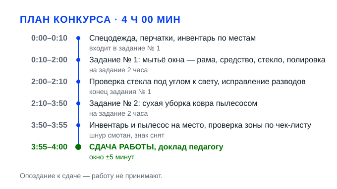
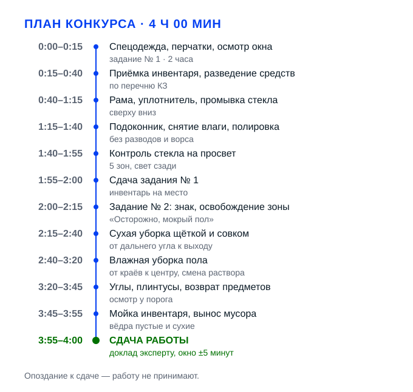
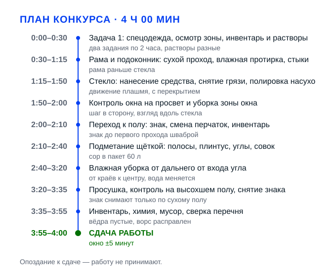

Помощник клинёра (ФВ)
Задания ниже — официальные файлы «Абилимпикс» (источник: abilympics-russia.ru), разложенные по категориям. Решения написаны по тексту задания, регламенту и критериям оценки; в них указано, что именно проверяет эксперт.
Школьник
14–16 лет, базовый уровень заданияВ официальном файле категории не разделены отдельными разделами — приводим задание целиком; различия по категориям смотрите в таблице модулей.
Пошаговое решение
Конкурсное задание школьной категории состоит из двух работ: промыть светопрозрачную конструкцию — мобильное окно в пластиковой раме — и выполнить сухую чистку коврового покрытия пылесосом. На каждое задание отведено по два часа, и оба результата описаны строго: на стекле не должно остаться грязи, пыли, пятен, отпечатков пальцев, высохших брызг, ореолов, разводов, мутности и остатков ворса, а на ковре — мелкого сора и пыли. Решение построено вокруг этих двух результатов: организация места и защита рук, затем окно в четыре перехода — рама, средство, снятие загрязнений, сухая полировка, — потом ковёр от подготовки пылесоса до смотанного шнура, и в конце уборка инвентаря с докладом педагогу. Время теряют на двух вещах: грязь с рамы, попавшая на стекло, и вода на кромке дают ровно те дефекты, что перечислены в критерии, а растянутый по полу шнур пылесоса — это уже не баллы, а риск травмы.

Задача 1. Организовать рабочее место и защитить себяПодготовка · до старта и первые 15 минут
Пока не начата работа, у вас есть пятнадцать минут, чтобы превратить пустую зону три на один и девять десятых метра в готовое рабочее место: надеть спецодежду и перчатки, осмотреть окно, ковёр и розетку, разложить три салфетки микрофибры по назначению и выставить предупредительный знак. Эти действия не входят в перечень «помыть стекло» и «пропылесосить ковёр», но именно они решают, будет ли у вас чистое стекло без разводов и сухой пол без лужи под ногами. Здесь же снимается главный риск конкурса: падение на мокром полу, удар током от пылесоса и испорченная химией пластиковая рама.
Действие 1.1. Надеть спецодежду и защитить руки
Шаг 1.1.1
Надеваем спецодежду до начала любых работ: халат или фартук застёгиваем полностью, рукава подворачиваем выше запястья или закрепляем резинкой, чтобы они не свисали в ведро и не цеплялись за ручку швабры. Обувь только закрытая, на нескользящей подошве и сухая: пол в зоне уборки будет мокрым уже через десять минут. Все завязки и пояса прячем, длинные шнурки заправляем внутрь, потому что за них легко зацепиться ногой при движении вдоль окна.
Требование надеть спецодежду записано в разделе охраны труда конкурсного задания прямо: каждый участник должен быть одет в специальную одежду. Оценивают при этом не красоту халата, а состояние: чистая ли одежда, застёгнута ли она, не мешает ли работать. Свисающий рукав — это ещё и практическая потеря: он тянет за собой мокрую салфетку по раме и оставляет за собой дорожку из капель, которую придётся убирать повторно.
Проверьте себя тремя признаками: одежда застёгнута по всей длине, рукава не спускаются к кистям, обувь сухая и не скользит по плитке. Пройдите два шага по зоне и резко остановитесь — если подошва едет, обувь не подходит, и это надо решать до старта, а не в середине мытья окна.
Самая частая ошибка — прийти в удобной открытой обуви или в футболке, рассчитывая надеть халат «потом, когда начнётся работа». Второй промах — оставить длинные завязки фартука болтаться сбоку: при наклоне к ведру они оказываются в воде с моющим средством, а потом переносят грязь по всей раме.
Эксперт фиксирует спецодежду до старта, а затем смотрит, остаётся ли она опрятной по ходу работы: брызги средства на груди и мокрые манжеты к середине конкурса тоже считаются нарушением.
Шаг 1.1.2
Надеваем резиновые перчатки по размеру: они должны сидеть плотно, без свободных «пальцев» на кончиках, иначе вы не почувствуете край салфетки и не поймёте, где заканчивается стекло. Перед надеванием проверяем каждую перчатку на прокол: набираем немного воздуха, сжимаем у запястья и слушаем, не выходит ли воздух через микротрещину. Вторую пару из комплекта держим в корзине как замену, потому что перчатка рвётся о край рамы чаще, чем кажется.
Моющее средство для стёкол обезжиривает кожу и сушит её за один контакт, а средство для пола содержит ПАВ, которые при попадании на кожу вызывают раздражение. В разделе охраны труда конкурсного задания перчатки стоят в перечне обязательного оснащения в двух штуках на участника, и это не формальность: работать голыми руками с химией запрещено, а испорченные руки к концу конкурса гарантируют смазанную работу с тряпкой.
Перчатки сидят без складок, пальцы свободны, вода внутрь не попадает. Проверьте простой приём: опустите руку в ведро на секунду и выньте — если под перчаткой сухо, она целая. Мокрые пальцы внутри перчатки — признак прокола, меняем пару сразу.
Классическая ошибка — надеть перчатки «на потом» и первые десять минут работать голыми руками, чтобы «чувствовать тряпку». Вторая — натянуть слишком свободные хозяйственные перчатки: в них салфетка выскальзывает, и вы не контролируете нажим на стекло, а именно нажим решает, останутся разводы или нет.
Смотрит эксперт на руки в начале работы и потом выборочно по ходу: целы ли перчатки, не работают ли голыми пальцами, меняют ли пару после разрыва. Для него важно и то, что участник делает после разрыва: меняет пару сразу или дорабатывает задание мокрыми пальцами.
Шаг 1.1.3
Снимаем часы, браслеты, кольца и длинные серьги, убираем волосы под резинку или заколку так, чтобы они не падали на лицо при наклоне. Ногти коротко подстрижены, без лака и накладных покрытий. Химию и воду берём только чистыми руками: перед работой моем руки с мылом и вытираем насухо, потому что мокрые руки в перчатках превращаются в компресс, и через полчаса работы пальцы теряют чувствительность.
Под украшениями остаются загрязнения, которые не смываются, а камень из кольца или звено браслета легко цепляются за микрофибру и оставляют затяжку на ткани — салфетка после этого мажет стекло ворсом. Волосы, упавшие на влажное стекло, прилипают и снимаются только повторным проходом, а в критерии результата прямо записано отсутствие остатков ворса и мутности на стекле.
Волос не видно ни спереди, ни сзади, украшений на руках нет, ногти короткие. Попросите волонтёра или наставника посмотреть на вас со спины — именно сзади чаще всего остаётся выбившаяся прядь, которая потом упадёт на подоконник.
Оставить обручальное кольцо «оно же не мешает»: под ним скапливается влага, а микрофибра цепляется за него и рвётся. Собрать волосы небрежно, одной резинкой без фиксации — тоже ошибка: при наклоне к ведру прядь падает в воду с химией.
Эксперт оценивает внешний вид и гигиену до старта: убранные волосы, чистые руки, отсутствие украшений — это отдельная строка в его чек-листе. Отдельной строкой идёт и то, не поправляет ли участник волосы руками в перчатках по ходу работы: этот жест виден и сразу снижает оценку гигиены.
Действие 1.2. Осмотреть зону и найти опасности
Шаг 1.2.1
Обходим рабочую зону по периметру и убираем всё, что будет мешать: стулья, напольный декор, комнатные растения, коврики, коробки. Свободный проход должен остаться не меньше полутора метров — это требование к оснащению рабочих мест из конкурсного задания. Пол под ногами проверяем на ощупь: сухой ли он, нет ли лужи, провода или рассыпанных мелких предметов, о которые можно споткнуться с ведром в руке.
Полтора метра прохода нужны не для красоты: с ведром воды и шваброй вы двигаетесь вдоль окна и вокруг ковра, и любой предмет в этой полосе превращается в препятствие, через которое приходится переступать с полным ведром. Кроме того, по разделу охраны труда перед началом работы участник обязан внешним осмотром проверить состояние полов и убрать ненужные предметы.
Проход по всей длине свободен, пол сухой, посторонних предметов нет. Пройдите зону от входа до окна и обратно, держа в руках воображаемое ведро: если приходится поворачиваться боком — препятствие ещё не убрано.
Ошибка — оставить стул или растение «с краю, оно не мешает»: при мытье окна вы делаете шаг назад, чтобы посмотреть на стекло под углом, и наступаете на ножку стула. Второй промах — не заметить провод пылесоса, протянутый через проход, и наступить на него с мокрыми руками.
Эксперт оценивает организацию рабочего места в первые минуты: свободен ли подход к окну, нет ли вещей в зоне уборки, не создаёте ли вы риск падения. Второй его признак — куда поставлено ведро: под окном или сбоку, на проходе или вне его.
Шаг 1.2.2
Осматриваем окно: цело ли стекло, нет ли трещин и сколов, надёжно ли держится рама в проёме, нет ли острых кромок на пластике. Проводим ладонью в перчатке по краю стекла и по фальцам, чтобы найти заусенцы, о которые рвётся микрофибра. Смотрим на нижнюю часть рамы: там расположены дренажные отверстия, и если они забиты, вода при мытье пойдёт внутрь профиля.
В разделе охраны труда прямо записано, что мыть и протирать окна при наличии разбитых стёкол, непрочных и неисправных переплётах запрещено. Мобильное окно на конкурсе — стекло в пластиковой раме, и его состояние проверяют до старта: если обнаружен скол, участник обязан позвать эксперта, а не начинать мытьё. Самостоятельные действия при внештатной ситуации запрещены.
Стекло целое, рама держится, острых кромок нет, дренажные отверстия чистые. Если нашли повреждение — остановитесь и поднимите руку: работу по этому окну не начинают до решения эксперта. Отдельно осмотрите верхнюю кромку: там скол заметен только при взгляде снизу вверх.
Начать мытьё, заметив трещину «она маленькая»: при нажиме салфеткой стекло может лопнуть, и это уже травма, а не потеря баллов. Не проверить нижнюю кромку рамы и залить дренажные отверстия средством, после чего вода с химией выступит на подоконнике — тоже промах.
За осмотром эксперт наблюдает отдельно: умеет ли участник увидеть дефект и правильно ли реагирует — остановкой и обращением, а не работой «как есть». Обращает он внимание и на реакцию: поднятая рука и остановка ценятся выше, чем попытка доделать работу на повреждённом стекле.
Шаг 1.2.3
Смотрим на ковровое покрытие: нет ли на нём влаги, крупного мусора, скрепок, булавок, осколков и рассыпанной крупы, потому что пылесос такие предметы не собирает, а разбрасывает или забивает ими щётку. Отдельно проверяем розетку: она должна быть исправной, сухой, с целым корпусом, и расположена так, чтобы шнур от пылесоса дотягивался до дальнего угла покрытия без натяжения.
Крупный мусор снимается вручную и в пакет, иначе он царапает насадку и остаётся на ворсе, а критерий результата требует отсутствия мелкого сора и пыли на покрытии. Сухая розетка — вопрос жизни: по разделу охраны труда работать с электричеством можно только при исправном оборудовании, а при появлении напряжения на корпусе машину немедленно отключают и зовут эксперта.
Ковёр сухой, крупного мусора нет, розетка целая и сухая, шнур дотягивается до дальнего края с запасом в метр. Если покрытие влажное — сухую уборку начинать нельзя, сначала сообщаем эксперту. Отдельно проверьте розетку на ощупь: она должна быть сухой и не тёплой от чужой нагрузки.
Пропустить на ковре влажное пятно и включить пылесос: вода попадает в двигатель, машина глохнет, а участник остаётся без оборудования в середине задания. Включить вилку в розетку с трещиной на корпусе — столь же частая ошибка.
Эксперт проверяет, осмотрел ли участник покрытие и розетку до включения: это часть критерия безопасности и организации. Важно для него и то, как участник проверял розетку: взглядом, рукой или вообще не смотрел.
Действие 1.3. Разложить инвентарь и химию по назначению
Шаг 1.3.1
Достаём химию из корзины для хранения и ставим её так, чтобы этикетка читалась с рабочего места: средство для мытья окон — у окна, средство для пола — у ведра для пола. Флакон с распылителем проверяем нажатием в воздух в стороне от окна: факел должен быть ровным, без крупных капель, которые летят струёй. Крышки не откручиваем полностью, а держим закрытыми, пока средство не нужно.
В конкурсном задании перечислены отдельные средства для окон и для пола, и путать их нельзя: средство для пола оставляет на стекле плёнку, которая проявляется мутностью и радужными разводами — ровно теми дефектами, отсутствие которых записано в результате. Пробное нажатие в воздух нужно, чтобы первое облако не ушло крупными каплями на раму и подоконник.
Факел ровный, этикетка читается, крышки закрыты, средства стоят по своим зонам. Нажмите три раза в воздух и посмотрите на распыл: крупные капли на расстоянии вытянутой руки означают, что сломан распылитель и его надо заменить.
Взять первое попавшееся средство «разницы нет»: чужая химия даёт плёнку и мутность, а переделывать стекло придётся с нуля, уже потеряв время. Открутить крышку и лить средство из флакона на салфетку — ошибка не менее частая: половина уходит на пол, а концентрация на стекле получается неравномерной.
Эксперт смотрит, различает ли участник средства по назначению и работает ли с распылителем так, как задумано производителем. Дальше он смотрит на порядок на столе с химией: стоят ли флаконы так, что при случайном движении их не опрокинуть локтем.
Шаг 1.3.2
Разбираем три салфетки микрофибры по назначению и не смешиваем их до конца задания: первая — для рамы и подоконника, вторая — для стекла, третья — сухая, для финишной полировки. Каждую складываем вчетверо или гармошкой, чтобы получилось восемь рабочих плоскостей, и по мере загрязнения переворачиваем на чистую сторону. Сухую салфетку держим отдельно от влажных, в кармане халата или на сухом краю подоконника.
Три салфетки в перечне выданы именно потому, что одна тряпка не может быть чистой и сухой одновременно. Если одной салфеткой протереть раму, а потом стекло, вы перенесёте на стекло грязь с фальцев и получите серые полосы, а критерий требует отсутствия грязи, пятен и остатков ворса. Складывание вчетверо экономит время: вместо того чтобы бежать за новой тряпкой, вы переворачиваете квадрат.
Салфетки разложены и не перепутаны, у каждой своё место, рабочая плоскость чистая на вид. Проверьте на ощупь: сухая салфетка должна быть именно сухой, без влажных уголков — иначе на стекле останутся следы.
Одна тряпка на всё — самая частая ошибка этого задания: рама, стекло, подоконник и пол моются одним куском ткани, грязь размазывается, и на финише стекло выглядит мутным. Держать сухую салфетку рядом с ведром, где она моментально набирает влагу — ровно такой же промах.
Проверяет эксперт, сколько салфеток реально в работе и не путает ли участник назначение: это видно по чистоте стекла и по тому, чем он вытирает раму. Фиксирует он и то, не лежит ли сухая салфетка рядом с ведром, где она мгновенно набирает влагу.
Шаг 1.3.3
Раскладываем остальное снаряжение по порядку работы: ведро для мытья окон — у окна, пылесос — у коврового покрытия, насадку для ковра — рядом с пылесосом, пакет для мусора объёмом шестьдесят литров — в зоне, где вы не будете через него переступать. Щётку и совок ставим так, чтобы они не мешали проходу, но были под рукой, если на полу появится мусор.
Порядок на рабочем месте — это не эстетика, а скорость: когда ведро стоит у окна, вы не носите его через всю зону, а когда насадка лежит рядом с пылесосом, вы не ищете её на полу в перчатках. Кроме того, разложенный инвентарь проверяют по перечню конкурсного задания, и в нём есть позиции, которые участники забывают взять: щётка, совок, пакет для мусора.
Всё по перечню на месте и в пределах вытянутой руки от зоны применения. Пересчитайте позиции по списку и убедитесь, что нет лишнего мусора от упаковки на полу. Загляните под инвентарь: пакет и ведро не должны стоять в луже, иначе инвентарь придётся вытирать перед работой.
Свалить инвентарь в кучу в центре зоны: вы будете переступать через него с ведром и обязательно заденете. Оставить пакет для мусора открытым на полу, где в него натечёт вода от салфеток — не меньший промах.
Эксперт оценивает организацию по тому, насколько рационально разложено и как быстро участник находит нужное. Для него показательно и время: успел ли участник разложить всё за первые минуты или искал насадку уже с включённым пылесосом.
Действие 1.4. Выставить предупредительный знак
Шаг 1.4.1
Ставим предупредительный знак на входе в зону уборки, со стороны, откуда приходят люди, а не у самого окна. Знак должен стоять устойчиво, на ровном полу, и читаться с расстояния нескольких шагов: если он сложен или повёрнут надписью к стене, он не работает. Если знак складной, раскрываем его полностью и проверяем, что ножки не шатаются. Знак ставим так, чтобы он не перекрывал проход: его задача — предупредить, а не заставить человека обходить зону по краю.
Знак нужен потому, что через десять минут работы пол вокруг окна станет мокрым, а любой проходящий человек — это риск падения и одновременно риск испорченной работы: на стекле появятся новые отпечатки, а на полу следы. В разделе охраны труда выставление предупредительных знаков записано как обязательное действие до начала работ, а не как рекомендация.
Знак стоит на входе, раскрыт, устойчив, надпись видна. Проверьте, подойдя к зоне со стороны коридора: если с этой точки знак не читается, разверните его. Проверьте знак ещё и на устойчивость: толкните его носком обуви слабо — он не должен падать.
Поставить знак у самого окна или за ведром, где его не видно от входа. Поставить знак и не заметить, что он шатается — из той же серии: от лёгкого касания он падает и перестаёт предупреждать. Поставить знак в слепой зоне, за колонной, где его видно только вплотную — и это тоже минус.
Эксперт фиксирует наличие знака в начале работы и смотрит, остаётся ли он на месте до конца уборки. Проверяет он и то, не снесли ли знак в процессе: по положению знака видно, следил ли участник за зоной.
Шаг 1.4.2
Убеждаемся, что в зоне нет посторонних: людей, сумок, личных вещей. Если кто-то стоит рядом с окном, спокойно просим отойти за пределы знака и объясняем, что пол будет мокрым. В разделе охраны труда отдельно сказано: не допускать в зону проведения работ посторонних лиц и не отвлекаться на них, поэтому разговор лучше закончить до первого нажатия распылителя.
В зоне конкурса рядом с вами находятся эксперты и волонтёры, и каждый проходящий человек — это и риск столкновения с ведром, и новые отпечатки на только что вымытом стекле. Предупредить заранее проще, чем потом переделывать участок и объяснять, почему на стекле чужой след.
В зоне уборки никого нет, посторонние вещи убраны за границу знака. Обведите взглядом зону по кругу и проверьте, что никто не стоит в пределах полутора метров от окна. Пройдите взглядом путь к выходу: по нему никто не должен идти через мокрую зону.
Начать мытьё, когда рядом стоит человек с сумкой: он заденет ведро или оставит отпечатки, а виноват в итоге будет участник. Отвлекаться на разговоры в процессе и терять счёт времени — тоже ошибка. Начать работу, не заметив, что рядом стоит человек с телефоном и снимает — и это уже грубая ошибка: он отвлекает и мешает движению.
Отмечает эксперт, умеет ли участник обозначить границы зоны и удержать её до конца работы, не отвлекаясь. Он видит, как участник разговаривает: спокойно и коротко или раздражённо, теряя контроль над зоной.
Задача 2. Промыть светопрозрачную конструкциюЗадание № 1 · 2 часа
Главное задание школьной категории: стекло в пластиковой раме должно остаться без грязи, пыли, пятен, отпечатков пальцев, высохших брызг, ореолов, разводов, мутности и остатков ворса. Работа идёт в четыре перехода: влажная рама, средство на стекло, снятие загрязнений микрофиброй и сухая полировка. Порядок нарушать нельзя, потому что грязь с рамы, попавшая на стекло, и вода, оставшаяся на кромке, дают именно те дефекты, которые перечислены в критерии. На всё задание в конкурсном задании отведено два часа.
Действие 2.1. Подготовить воду, средство и место у окна
Шаг 2.1.1
Набираем в ведро для мытья окон тёплую воду примерно тридцати-сорока градусов — рука в перчатке терпит, но пар не идёт. Ведро заполняем на треть, не больше: полное ведро тяжелее, его неудобно переносить вдоль окна, и из него выплёскивается вода на пол при каждом шаге. Воду берём чистую, из-под крана, и не добавляем в неё ничего, кроме средства, потому что любые самодельные смеси дают плёнку.
Тёплая вода растворяет загрязнения быстрее холодной, а на треть заполненное ведро не расплёскивается и не тянет руку. Если налить воду «до краёв», при первом же переносе она пойдёт через борт, и вы получите лужу на полу за две минуты до начала мытья стекла — то есть ровно там, где будете стоять.
Воды примерно на треть ведра, она тёплая и прозрачная, на полу вокруг ведра сухо. Проверьте рукой в перчатке: вода должна быть ощутимо тёплой, но не горячей, иначе средство начнёт испаряться прямо с салфетки.
Налить ведро до краёв «чтобы хватило на всё окно»: вода выплёскивается, пол становится скользким, и вы теряете время на вытирание вместо мытья. Набрать ледяную воду — тоже промах: средство на холоде работает хуже, а стекло остывает и дольше сохнет.
Эксперт смотрит на подготовку воды и на то, не создаёт ли участник лужи в рабочей зоне. Отдельно он отмечает полное ведро: по нему сразу видно, думал ли участник о том, как будет нести воду вдоль окна.
Шаг 2.1.2
Проверяем флакон со средством для мытья окон: распылитель накручен до упора, сопло не забито, жидкость в нём есть. Делаем два пробных нажатия в сторону, подальше от окна и от собственного лица, и оцениваем облако: оно должно быть мелким и широким, а не бить струёй в одну точку. Если распылитель «плюётся» крупными каплями, промываем сопло тёплой водой или берём запасной флакон.
Струя вместо облака — это капли, которые текут по стеклу вниз, оставляя дорожки и высохшие следы, а критерий требует отсутствия высохших брызг и ореолов. Мелкий ровный распыл даёт равномерную плёнку средства, и загрязнение снимается одним проходом, без повторного натирания, которое как раз и создаёт мутность.
Облако на расстоянии вытянутой руки выглядит туманом без капель на полу и на раме. Если после двух нажатий на полу под флаконом остались капли — распылитель неисправен. Проверьте флакон ещё и на подтёки: если на корпусе липко, крышка или сопло пропускают.
Нажимать на флакон, держа его в двадцати сантиметрах от стекла: средство ложится плотным мокрым пятном, течёт по раме и попадает в дренажные отверстия. Не проверить распылитель и обнаружить струю уже на стекле, когда дорожки уже потекли — столь же частая ошибка.
Эксперт наблюдает, как участник обращается с распылителем: держит ли его на нужном расстоянии и проверяет ли факел до работы. Смотрит он также на расстояние до стекла: слишком близкий флакон выдаёт участника, который не работал с распылителем.
Шаг 2.1.3
Организуем свет так, чтобы видеть дефекты, но не работать под прямым солнцем: если есть жалюзи или шторы, прикрываем их так, чтобы на стекле был рассеянный свет. Салфетки раскладываем в порядке применения — влажная для рамы, влажная для стекла, сухая для полировки. Ведро ставим сбоку от окна, а не под ним, чтобы не наступить в него при шаге назад. Шторку или жалюзи, если они есть, оставляем прикрытыми до конца мытья.
На ярком прямом свете средство сохнет за секунды, и вы не успеваете снять загрязнение — на стекле остаются ореолы от высохшей химии. Рассеянный свет позволяет увидеть разводы под углом, то есть проверить работу до того, как её начнёт проверять эксперт. Ведро сбоку — простая страховка от падения и от разлитой воды.
Свет мягкий, тени на стекле не режут глаз, ведро не под окном, салфетки лежат по порядку. Встаньте на место, где будете работать, и посмотрите: не придётся ли тянуться через ведро. Прикиньте расстояние до стекла: не придётся ли тянуться, стоя на носках.
Работать под прямым солнцем или под лампой вплотную к стеклу: средство высыхает раньше, чем вы его разотрёте, и вместо чистого стекла получается матовое пятно. Поставить ведро прямо под окном, где вы стоите, и опрокинуть его локтем — ошибка не менее частая.
Видит эксперт, подготовил ли участник место так, чтобы работать, а не переставлять ведро через каждые пять минут. В оценку идёт и то, не стоит ли участник на отливе подоконника: это прямо запрещено разделом охраны труда.
Действие 2.2. Протереть раму влажной микрофиброй
Шаг 2.2.1
Берём первую салфетку микрофибры, смачиваем её в ведре и хорошо отжимаем: она должна быть влажной, но из неё не должно течь при сжатии. Начинаем с верхней перекладины рамы и идём вниз по периметру, затем проходим внутренние фальцы — те пазы, в которые вставлено стекло. Движения идут по направлению профиля, а не поперёк: так грязь выносится из угла, а не вбивается в него.
Рама собирает пыль и строительную грязь, которая при первом же попадании воды на стекло стекает вниз и оставляет серые полосы. В последовательности работ конкурсного задания рама идёт отдельным пунктом перед стеклом именно поэтому. Отжатая салфетка нужна, чтобы вода не текла по профилю в дренажные отверстия и не выступила потом на подоконнике.
Салфетка влажная, но не течёт, рама без видимой пыли, углы чистые, вода не стоит в пазах. Проведите пальцем в перчатке по нижнему фальцу: на нём не должно остаться серого следа. Не забудьте верхнюю перекладину: на ней оседает пыль, которая потом с водой стекает на стекло.
Тереть раму мокрой тряпкой, с которой льёт вода: грязь размазывается по профилю и стекает на стекло, а вы потом не понимаете, откуда полосы. Протереть только видимую лицевую часть рамы и не тронуть фальцы, где грязи больше всего — ровно такой же промах.
Эксперт смотрит на раму вблизи, на уровне глаз: подтёки в углах и грязь в фальцах видны сразу. Он смотрит, в каком порядке идёт работа: рама, потом стекло, или наоборот — и это хорошо видно по подтёкам.
Шаг 2.2.2
Отдельно проходим нижнюю часть рамы и дренажные отверстия: уголком отжатой салфетки снимаем грязь вокруг каждого отверстия, не заливая внутрь. Протираем резиновый уплотнитель по всему периметру, раздвигая его пальцем в перчатке, потому что именно в складке скапливается чёрный налёт. Пластик протираем без нажима: абразивные губки и жёсткая сторона салфетки оставляют на нём матовые потёртости, которые уже не убрать.
Дренажные отверстия отводят воду из профиля наружу; если они забиты грязью и залиты средством, вода с химией выходит на подоконник и оставляет там лужицу с разводами — а подоконник входит в зону результата. Уплотнитель нужен для того, чтобы окно закрывалось герметично, и грязь в его складке при работе размазывается по стеклу при каждом касании.
Отверстия свободны, вода в них не стоит, уплотнитель чистый по всей длине, на пластике нет потёртостей. Проверьте нижний угол рамы: там чаще всего остаётся тёмная полоса, которую видно только при наклоне.
Залить отверстия средством «чтобы промылось»: вода с химией уходит внутрь профиля и выступает снаружи через час, уже при экспертной проверке. Тереть пластик жёсткой стороной салфетки и оставить на нём сетку царапин — не меньший промах.
Эксперт проводит пальцем по нижней части рамы и по уплотнителю: след на перчатке — минус за качество. Интересует его и то, чем участник чистит углы: уголком салфетки или ногтем через ткань, что оставляет задиры на пластике.
Шаг 2.2.3
Вытираем раму насухо второй салфеткой или сухим уголком первой, проходя по периметру в том же порядке — сверху вниз. Особое внимание нижней перекладине: на ней вода стоит дольше всего и оттуда она потечёт на стекло при первом же нажатии распылителя. Салфетку для сухой протирки держим отдельно и не мочим в ведре до конца задания. Если рама всё же осталась влажной, повторяем проход сухим уголком, а не ждём, пока высохнет само.
Сухая рама — это гарантия, что вода с профиля не потечёт по чистому стеклу и не оставит за собой дорожку с разводами. Кроме того, на мокром пластике оседает пыль из воздуха, и к финишу рама выглядит грязнее, чем была до мытья. Критерий результата требует отсутствия грязи и разводов вокруг очищенных участков, а не только на самом стекле.
Рама сухая на ощупь, без капель в углах и на нижней перекладине, салфетка после прохода осталась чистой. Приложите сухую салфетку к нижнему углу: на ней не должно остаться мокрого пятна. Осмотрите стык рамы с уплотнителем: там вода держится дольше всего.
Пропустить сухую протирку и сразу перейти к стеклу: вода стекает по раме на чистое стекло и оставляет подтёки, которые придётся снимать повторно, уже потеряв время. Вытирать раму той же салфеткой, которой только что снимали грязь — из той же серии.
Смотрит эксперт на стык рамы и стекла: именно там видно, вытирали раму насухо или нет. Проверяет он и салфетку после протирки рамы: чистая она или серая от грязи, которую потом понесли на стекло.
Действие 2.3. Нанести средство на стекло
Шаг 2.3.1
Наносим средство сверху вниз, обрабатывая участки примерно сорок на сорок сантиметров: два-три нажатия на один участок с расстояния двадцать-двадцать пять сантиметров. Держим флакон ровно, чтобы трубка внутри была в жидкости, и ведём руку слева направо, перекрывая предыдущую полосу на пять сантиметров. Сначала верхняя треть стекла, потом средняя, потом нижняя — так средство не успевает высохнуть там, где вы уже прошли.
Равномерное нанесение участками даёт одинаковую концентрацию по всей площади, и загрязнение снимается одним движением. Если полить стекло целиком сразу, верхняя часть высохнет, пока вы дойдёте до низа, и на ней останутся ореолы — прямое нарушение критерия. Перекрытие полос исключает пропущенные полоски, которые видно только под углом к свету.
Стекло покрыто ровной влажной плёнкой без сухих островков, капель на раме нет. Отойдите на шаг и посмотрите на отражение света: плёнка должна блестеть одинаково по всей площади. Оцените равномерность: на стекле не должно быть участков, где средство нанесено дважды.
Наносить средство на всё стекло одним плотным слоем: оно высыхает сверху, и вы трёте уже сухую химию, размазывая её в мутные пятна. Лить на стекло в упор, с пяти сантиметров — тоже ошибка: капли текут по раме и попадают в дренажные отверстия.
Эксперт смотрит на распределение средства: пятнами или ровно, не течёт ли оно по раме. Он отмечает и темп: если участник успевает обработать участок до высыхания, техника у него поставлена.
Шаг 2.3.2
Не разбрызгиваем средство на стык стекла и рамы, на уплотнитель и на подоконник: держим факел так, чтобы он попадал только на стекло, а у краёв стекла работаем салфеткой, а не распылителем. Если капли всё-таки попали на пластик, сразу вытираем их сухим уголком салфетки, не давая средству высохнуть. На нижнюю кромку стекла наносим средство скупо, одним нажатием.
Средство для стёкол содержит спирты и поверхностно-активные вещества, которые на пластике при высыхании оставляют белые пятна и разъедают защитное покрытие. На подоконнике высохшие капли дают ореолы, а критерий требует отсутствия ореолов вокруг очищенных участков. У нижней кромки средство скапливается и течёт вниз по раме быстрее, чем вы успеваете его снять.
На раме и подоконнике нет капель и белых следов, уплотнитель сухой. Проведите сухой салфеткой по краю рамы после каждого участка: на ней не должно быть влаги с химией. Отдельно проверьте нижнюю кромку стекла: там капли скапливаются быстрее всего и текут по раме.
Разбрызгать средство по всей раме «для дезинфекции»: пластик белеет, а восстановить его на конкурсе нечем. Не заметить, что капли попали на подоконник, и оставить их сохнуть до проверки — тоже промах.
Эксперт осматривает края стекла и раму: разводы и белёсые пятна на пластике считаются грубым дефектом. Замечает он и флакон в руке: держат ли его ровно, не болтают ли над подоконником.
Шаг 2.3.3
Если на стекле есть засохшие брызги, отпечатки пальцев или следы скотча, не трём их сразу, а даём средству поработать двадцать-тридцать секунд: наносим на пятно дополнительное нажатие и оставляем. Затем снимаем размягчённое загрязнение салфеткой от края пятна к центру, чтобы не размазать его по чистой площади. На отпечатки у ручки тратим два прохода, а не десять.
Свежее загрязнение снимается одним движением, а засохшее требует времени на размягчение. Если начать тереть сухое пятно, вы размажете его по стеклу и получите мутное облако, которое снимается только полным повторным мытьём участка. Отпечатки пальцев — отдельная строка в критерии результата, их ищут в первую очередь у ручки и по краям.
Пятно размягчилось и снимается без нажима, под салфеткой не остаётся серого следа. Посмотрите на участок под углом к свету: граница между обработанной и необработанной зоной не должна читаться. Засеките время выдержки: если пятно снимается с нажимом, значит, размягчения не хватило.
Тереть сухое пятно сухой салфеткой: вы царапаете стекло микрочастицами и размазываете грязь, а мутное облако потом не снять без повторного мытья. Снимать пятно круговыми движениями на одном месте — столь же частая ошибка: получается ореол.
Прицельно ищет эксперт отпечатки и высохшие брызги: это самые частые дефекты в этом задании. Считается и то, сколько проходов сделано по одному месту: два-три — норма, десять — тревожный признак.
Действие 2.4. Снять загрязнения микрофиброй
Шаг 2.4.1
Берём вторую салфетку, сложенную вчетверо, и снимаем средство вертикальными полосами сверху вниз, начиная с верхнего левого угла. Ведём полосу от рамы до рамы, перекрывая предыдущую на пять-десять сантиметров, и не отрываем салфетку от стекла внутри полосы: разрыв движения оставляет на границе высохшую кромку. Как только квадрат салфетки загрязнился, переворачиваем его на чистую сторону и продолжаем.
Вертикальные полосы с перекрытием дают контролируемый проход без пропусков: вы всегда видите, где уже прошли. Отрыв салфетки на середине полосы — это место, где средство успевает подсохнуть, и именно там потом появляется полоса. Переворот квадрата вместо промывания салфетки экономит время: микрофибра работает грязной стороной хуже, чем чистой.
Стекло без видимых полос, салфетка после прохода влажная и грязная, но не течёт. Посмотрите на стекло сбоку: границы между полосами не должны читаться. Проверьте состояние салфетки: если она стала холодной и тяжёлой от воды, квадрат пора менять.
Тереть круговыми движениями по всей площади: круги дают ореолы, которые видны под углом к свету. Вести салфетку в разных направлениях на соседних участках, из-за чего на стыке остаются мутные клинья — ошибка не менее частая.
Эксперт смотрит на траекторию движения салфетки: система видна и в результате, и в самом процессе. Обращает внимание и на руки: ведущая рука должна идти ровно, без дрожания и остановок внутри полосы.
Шаг 2.4.2
Загрязнённые участки проходим повторно, но не тем же квадратом салфетки: переворачиваем её на чистую сторону и ведём в направлении, перпендикулярном первому проходу — если сначала шли сверху вниз, теперь слева направо. Нажим умеренный: салфетка должна прилегать к стеклу, но не проминаться до рамы. Засохшее пятно снимаем от края к центру, а не наоборот.
Перпендикулярный проход снимает то, что осталось после первого: грязь всегда распределяется поперёк движения тряпки, и второй проход поперёк закрывает эти линии. Сильный нажим не помогает — он лишь выжимает из микрофибры грязную воду обратно на стекло, а на пластиковой раме ещё и прогибает уплотнитель.
На стекле не остаётся линий и полос, участок сохнет равномерно, без светлых и тёмных зон. Проверьте, наклонив голову к стеклу: при таком угле видны все разводы, которые не видны прямо. Проверьте участок ещё и на просвет сбоку: на сухом стекле не должно остаться радужных пятен от средства.
Давить изо всех сил «чтобы уж наверняка»: из салфетки выступает вода с растворённой грязью, и стекло сохнет с разводами. Проходить второй раз тем же грязным квадратом, который только что собрал грязь — ровно такой же промах.
Эксперт оценивает нажим и смену рабочей поверхности: размазанная грязь читается как неумение работать с микрофиброй. Замечает он и то, меняет ли участник плоскость салфетки: грязная микрофибра мажет, и это видно по стеклу.
Шаг 2.4.3
Отдельно проходим углы и края стекла: там скапливается вода, и именно там остаются следы. Уголок салфетки заводим в угол и ведём вдоль кромки, не задевая раму. Полосу у ручки, если она есть, протираем дважды: сначала влажной стороной от рамы к центру, потом сухим уголком. Нижнюю кромку стекла проходим последней, потому что туда стекает всё, что снимается сверху.
Углы и кромки — места, где вода задерживается дольше всего, и оттуда она потом стекает на уже чистое стекло, оставляя дорожку. В критерии результата отдельно указаны разводы вокруг очищенных участков: они появляются именно из углов. Нижняя кромка идёт последней, чтобы не собирать вниз грязь с уже вымытых участков.
В углах нет воды и тёмных точек, кромка стекла чистая по всей длине, салфетка в углу осталась светлой. Проведите уголком салфетки по нижней кромке: на ней не должно быть серой полосы. Пройдите по вертикальным кромкам у рамы: узкая полоса вдоль них чаще всего остаётся необработанной.
Пройти углы той же салфеткой, которой мыли середину: в угол переносится грязь, и он остаётся тёмным. Начать с нижней кромки, а потом мыть верх и снова залить её водой — не меньший промах. Проходить кромку ногтем через салфетку — и это отдельный минус: на стекле остаётся след, а на пластике задир.
Наклоняется эксперт к углам рамы: именно они показывают, насколько аккуратно выполнена работа. Фиксирует он и свет: если участник поворачивает голову, чтобы поймать блик, он действительно ищет дефекты.
Действие 2.5. Отполировать насухо и проверить на просвет
Шаг 2.5.1
Берём третью, сухую салфетку и полируем стекло, когда на нём почти не осталось влаги: сначала сверху вниз, затем поперёк, короткими движениями с лёгким нажимом. Сухая микрофибра должна идти по стеклу с лёгким сопротивлением и слегка «пищать» — это признак, что она работает по сухой поверхности, а не скользит по воде. Меняем плоскость салфетки каждые полквадрата.
Полировка убирает остаточную влагу, в которой растворены следы средства — именно она даёт разводы и мутность после высыхания. Если полировать мокрое стекло, сухая салфетка мгновенно набирает воду и начинает размазывать её по площади. Критерий результата требует отсутствия мутности и остатков ворса, а сухая полировка решает обе задачи сразу.
Стекло сухое на ощупь, салфетка не намокла, поверхность блестит ровно. Приложите ладонь в перчатке к стеклу на пару секунд: если остался влажный след — полировка не закончена. Взгляните на салфетку: если она намокла до середины, полировку надо прервать и взять сухую.
Полировать сразу после влажного прохода, не дав воде испариться: салфетка намокает, и вместо полировки получается повторное размазывание. Полировать одним и тем же квадратом всю площадь — из той же серии: он быстро насыщается влагой и начинает оставлять полосы.
Эксперт смотрит на финиш: блеск должен быть ровным, без «проплешин», где салфетка прошла, а где нет. Отмечает он и звук: сухая микрофибра идёт с лёгким скрипом, влажная — молча, и это слышно.
Шаг 2.5.2
Проверяем результат под углом: отходим на полтора-два шага и смотрим на стекло сбоку, так, чтобы в нём отражался светлый фон, а не окно напротив. Медленно ведём взглядом сверху вниз и слева направо, ищем полосы, ореолы, мутные пятна, ворс и отпечатки. Отдельно проверяем зону у ручки и нижнюю кромку — там дефекты заметнее всего. Если в стекле отражается тёмный фон, повернитесь так, чтобы за ним была светлая стена.
Прямой взгляд с близкого расстояния не показывает разводов: глаз адаптируется, и стекло кажется чистым. Под углом к светлому фону видно всё, что увидит эксперт, — и полосы от салфетки, и высохшие капли. Проверка занимает минуту, а исправление одного пропущенного участка потом стоит десяти.
На стекле нет полос, ореолов и мутных зон, ворс не виден, отражение ровное. Если видите дефект — отметьте его место рукой, чтобы не искать заново. Проверьте по горизонтали: разводы часто идут полосой на уровне глаз, где салфетку вели быстрее всего.
Осматривать стекло вплотную и прямо: так не видно ни разводов, ни мутности, и участник сдаёт работу с дефектами, которые эксперт находит за секунду. Смотреть только центр и не проверять кромки — тоже ошибка.
Эксперт осматривает стекло именно под углом и с расстояния: это стандартный приём проверки в этой компетенции. Он смотрит, с какого расстояния участник проверяет стекло: вплотную или с полутора шагов, как положено.
Шаг 2.5.3
Найденный дефект исправляем локально, не перемывая всё стекло: смачиваем салфетку средством из флакона одним нажатием, проходим пятно от края к центру и сразу полируем сухим уголком. Если развод тянется полосой по всей высоте, значит, дело в грязной салфетке — берём чистую плоскость и проходим полосу заново. После исправления снова проверяем участок под углом к свету.
Локальное исправление экономит время: полное повторное мытьё стекла занимает десять-пятнадцать минут, а точечная обработка — одну. При этом важно найти причину: если салфетка грязная, любое количество проходов только добавит полос. Критерий оценивает итоговое состояние стекла, поэтому исправлять нужно до полной чистоты, а не «примерно».
Исправленный участок не отличается от остального стекла, границы не читаются. Проверьте и сам участок, и зону вокруг него: часто развод остаётся по краю исправленного пятна. Перепроверьте в отражении после исправления: граница между старым и новым проходом не должна блестеть иначе.
Мыть пятно заново всей салфеткой, смоченной в ведре: грязная вода из ведра возвращает на стекло то, что вы только что сняли. Исправлять дефект и не проверять результат повторно — тоже промах. Исправлять развод сухой салфеткой без средства — и это тоже потеря баллов: он не снимается и только размазывается шире.
Подойти эксперт может в момент исправления и оценить, понимает ли участник причину дефекта, а не просто трёт наугад. Проверяет он и то, нашёл ли участник причину: грязная салфетка, жёсткая вода или высохшее средство.
Задача 3. Выполнить сухую чистку коврового покрытия пылесосомЗадание № 2 · 2 часа
Второе задание школьной категории: снять с коврового покрытия мелкий сор и пыль пылесосом. Результат оценивают одним признаком — на покрытии не должно остаться мелкого сора и пыли, но путь к нему состоит из пяти обязательных пунктов конкурсного задания: подготовка пылесоса, вытягивание шнура, подключение к розетке, сама уборка и уборка инвентаря на место. Здесь же сосредоточены все электрические риски: шнур под ногами, мокрая розетка, перегрев двигателя. Ошибка в подключении стоит не баллов, а оборудования.
Действие 3.1. Подготовить пылесос к работе
Шаг 3.1.1
Ставим пылесос на ровный сухой пол у края покрытия и осматриваем корпус: нет ли трещин, сколов и следов удара, целы ли колёса и ручка. Проверяем шланг по всей длине — он не должен быть перекручен, раздавлен или иметь трещин у гофры, потому что через трещину уходит воздух и пропадает тяга. Ставим насадку для ковра: щетинистую или комбинированную, с опущенной щёткой, и проверяем, что она защёлкнулась на трубке до щелчка.
Осмотр корпуса и шланга — обязательная часть подготовки: в разделе охраны труда записано, что оборудование эксплуатируется только в исправном состоянии, а при появлении постороннего шума или запаха горящей изоляции его немедленно отключают. Насадка для ковра поднимает ворс и вычищает пыль из его основания, тогда как щелевая насадка только снимает поверхностный сор.
Корпус целый, шланг без трещин и перегибов, насадка защёлкнута и не снимается от лёгкого потягивания. Проведите ладонью по шлангу от корпуса до ручки: если чувствуете продавленное место, тяга будет слабой.
Начать работу с треснувшим шлангом: пыль не забирается, вы проходите участок дважды и трижды, теряете время и всё равно оставляете сор в ворсе. Поставить щелевую насадку и «пройтись» ею по ковру — столь же частая ошибка: она не вычёсывает ворс, и результат не соответствует критерию.
Эксперт смотрит на подготовку оборудования: осмотрел ли участник шланг, правильно ли выбрал насадку под ковровое покрытие. Проверяет он и то, где стоит машина: на ровном сухом полу или у самого края мокрой зоны после мытья окна.
Шаг 3.1.2
Открываем пылесос и проверяем сборник: контейнер пустой и сухой, мешок не заполнен больше чем наполовину, фильтр установлен и сухой. Если фильтр мокрый после чужой влажной уборки, ставим сухой запасной, потому что влага в фильтре забивает поры и двигатель начинает перегреваться. Закрываем крышку до щелчка и проверяем, что защёлки встали на место. Если защёлки не держат, крышка при работе отойдёт, и пыль пойдёт обратно в комнату.
Пустой сборник — это не только гигиена, но и тяга: заполненный контейнер перекрывает поток воздуха, и пылесос перестаёт забирать мелкую пыль, хотя гудит нормально. Влажный фильтр — самая частая причина потери мощности на конкурсе, где оборудованием пользуются по очереди. Критерий результата требует отсутствия мелкого сора и пыли, а слабая тяга его не обеспечит.
Контейнер пустой, фильтр сухой и стоит на своём месте, крышка закрыта до щелчка и не болтается. Проверьте рукой: если из-под крышки тянет воздухом, она закрыта неплотно. Осмотрите уплотнитель крышки: если он порван, пыль будет вылетать обратно.
Работать с полным контейнером: пыль поднимается обратно и оседает на ворсе, то есть вы разносите грязь по чистому покрытию. Поставить влажный фильтр и не заметить, как через пять минут пылесос начнёт гудеть громче и терять тягу — ошибка не менее частая.
Эксперт проверяет сборник и фильтр до включения: это видно за секунду и сразу показывает уровень подготовки участника. Фиксирует он и то, как участник держит контейнер: за корпус или за крышку, которая от этого разбалтывается.
Шаг 3.1.3
Проходим взглядом по покрытию и убираем то, что пылесосу не под силу: скрепки, булавки, осколки, крупные комки, рассыпанные крупы, влажные пятна. Крупный мусор снимаем рукой в перчатке и складываем в пакет, а не бросаем обратно на ковёр. Мокрое пятно промокаем салфеткой и показываем эксперту: сухую уборку по влажному участку не начинают. Крупные комки, которые не берёт щётка, снимаем отдельно и показываем эксперту: под ними может быть влага.
Металлические предметы и стекло бьют крыльчатку и рвут щётку, а крупа и комки забивают канал, после чего тяга падает на всём покрытии. Влажное пятно при сухой уборке затягивает воду в двигатель, и пылесос выходит из строя — по разделу охраны труда в этом случае работу прекращают и сообщают эксперту, а не пытаются «досушить» покрытие.
На покрытии нет крупных предметов и влаги, мусор в пакете, а не на полу. Проведите ладонью по ворсу в двух-трёх местах: она должна остаться сухой и без крошек. Не оставьте без внимания углы покрытия: там чаще всего лежит то, что не поднимет насадка.
Пропустить мелкие металлические предметы и включить пылесос: щётка начинает трещать, а на покрытии остаются царапины от насадки. Убрать влажное пятно «на глаз» и включить машину по ещё сырому участку — ровно такой же промах.
Оценивает эксперт, осмотрел ли участник покрытие перед уборкой и правильно ли отреагировал на влагу и крупный сор. Он смотрит, что участник делает с найденным мусором: в пакет или обратно на покрытие.
Действие 3.2. Вытянуть шнур нужной длины
Шаг 3.2.1
Вытягиваем шнур из корпуса за вилку, а не за сам провод, и на длину, которая нужна, чтобы дойти до дальнего угла покрытия с запасом в метр. На шнуре многих пылесосов есть жёлтая и красная метка: до жёлтой тянуть можно, до красной — предел, дальше срабатывает ограничитель. Полностью шнур не вытягиваем: на максимальной длине он нагревается сильнее и хуже сматывается обратно.
Шнур, вытянутый за провод, рвётся у основания — это самая частая поломка пылесосов, и на конкурсе она означает, что участник остался без оборудования. Запас в метр нужен, чтобы не натягивать шнур в дальнем углу: натянутый шнур выдёргивает вилку из розетки в самый неподходящий момент. Перегрев на полной длине — реальная причина отключения машины в середине уборки.
Шнур вытянут до нужной длины, метки не дошли до красной, на конце есть свободный запас. Пройдите с пылесосом до дальнего угла: шнур не должен натягиваться в струну. Найдите метки на шнуре: жёлтая — рабочий предел, красная — граница, за которую тянуть нельзя.
Дёрнуть шнур за провод до упора: он выходит с треском, а обратно сматывается рывками и застревает. Вытянуть ровно по длине комнаты, без запаса, и потом тянуть машину за собой шнуром — не меньший промах. Вытягивать шнур рывками — и это тоже минус: срабатывает ограничитель и шнур заклинивает внутри.
Эксперт смотрит, как обращаются со шнуром: тянут за вилку, не перегружают длину, оставляют запас. Его интересует и хват: за вилку или за провод, и не тянут ли шнур под углом к корпусу.
Шаг 3.2.2
Раскладываем шнур по полу так, чтобы он шёл вдоль стены, а не через проход и не поперёк зоны уборки. Не перегибаем его через порог, ножку мебели или край ковра: в месте перегиба жила ломается. Следим, чтобы шнур не оказался под колесами пылесоса и не попал под насадку — наезд на собственный кабель прямо запрещён разделом охраны труда. Если шнура не хватает до дальнего угла, лучше переставить машину, чем тянуть кабель через всю зону.
Шнур, лежащий поперёк прохода, — это две опасности сразу: об него спотыкаются люди, и на него наезжает сам пылесос, перетирая изоляцию. Перегиб через острый край порога разрушает жилу изнутри, снаружи это не видно, а машина начинает отключаться. Правильная укладка вдоль стены экономит и время, и нервы.
Шнур идёт по стене, не пересекает зону уборки, не перегнут и не натянут. Проверьте рукой в перчатке по всей длине: под ладонью не должно быть острых изломов. Проверьте место у розетки: там шнур не должен провисать петлёй, за которую цепляются ногой.
Бросить шнур как получилось и начать уборку: через минуту он окажется под колесами, а вы будете тянуть машину вместе с кабелем. Перекинуть шнур через край ковра, где он трётся о ворс при каждом движении — из той же серии.
Эксперт оценивает укладку шнура как часть безопасности: свободный проход и отсутствие натяжения видны сразу. Смотрит он и на проход: свободен ли он для других людей и не лежит ли кабель поперёк.
Действие 3.3. Подключить пылесос к розетке
Шаг 3.3.1
Перед подключением проверяем руки: они должны быть сухими, перчатки без капель воды. Берём вилку за корпус, а не за провод, и вставляем в розетку до упора, одним движением, без покачиваний. Если розетка с крышкой, открываем её сухой рукой и убеждаемся, что внутри нет влаги и посторонних предметов. Кнопка на корпусе пылесоса должна быть в положении «выключено».
Мокрая рука и вода в розетке — прямая угроза удара током, и раздел охраны труда требует прекращать работу при любых неисправностях электрической части. Вилка, вставленная не до упора, греется и искрит: контакт подгорает, питание пропадает, а на конкурсе это выглядит как неумение обращаться с оборудованием. Включение с уже нажатой кнопкой даёт рывок при подаче питания.
Вилка сидит в розетке плотно, не шатается, крышка закрыта, руки сухие. Потяните вилку на себя легонько: она не должна выходить без усилия. Если из розетки слышен треск — не включайте, зовите эксперта.
Вставить вилку мокрыми руками или держась за провод: и то и другое заканчивается либо ударом тока, либо вырванной жилой. Включить пылесос с зажатой кнопкой и получить рывок машины по покрытию — тоже ошибка.
За этим моментом эксперт наблюдает отдельно: как участник берёт вилку, сухие ли руки, вставлена ли она до упора. В оценку идёт и то, выключена ли машина в момент подключения: включённая кнопка даёт рывок при подаче тока.
Шаг 3.3.2
Включаем пылесос кнопкой и слушаем: звук должен быть ровным, без свиста, треска и визга. Проверяем тягу ладонью у насадки — воздух должен затягивать её к руке с заметной силой. Если слышен посторонний шум, запах горящей изоляции или машина сразу отключается, немедленно выключаем её кнопкой и вынимаем вилку из розетки. Проверку тяги делаем коротко, две-три секунды: долгая работа на весу перегревает двигатель без потока воздуха.
Ровный звук и хорошая тяга — признак того, что сборник пуст, фильтр сухой, а шланг не имеет подсоса. Именно на этом этапе выявляется большинство неисправностей, и лучше найти их до уборки, чем в середине покрытия. Раздел охраны труда прямо требует: при появлении напряжения на корпусе, запаха горящей изоляции или постороннего шума машину останавливают и сообщают эксперту, не пытаясь ремонтировать самостоятельно.
Звук ровный, насадка присасывается к ладони, корпус не вибрирует чрезмерно. Если пылесос гудит, но не засасывает — проблема в засоре или фильтре, и это надо решить до начала уборки. Принюхайтесь: у исправной машины запах пыльный, но не горелый.
Включить машину и сразу начать работать, не проверяя тягу: через десять минут выясняется, что пыль не забирается, а покрытие уже пройдено «вхолостую». Не выключить пылесос при появлении постороннего шума и продолжать работу — тоже промах.
Эксперт слышит работу машины и видит, проверяет ли участник тягу; при неисправности ждёт остановки и обращения, а не самостоятельного ремонта. Он слушает машину вместе с участником: свист означает подсос воздуха, треск — предмет в турбине.
Действие 3.4. Пройти покрытие полосами
Шаг 3.4.1
Начинаем с дальнего от входа угла и ведём насадку полосами к выходу, перекрывая каждый следующий проход на десять-пятнадцать сантиметров. Держим трубку так, чтобы насадка стояла плашмя на ворсе, а не на одном краю, и ведём её ровно, без рывков. Полосы идут вдоль направления ворса: так пыль выносится из основания, а не загоняется вглубь. Если покрытие большое, делим его на две половины и проходим каждую отдельно, не возвращаясь назад.
Движение от дальнего угла к выходу нужно, чтобы не ходить по уже вычищенному участку и не оставлять на нём следов. Перекрытие полос исключает пропущенные полоски, которые особенно заметны на тёмном ворсе при боковом свете. Насадка плашмя прилегает к покрытию всей плоскостью, и тяга работает по всей ширине, а не по краю.
На покрытии не видно полос и «дорожек», ворс поднят равномерно, насадка шла без рывков. Посмотрите на ковёр сбоку, у самого пола: при таком угле пропущенные полосы видны лучше всего. Замерьте ширину перекрытия: она должна быть не меньше ширины ладони.
Вести насадку зигзагом или кругами: остаются неравномерно очищенные зоны, а ворс заминается в одном направлении. Начать от входа и гнать пыль в дальний угол, где её потом никто не соберёт — столь же частая ошибка.
Эксперт смотрит на траекторию: система полос с перекрытием видна и по движению, и по результату. Считается и то, где стоит сам участник: сбоку от насадки, а не на вычищенном участке.
Шаг 3.4.2
Ведём насадку медленно, примерно полметра в секунду: за один проход по одному и тому же месту пылесос успевает забрать пыль из ворса. На участках с видимым загрязнением и в проходных зонах делаем два-три прохода, каждый раз в поперечном направлении к предыдущему. На ковре с высоким ворсом проходим медленнее и слегка прижимаем насадку, но не давим на трубку весом тела.
Скорость — главный фактор качества сухой уборки: при быстром движении воздушный поток не успевает захватить пыль, и она остаётся в основании ворса. Поперечные проходы поднимают ворс и выносят то, что осталось после первого. Чрезмерный нажим, наоборот, прижимает ворс к полу и перекрывает поток воздуха, поэтому тяга падает.
Ворс после прохода стоит дыбом и чистый на вид, пыли в воздухе нет, насадка идёт ровно. Проведите рукой в перчатке против ворса: на ладони не должно остаться серой пыли. Прислушайтесь к звуку: при нормальной скорости он ровный, при слишком быстрой — с присвистом.
Проскочить покрытие быстрыми движениями «для вида»: сверху чисто, а в основании ворса пыль, и критерий не выполнен. Давить на трубку всем весом — ошибка не менее частая: насадка прилипает, тяга падает, а рука устаёт уже на середине покрытия.
Оценивает эксперт темп работы и число проходов: по движению видно, работает участник или имитирует уборку. Замечает он и усталость: если участник к середине начинает торопиться, качество падает на глазах.
Шаг 3.4.3
Отдельно проходим края покрытия и места у плинтуса: разворачиваем насадку узкой стороной и ведём вдоль плинтуса, не задевая стену. В углах приподнимаем насадку и работаем краем, короткими движениями. Если у покрытия лежит мебель на ножках, обходим вокруг каждой ножки и проходим участок под ней, насколько позволяет насадка. Под батареей и за ножками ведём насадку сбоку, а не тянем трубку напрямую: так не сбиваем пыль со стены.
У плинтуса скапливается основная часть мелкого сора: туда сметается пыль со всей комнаты, и именно эту полосу чаще всего пропускают. Критерий результата не делает исключений для краёв: мелкий сор должен отсутствовать по всей площади покрытия. Задевание стены насадкой оставляет на ней серые полосы, которые потом тоже придётся убирать.
Вдоль плинтуса нет полосы сора, углы чистые, стена не испачкана. Наклонитесь и посмотрите на стык покрытия и плинтуса: там не должно остаться тёмной линии. Обойдите мебель и проверьте углы под ней: там остаётся серый треугольник, который видно только сбоку.
Пройти только середину покрытия и оставить двадцатисантиметровую полосу у стены: это самая заметная зона при проверке. Бить насадкой в плинтус, оставляя на нём серые следы и царапины — ровно такой же промах. Поднимать насадку над полом у стены — и это уже грубая ошибка: пыль разлетается и садится обратно на покрытие.
Эксперт проверяет края и углы первым делом: именно там видно, доведена ли уборка до конца. Он смотрит на положение корпуса насадки у плинтуса: плашмя или на ребре.
Шаг 3.4.4
Во время работы следим за шнуром: он остаётся позади вас, не попадает под насадку и не натягивается. Не оставляем включённый пылесос без присмотра даже на минуту и не отвлекаемся на разговоры. Если машина начала гудеть громче, корпус нагрелся или появился запах, сразу выключаем её кнопкой, вынимаем вилку и зовём эксперта. Если шнур оказался впереди, обходим его, а не перетаскиваем машину через кабель.
Наезд на собственный шнур перетирает изоляцию, а это уже не поломка, а электротравма. Раздел охраны труда отдельно запрещает оставлять машину без присмотра при включённом двигателе и требует прекращать работу при первых признаках неисправности. Перегрев возникает и от забитого фильтра, поэтому следить за звуком нужно всё время, а не только при включении.
Шнур всё время позади, не натянут, корпус тёплый, но не горячий, звук ровный. Потрогайте корпус тыльной стороной ладони через пять минут работы: если рука не терпит — выключайте. Через десять минут потрогайте вилку в розетке: она не должна быть тёплой.
Тянуть пылесос за шнур, чтобы дотянуться до дальнего угла: вилка выходит из розетки, а жила рвётся у основания. Уйти к другому участку, оставив машину гудеть на месте, и вернуться к перегретому корпусу — не меньший промах.
Эксперт наблюдает за работой с электричеством: не наступает ли участник на шнур, не оставляет ли машину без присмотра. Замечает он и то, отвлекается ли участник: разговоры и взгляды в сторону видны сразу.
Действие 3.5. Выключить и разобрать пылесос
Шаг 3.5.1
Выключаем пылесос кнопкой, дожидаемся, пока двигатель остановится, и только после этого берём вилку и вынимаем её из розетки, держась за корпус вилки. Даём машине остыть две-три минуты, не накрывая её ничем: корпус должен остыть на воздухе. Если розетка с крышкой, закрываем её сразу после того, как вилка вынута. Если шнур при этом натянут, сначала освобождаем его, а потом вынимаем вилку из гнезда.
Вынимать вилку из розетки рывком за провод, пока двигатель ещё крутится, — значит искрить и портить контакт. Остывание нужно, потому что горячий корпус при сматывании шнура и переноске легко обжечь руку, а на конкурсе это травма. Крышка розетки, оставленная открытой, — нарушение требований безопасности электроприборов.
Машина не гудит, вилка в руке, розетка закрыта, корпус тёплый, но не горячий. Проверьте: кнопка в положении «выключено», шнур свободен по всей длине. После выключения проверьте розетку: она не должна быть тёплой или потемневшей после работы.
Выдернуть шнур из розетки, не выключив машину: вилка искрит, а на конкурсе это фиксируется как грубое нарушение. Сразу сматывать шнур на горячий корпус и оставлять петли в натяг — из той же серии. Накрыть горячий корпус тряпкой «чтобы остыл быстрее» — и это отдельный минус: прямой путь к перегреву.
Смотрит эксперт именно на порядок: сначала кнопка, потом вилка, а не наоборот. Обращает он внимание и на руки: вынимает ли участник вилку сухими пальцами, а не мокрыми от салфетки.
Шаг 3.5.2
Сматываем шнур на крючок или в отсек корпуса свободными кольцами, не перекручивая и не натягивая, и оставляем вилку снаружи, чтобы она не давила на провод. Снимаем насадку с трубки, вынимаем трубку из шланга и снимаем щётку с вала, если она съёмная. Пальцами в перчатках выбираем намотанные волосы и нитки с вала щётки, потому что именно они чаще всего останавливают вращение.
Шнур, смотанный в натяг, ломается у основания и застревает в смотке при следующем использовании. Волосы и нитки на валу щётки — главная причина, по которой пылесос перестаёт подметать: они наматываются и блокируют вращение. Кроме того, чистый после работы инвентарь — это часть культуры уборки, которую эксперты отмечают отдельно.
Шнур смотан свободными кольцами, вилка снаружи, насадка и трубка сняты, вал щётки чистый на просвет. Прокрутите щётку рукой: она должна вращаться свободно, без заеданий. Снимите и осмотрите насадку: щетина не должна быть забита волосами и нитками.
Смотать шнур в натяг и закрепить вилку на корпусе «чтобы не болталась»: именно в этом месте провод и рвётся. Не снять волосы с вала щётки, а потом на следующем задании работать машиной без вращения — тоже ошибка.
Эксперт смотрит на состояние оборудования после работы: смотанный шнур и чистая щётка — признак аккуратного участника. Отмечает он и порядок: снимают насадку до сматывания шнура или после, и не мешает ли одно другому.
Шаг 3.5.3
Открываем контейнер над пакетом для мусора и высыпаем содержимое, не поднимая его высоко, чтобы пыль не поднялась в воздух. Мешок, если он используется, вынимаем за горловину и завязываем. Контейнер ополаскиваем только если он съёмный и это разрешено инструкцией, и обязательно вытираем насухо перед установкой обратно. Пакет с мусором завязываем и ставим в отведённое место.
Пыль, высыпанная с высоты, оседает обратно на только что вычищенное покрытие, и результат обнуляется. Влажный контейнер после мытья портит фильтр и снижает тягу на следующем задании. Завязанный пакет нужен, чтобы мусор не высыпался при переноске — это прямая часть требований к порядку на рабочем месте.
Контейнер пустой и сухой, крышка закрыта до щелчка, пакет с мусором завязан и убран, на полу вокруг пылесоса нет пыли. Проверьте пол под машиной: там не должно быть серого налёта. Осмотрите фильтр: если он посерел и забит, его надо вытряхнуть до следующего задания.
Высыпать мусор, не прикрывая его пакетом: пыль поднимается и садится на ковёр, который вы только что вычистили. Поставить контейнер обратно влажным и запустить машину на следующем участке — тоже промах.
Эксперт может подойти в момент высыпания мусора: аккуратность и отсутствие пыли в воздухе он замечает. Смотрит он также на движения: высыпают мусор в пакет или рядом с ним, на пол.
Задача 4. Убрать инвентарь, привести зону в порядок и доложитьЗавершение · последние 20 минут
Конкурсное задание заканчивается не вымытым стеклом, а порядком: инвентарь вымыт и стоит на месте, химия закрыта, пол и подоконник сухие, мусор в завязанном пакете, знак снят, перчатки сняты правильно, а педагог или эксперт уведомлён об окончании работы. В последовательности выполнения задания этот пункт записан отдельной строкой, и именно на нём теряют баллы те, кто считает, что после последнего прохода по стеклу работа закончена. Здесь же фиксируется ваша безопасность: руки, с которых снимают перчатки, и зона, в которой больше нет мокрого пола.
Действие 4.1. Вымыть и убрать инвентарь
Шаг 4.1.1
Салфетки микрофибры прополаскиваем в тёплой воде без средства, отжимаем и раскладываем сушиться так, чтобы между ними был воздух: на спинке стула, на бортике ведра или на сушилке, если она есть. Салфетку, которой вытирали раму, стираем отдельно от той, что работала со стеклом, потому что в первой осела абразивная грязь. Мокрые салфетки не сваливаем в кучу: в комке они закисают и к следующему заданию пахнут.
Микрофибру нельзя сушить на горячей батарее и нельзя отжимать скручиванием — от этого волокна ломаются, и салфетка начинает оставлять ворс, то есть перестаёт выполнять ту работу, ради которой её выдали. Прополаскивание без средства нужно, чтобы остатки химии не засохли в волокне: иначе при следующем использовании они дадут мутные разводы на чистом стекле.
Салфетки прополосканы, отжаты, разложены с зазором, ворс не свалялся. Проведите сухой салфеткой по тыльной стороне ладони: если она оставляет волокна, её нужно прополоскать ещё раз. Сравните цвет салфеток: серая полоса по краю означает, что грязь осталась в волокне.
Свалить мокрые салфетки в ведро и закрыть крышкой: к сдаче они пахнут и покрываются слизью, а эксперту это видно при проверке инвентаря. Сушить микрофибру на радиаторе, после чего она начинает сыпать ворсом на стекло — столь же частая ошибка.
Осматривает эксперт салфетки после работы: чистые, без ворса и без запаха — значит, участник понимает, как обращаться с микрофиброй. Проверяет он и то, разложены ли салфетки для просушки или свалены в ведро.
Шаг 4.1.2
Сливаем воду из ведра в слив, споласкиваем ведро тёплой водой и вытираем насухо, особенно изнутри, чтобы не осталось налёта от средства. Флаконы с химией закрываем крышками до щелчка, протираем насухо снаружи и ставим в корзину для хранения химических средств этикетками в одну сторону. Если средство пролилось, вытираем сразу, а не оставляем «высохнуть».
Ведро с остатками воды при переноске расплёскивается, и вы получаете лужу на только что вымытом полу — то есть работу, которую придётся делать заново. Незакрытый флакон с химией на открытом воздухе испаряется и меняет концентрацию, а пролитое средство на полу — это ещё и скользкая поверхность, риск падения.
Ведро сухое, флаконы закрыты и протёрты, корзина стоит на своём месте, пол вокруг неё сухой. Наклонитесь и посмотрите на дно ведра: там не должно быть светлого налёта от средства. Проверьте корзину: флаконы не должны лежать на боку и подтекать.
Оставить в ведре воду «пусть отстоится»: при сдаче ведро с мутной водой выглядит как незаконченная работа. Поставить флакон с открытой крышкой в корзину, где он опрокидывается при переноске и заливает остальной инвентарь — ошибка не менее частая.
Эксперт проверяет состояние инвентаря и химии в конце: закрытые флаконы и сухое ведро входят в оценку порядка. Проверяет он и этикетки: повёрнуты ли они в одну сторону, то есть разбирал ли участник свою химию.
Шаг 4.1.3
Ставим пылесос на место, отведённое в зоне: корпус сухой, шнур смотан свободными кольцами, вилка закреплена, насадка установлена на трубку или лежит рядом. Проверяем, что машина не стоит на пути движения и не перекрывает проход. Если пылесос на колёсах, фиксируем их, чтобы он не отъехал, когда мимо пройдут люди. Трубку и шланг укладываем так, чтобы они не переламывались и не лежали под корпусом.
Оборудование, оставленное посреди зоны, — это риск падения и претензия по организации рабочего места. Смотанный шнур и установленная насадка нужны для следующего участника и для того, чтобы машина не мешала при проверке. Конкурсное задание требует привести в порядок и убрать на место инвентарь, инструменты, а не просто «поставить куда-нибудь».
Пылесос стоит в отведённом месте, шнур смотан, насадка на трубке, проход свободен, пол вокруг машины сухой. Пройдите по зоне и проверьте, не приходится ли обходить оборудование. Катните машину на полметра: она не должна отъезжать от лёгкого толчка, а колёса не должны заедать.
Оставить пылесос там, где закончили уборку, с растянутым по полу шнуром: это первое, что видит эксперт при обходе. Поставить машину на мокрый пол после влажной протирки зоны — ровно такой же промах. Оставить насадку на полу отдельно от машины — и это тоже потеря баллов: её легко не заметить и наступить.
Эксперт оценивает, убрано ли оборудование на место и не создаёт ли оно помех в зоне. Фиксирует он и то, насколько аккуратно смотан шнур: ровные кольца или петли в натяг.
Действие 4.2. Привести зону в порядок
Шаг 4.2.1
Протираем пол под окном насухо, если на нём остались капли от мытья стекла, и проходим подоконник сухой салфеткой. Собираем мусор: обрезки упаковки, комки пыли, волосы — всё в пакет, пакет завязываем и ставим в отведённое место, а не оставляем у стены. Снимаем предупредительный знак последним действием, когда пол уже сухой и по зоне можно ходить без риска.
Знак, снятый до того, как высох пол, оставляет зону без предупреждения именно в тот момент, когда она ещё опасна. Мусор, оставленный у стены или под подоконником, читается как незаконченная уборка, хотя стекло может быть идеальным. Сухой пол — это и требование безопасности, и часть результата: вокруг очищенных участков не должно быть ни брызг, ни следов.
Пол под окном сухой, подоконник чистый, мусор в завязанном пакете в отведённом месте, знак снят и убран. Пройдите по зоне и посмотрите на неё глазами человека, который зайдёт сюда впервые. Осмотрите порог у входа в зону: на нём остаются капли, которые переносятся на обуви.
Снять знак сразу после мытья стекла и оставить мокрый пол без предупреждения: кто-то поскользнётся, а отвечать будет участник. Смести мусор под подоконник «чтобы не было видно» — не меньший промах: при проверке зоны его всё равно найдут.
Обходит эксперт зону после работы: сухой пол, отсутствие мусора и снятый знак он отмечает как завершённость работы. Замечает он и пакет: завязан ли он и стоит ли в отведённом месте, а не у стены.
Шаг 4.2.2
Проходим по чек-листу результата из конкурсного задания и проверяем по пунктам: на стекле нет грязи, пыли, пятен, отпечатков пальцев, высохших брызг, ореолов, разводов, мутности и остатков ворса; на ковровом покрытии нет мелкого сора и пыли. Стекло смотрим под углом к свету, покрытие — сбоку, у самого пола, и отдельно проверяем края у плинтуса. Каждый пункт отмечаем для себя словами «да» или «нет».
Проверка по списку нужна потому, что глаз привыкает к своей работе и перестаёт видеть дефекты: то, что вы смотрели десять раз, кажется чистым. Критерий результата сформулирован перечислением конкретных дефектов, и проверять надо именно их, а не «в целом чисто». Обход по пунктам занимает три минуты и закрывает почти все претензии, которые может предъявить эксперт.
Все пункты списка закрыты, дефектов не найдено, края проверены отдельно. Если какой-то пункт не закрыт — исправляйте сразу, пока инвентарь ещё в руках и не убран на место. Пройдите зону в обратном порядке, от ковра к окну: так видно то, что скрывает привычный маршрут.
Ограничиться взглядом на стекло с середины зоны: так не видно ни разводов у кромки, ни сора у плинтуса. Проверять по памяти, а не по списку, и пропустить целый пункт, например отпечатки у ручки — из той же серии.
Эксперт проверяет результат по тем же пунктам, что и участник, и делает это после того, как работа объявлена законченной. В оценку идёт и то, пользовался ли участник списком или проверял по памяти.
Действие 4.3. Снять средства защиты и доложить о работе
Шаг 4.3.1
Снимаем перчатки правильно: оттягиваем край одной перчатки за запястьем и стягиваем её наизнанку, не касаясь наружной поверхности, затем просовываем два пальца под край второй и снимаем её так же, чтобы обе оказались вывернутыми внутрь. Выбрасываем перчатки в пакет с мусором, а не кладём на подоконник. После этого моем руки с мылом тёплой водой и вытираем насухо.
Наружная сторона перчаток несёт на себе грязь и остатки химии, и если стянуть их, касаясь ладонью, всё это окажется на коже рук. Раздел охраны труда требует после окончания работ вымыть руки в резиновых перчатках с мылом, вытереть и снять перчатки — порядок именно такой, и его проверяют. Оставленная на подоконнике перчатка — это мусор в зоне, который эксперт увидит.
Перчатки сняты наизнанку, обе в пакете, руки вымыты и сухие, на подоконнике и полу ничего не лежит. Проверьте ладони: они должны быть чистыми, без следов химии и раздражения. Осмотрите запястья: там чаще всего остаются следы средства после снятия перчаток.
Стянуть перчатки, держась за пальцы: грязь с наружной стороны попадает на кожу, и потом вы трогаете этой рукой лицо. Снять перчатки и не вымыть руки, считая, что «они же были в перчатках» — тоже ошибка.
Эксперт наблюдает за снятием перчаток и мытьём рук: это финальная точка в критерии безопасности. Фиксирует он и то, куда выброшены перчатки: в пакет или на подоконник рядом с чистым стеклом.
Шаг 4.3.2
Приводим в порядок спецодежду: снимаем фартук или халат, если он загрязнён, выворачиваем наизнанку и убираем в отведённое место, поправляем одежду под ним. Волосы остаются убранными, руки чистые, обувь сухая. Если на халате пятна от средства, сообщаем об этом наставнику, а не прячем под фартук. Проверяем и карманы: в них не должно остаться перчаток, тряпок или мусора.
Внешний вид оценивают в течение всего конкурса, включая финал: человек, который сдаёт работу с мокрыми руками и в перепачканном халате, выглядит так, будто не закончил. Кроме того, пятна от химии на ткани при длительном контакте раздражают кожу, поэтому их лучше снять сразу, чем носить до конца дня.
Одежда опрятная, волосы убраны, руки чистые и сухие, обувь без следов воды. Посмотрите на себя в отражение стекла, которое вы только что вымыли: оно работает как зеркало. Проверьте манжеты и низ одежды: там остаются капли средства после работы у ведра.
Снять фартук и оставить его на подоконнике рядом с чистым стеклом: ткань цепляется за кромку и пачкает всё, что вы вымыли. Выйти к эксперту с мокрыми руками, оставляя следы на всём, чего касаетесь — тоже промах.
Фиксирует эксперт внешний вид в конце работы так же, как в начале: опрятность и отсутствие следов химии на одежде. Отмечает он и обувь: сухая ли она и не оставила ли мокрых следов по зоне.
Шаг 4.3.3
Подходим к педагогу или эксперту и докладываем об окончании работы коротко и по делу: какие два задания выполнены, чем именно, что осталось вне зоны внимания, если такое есть. Формулируем так: «Стекло вымыто, рама протёрта, покрытие пропылесосено, инвентарь убран, зона свободна». Если в процессе что-то сломалось или не работало, говорим об этом сразу, до ухода из зоны.
Уведомление педагога об окончании работы записано в конкурсном задании отдельным пунктом последовательности, и без него работа считается незавершённой: эксперту нужно знать, что можно подходить и оценивать. Точный доклад показывает, что участник понимает, что он сделал, а не просто «протёр тряпкой». Скрытая поломка оборудования обнаружится при следующем участнике, и объясняться будет сложнее, чем сказать сразу.
Доклад сделан, эксперт или педагог подтвердил, что работа принята, все замечания названы. Убедитесь, что вас услышали: дождитесь ответа, а не уходите сразу после фразы. Дождитесь обратной связи: эксперт должен кивнуть или ответить, иначе доклад не считается принятым.
Молча закончить и уйти к следующей зоне: работу не оценят вовремя, а эксперт может решить, что она не закончена. Доложить бодро «всё готово», не проверив по списку, и получить замечания уже после сдачи — столь же частая ошибка.
Эксперт оценивает и сам доклад: краткость, точность, понимание сделанного. Это последнее впечатление о работе участника. Обращает он внимание и на позу: спокойно стоящий участник производит лучшее впечатление, чем суетящийся.
Студент
учащиеся колледжей и техникумовВ официальном файле категории не разделены отдельными разделами — приводим задание целиком; различия по категориям смотрите в таблице модулей.
Пошаговое решение
Конкурсное задание категории «Студенты» состоит из двух работ по два часа каждая: промыть светопрозрачную конструкцию — стекло в пластиковой раме — вместе с рамой и подоконником, а затем выполнить влажную уборку пола. Критерий первого задания перечисляет восемь признаков чистоты: отсутствие грязи, пыли, пятен, отпечатков пальцев, высохших брызг, ореолов и разводов вокруг очищенных участков, мутности и остатков ворса протирочного материала на стекле. Критерий второго короче — на поверхности поля не должно остаться грязи и пыли, — но требует полной последовательности: знак «Осторожно, мокрый пол», освобождение зоны, сухая уборка щёткой и влажная уборка с дальнего от входа угла, от краёв к центру. Ниже задание разложено на пять задач и сорок три шага — от приёмки инвентаря по перечню до доклада эксперту, с объяснением каждого действия и способа проверки.

Задача 1. Организовать рабочее место под оба заданияЗадание № 1 · подготовка к мытью окна, 2 ч
До первого движения тряпкой по стеклу рабочее место должно быть собрано целиком: спецодежда и перчатки на вас, инвентарь разложен по зонам, химия проверена и разведена, проходы свободны. В конкурсном задании это записано отдельным пунктом последовательности — «организовать рабочее место: подготовить инвентарь, моющие средства для выполнения задания». Смысл простой: на площадке 3000 на 1900 мм с проходом 1,5 м всё, что брошено под ногами, рано или поздно окажется либо под шваброй, либо под вами. Поэтому подготовка идёт не «попутно», а первым блоком, пока стекло ещё сухое и пол свободен.
Действие 1.1. Принять рабочее место и сверить инвентарь с перечнем
Шаг 1.1.1
Останавливаемся на входе в сектор и осматриваем его целиком, не заходя внутрь: где стоит мобильное окно со стеклом в пластиковой раме, где подоконник, где розетка, куда открывается дверь, есть ли на полу ковёр или напольный декор. Затем сверяемся с перечнем из задания и называем вслух всё, что должно быть на месте: швабра, щётка, пластиковый совок, два ведра — для окон и для полов, три салфетки из микрофибры, хлопковая салфетка, два моющих средства, предупредительный знак, корзина для химии, пакет на 60 литров, спецодежда и две пары перчаток.
Сверка с перечнем — не формальность: рабочее место организуется из выданного набора, и дальше вы работаете только тем, что приняли. Если ведро для окон и ведро для полов окажется одно, вы помоете пол после стекла в грязной воде или пойдёте искать второе в середине модуля и потеряете время из двух часов задания. Осмотр до входа даёт заодно план: сразу видно, откуда начнёте влажную уборку и где поставите знак.
В руках или на виду у вас должны оказаться все позиции перечня, и ни одна не должна отсутствовать. Удобный приём: разложите инвентарь на полу одной линией и пройдите вдоль неё взглядом — так недостача видна сразу, а не через сорок минут, когда понадобится совок.
Типичная ошибка — принять инвентарь, не глядя, и обнаружить отсутствие совка или второй салфетки, когда мусор уже собран в кучу. Вторая, более дорогая: не заметить, что окно стоит вплотную к стене и с одной стороны к нему не подойти, — и только на третьей минуте мытья понять, что позиция выбрана неверно.
Эксперт смотрит на первые минуты работы: подошёл ли участник к окну с готовым набором или начал метаться по сектору в поисках тряпки. Отсутствие нужного инвентаря на старте он фиксирует как нарушение организации.
Шаг 1.1.2
Определяем три зоны и раскладываем по ним инвентарь. Чистящая зона — у окна: там остаются только салфетки, средство для окон и ведро для окон. Зона сбора грязи — у входа в сектор: пакет на 60 литров, совок, щётка. Зона химии — корзина для хранения средств, поставленная не на проходе, а сбоку, у стены, чтобы за неё никто не задел. Вёдра ставим на пол, а не на подоконник и не на стул: с подоконника ведро рано или поздно сносит локтем.
Разделение на зоны экономит не время, а ошибки. В задании два вида работ — стекло и пол, — и у них разные средства, разные вёдра и разные салфетки; если всё лежит одной кучей, вы неизбежно потянетесь за тряпкой для пола, стоя у стекла. Ведро на подоконнике — это ещё и риск: вода на раме и на полу, а по требованиям охраны труда пол в зоне работы должен оставаться сухим, иначе участник сам создаёт себе скользкое место.
Проверьте себя, отойдя на два шага: у окна не должно быть ничего лишнего, на полу не должно остаться ни одного предмета в проходе шириной 1,5 м. Если вам приходится переступать через своё же ведро — зона разложена неправильно.
Ошибка новичка — поставить ведро с водой прямо под окном, вплотную к плинтусу: при первом же наклоне его опрокидывают, и половина двух часов уходит на сбор воды вместо мытья. Вторая — держать химию на подоконнике, где она мешает ставить салфетки.
Эксперт обходит сектор в начале модуля и отмечает, есть ли у участника рабочая зона или просто навал инвентаря. Порядок в зоне он относит к организации рабочего места.
Шаг 1.1.3
Осматриваем само окно: цело ли стекло, нет ли трещин и сколов, крепко ли держится рама, не шатается ли конструкция при лёгком нажатии на подоконник. Если стекло разбито или переплёт непрочный, мыть его нельзя — это прямой запрет из раздела охраны труда. Обнаружив такое, вы не начинаете работу, а поднимаете руку и зовёте эксперта, ответственного за оборудование.
Осмотр до начала работы требует не только здравого смысла, но и текста задания: мыть окна при разбитых стёклах и непрочных переплётах запрещено, и запрет введён потому, что осколок под мокрой тряпкой не виден. Проверка занимает меньше минуты, а последствия пропуска — травма и снятая работа. Заодно осмотр показывает, с чем вы имеете дело: строительная пыль, капли краски и следы скотча требуют разной тактики.
Стекло целое по всей площади, рама не имеет трещин, конструкция стоит устойчиво, наклон площадки не больше 2 градусов — проверяется уровнем или на глаз по линии плинтуса. Если что-то не так, работа не начинается до решения эксперта.
Самая частая ошибка — не заметить трещину у кромки и провести по ней тряпкой: кромка крошится, и вы получаете порез в перчатке. Вторая — начать мыть шатающуюся раму, придерживая её одной рукой: конструкция уезжает, вода льётся на пол.
Эксперт фиксирует, осмотрел ли участник окно перед работой. Если дефект есть, а участник его не увидел и начал мыть — это нарушение требований охраны труда, а не мелкая невнимательность.
Действие 1.2. Надеть спецодежду и защитить руки
Шаг 1.2.1
Надеваем спецодежду до начала любых работ: халат или костюм застёгиваем полностью, рукава оставляем такими, чтобы они не свисали на кисти, обувь — закрытая, на нескользящей подошве, шнурки завязаны. Волосы убираем под головной убор, если он предусмотрен комплектом. Спецодежда должна сидеть так, чтобы при наклоне к подоконнику полы не распахивались и не цепляли ведро.
Требование надеть спецодежду, специальную обувь и резиновые перчатки записано в разделе охраны труда как первое действие перед началом работ, и оно же входит в оценку внешнего вида участника. Практическая сторона не менее важна: брызги средства для стёкол летят на метр, а вода на полу в зоне 3000 на 1900 мм появляется быстро. Незакрытая обувь на скользком полу — это падение с ведром в руках.
Проверьте перед зеркалом или на себе: одежда застёгнута, рукава не мешают кисти, обувь сухая и закрытая. Пройдите два шага — ничего не должно тянуть и распахиваться. Если халат длинный, подшейте или подвяжите его, но не оставляйте волочиться по полу.
Ошибка — накинуть халат поверх куртки и не застегнуть: полы распахиваются, цепляются за ручки вёдер, и в какой-то момент вы смахиваете с подоконника приготовленные салфетки. Вторая — прийти в открытых сандалиях «потому что жарко».
Эксперт оценивает внешний вид до старта, а затем следит, остаётся ли спецодежда сухой и чистой по ходу работы: мокрый от химии халат к середине модуля — тоже минус.
Шаг 1.2.2
Надеваем резиновые перчатки по размеру и только потом берём химию и мокрую тряпку. Перчатки натягиваем до середины предплечья, расправляя складки у пальцев: в складке собирается раствор, и рука скользит внутри. Вторую пару из комплекта держим в корзине сухой и неиспользованной — она понадобится, если первая порвётся или если придётся переходить от средства для окон к средству для пола.
Две пары перчаток выданы не для запаса «на всякий случай», а потому что работы две: стекло и пол, и средства под них разные. В требованиях охраны труда отдельно указано, что нельзя касаться тряпкой или руками токоведущих частей и что химические средства применяются по назначению; перчатки — единственный барьер между концентратом и кожей. Мокрая перчатка держит хуже сухой, поэтому складки надо расправлять сразу.
Перчатки сидят плотно, пальцы свободны, на манжете нет потёков. Проверьте герметичность простым приёмом: поднимите руку и посмотрите, не тянет ли холодом между пальцами. Порванную или растянутую перчатку меняем сразу, второй пары на площадке хватит ненадолго.
Частая ошибка — работать в перчатках не по размеру: большие сползают, и мокрая тряпка выскальзывает из руки прямо на пол. Вторая — снять перчатки, чтобы «почувствовать тряпку», и продолжить работу голыми руками со средством.
Эксперт смотрит на руки в течение всего модуля: работа без перчаток с химией — прямое нарушение, которое фиксируется независимо от качества вымытого стекла.
Шаг 1.2.3
Снимаем часы, браслеты, кольца и длинные серьги, убираем их в карман или в сумку, а не на подоконник. Ногти должны быть коротко подстрижены. Если у вас длинные волосы и головной убор не предусмотрен, собираем их резинкой — иначе они окажутся в мокрой тряпке при первом же наклоне. Всё снятое убираем в сумку, которая стоит вне рабочей зоны, а не в карман халата: из кармана при наклоне к подоконнику всё выпадает на пол.
Украшения при работе с водой и химией — это две проблемы сразу: под кольцом остаётся раствор, который раздражает кожу, а снятое и положенное на подоконник кольцо легко смахнуть вместе с салфетками. Кроме того, мелкая деталь на полу в зоне уборки — это ещё и предмет, который придётся искать вместо работы.
Руки свободны от украшений, волосы убраны, на рабочей поверхности нет ничего вашего личного. Проверьте подоконник и край рамы: там не должно лежать ни часов, ни телефона. Проверьте и карманы: в них не должно остаться украшений, снятых по дороге.
Оставить кольцо «оно не мешает» и потерять его в ведре с водой — самая обидная ошибка, потому что время на поиски уходит из конкурсных двух часов. Вторая — положить телефон на подоконник и сбить его мокрой рукой.
Отдельный пункт в оценке санитарии и организации: эксперт проверяет руки и рабочую поверхность до старта. Смотрит он и на то, убраны ли волосы, — это видно с первого взгляда, ещё до старта.
Действие 1.3. Проверить и развести моющие средства
Шаг 1.3.1
Достаём оба средства из корзины и читаем этикетки: назначение, концентрацию, способ применения, время выдержки, ограничения по поверхностям. Средство для мытья окон ставим к ведру для окон, средство для пола — к ведру для полов, и больше не переносим их с места на место. Если средство концентрированное, тут же отмеряем нужное количество колпачком и разводим в воде по инструкции производителя.
В конкурсном задании сказано, что помощник клинёра должен правильно применять моющие средства по их назначению, а раздел охраны труда добавляет: средства применяются по указаниям производителя. Практический смысл тоже очевиден — перепутанные средства дают либо плёнку на стекле, либо липкий пол. Передозировка — самая частая причина разводов, а не грязная тряпка, как обычно думают.
Оба флакона стоят на своих местах, у каждого своя этикетка, раствор разведён по инструкции. Если вы не помните дозировку — читайте, а не лейте «на глаз». Проверьте, что в ведре для полов нет остатков средства для стёкол.
Налить средство для стёкол в ведро для пола «чтобы блестело»: пол становится скользким, а по требованиям безопасности скользкий пол в зоне работы — недопустим. Вторая ошибка — развести концентрат вдвое крепче: после высыхания остаётся радужная плёнка.
Эксперт может спросить, какое средство для чего и в какой концентрации разведено. Уверенный ответ и правильно подобранное средство — часть оценки владения технологией.
Шаг 1.3.2
Готовим два ведра отдельно: в ведро для окон наливаем чистую воду и добавляем средство для стёкол, в ведро для полов — воду со средством для пола. Наполняем не до краёв, примерно на две трети: полное ведро тяжелее и расплёскивается при переноске. Рядом с ведром для окон кладём три салфетки микрофибры и одну хлопковую, но в воду их пока не опускаем.
Два ведра в перечне выданы именно потому, что смешивать воду для стекла и для пола нельзя: в ведре для полов всегда остаётся песок и мелкий сор, который на стекле оставит царапины. Наполнение на две трети — не экономия воды, а устойчивость: полное ведро на ровной площадке с уклоном до 2 градусов расплёскивается при каждом шаге, и вы сами создаёте мокрую зону там, где её быть не должно.
Вёдра стоят раздельно, вода в каждом прозрачная, на полу вокруг сухо. Проверьте рукой: вода в ведре для окон не должна быть тёплой сверх меры — горячая вода ускоряет испарение и оставляет ореолы на стекле.
Ошибка — налить воду в одно ведро и «потом перелить»: к моменту влажной уборки пола вода уже грязная. Вторая — поставить полное ведро на подоконник, чтобы не наклоняться, и уронить его на раму. Вода в таком ведре к концу работы начинает пахнуть.
Эксперт проверяет чистоту воды в ведре в середине работы. Мутная вода во втором ведре означает, что участник моет пол грязью. Если вода мутная уже на старте, он вправе спросить, чем вы её наливали.
Шаг 1.3.3
Все средства и растворы держим в корзине для хранения химии или рядом с соответствующим ведром, крышки закрыты, этикетки видны. Ничего не переливаем в не подписанную тару, не оставляем флакон открытым и не ставим химию на пол в проходе. Если средство разлилось — вытираем сразу и насухо, а не «досохнет». Отдельно проверяем, что закрыта крышка у средства для пола: именно её чаще всего оставляют открытой после разведения раствора.
Корзина для хранения химических средств есть в перечне оборудования именно для этого: средства должны быть собраны и закрыты. Разлитое средство на полу — это скользкая зона в проходе 1,5 м, по которому ходят эксперты, и одновременно нарушение требований безопасности. Открытый флакон легко опрокинуть локтем, когда вы тянетесь к верхнему углу стекла.
Корзина собрана, крышки закрыты, на полу сухо, в проходе ничего не стоит. Быстрый тест: пройдите по сектору и посмотрите, не надо ли что-то переступить. Второй признак порядка — на самой корзине нет капель и подтёков средства.
Оставить флакон открытым на подоконнике: при наклоне он опрокидывается на раму, и вы тратите время на смывание концентрата, который уже успел оставить пятно на пластике. Вторая — поставить химию в проход «чтобы под рукой было».
Эксперт обращает внимание на порядок с химией отдельно: это и охрана труда, и профессиональная привычка, которая отличает помощника клинёра от случайного человека с тряпкой.
Задача 2. Промыть стекло мобильного окнаЗадание № 1 · стекло в пластиковой раме
Основная работа первого задания: на стекле не должно остаться ни грязи, ни пыли, ни пятен, ни отпечатков пальцев, ни высохших брызг, ни ореолов и разводов вокруг очищенных участков, ни мутности, ни ворса от протирочного материала. Формулировка критерия в конкурсном задании перечисляет именно эти восемь признаков, и оценивают их не на ощупь, а на просвет. Поэтому вся задача строится вокруг одного принципа: сначала снять грязь, потом снять раствор, и только потом полировать сухим. Кто пытается совместить эти три операции, тот и получает разводы.
Действие 2.1. Снять пыль и подготовить стекло к мытью
Шаг 2.1.1
Начинаем с сухой салфетки из микрофибры: складываем её вчетверо и проходим стекло сверху вниз, захватывая по 30–40 сантиметров за проход, без нажима. Движение — прямыми полосами от верхнего края к нижнему, каждый следующий проход с небольшим перекрытием предыдущего в два-три сантиметра. Углы и кромку у рамы проходим отдельно, сложив салфетку острым уголком.
Сухой проход снимает основную пыль и песок, и это принципиально: если сразу нанести средство, абразивные частицы начинают работать как наждак под тряпкой, и на стекле появляются мелкие риски. Кроме того, пыль, смоченная раствором, превращается в грязевую плёнку, которую потом приходится смывать дважды. Критерий «отсутствие пыли» проверяется на просвет, и снять пыль повторным натиранием уже мокрого стекла гораздо труднее.
Проведите по стеклу сухой стороной ладони в перчатке: она должна скользить без ощущения шероховатости. На просвет не должно быть видно серых полос от первого прохода. Салфетка после прохода равномерно серая — значит, пыль снята, а не размазана.
Ошибка — сразу брызгать средство на запылённое стекло: пыль скатывается в грязные катышки, которые прилипают к раме и к углам. Вторая — тереть «кругами», размазывая пыль по всей площади и оставляя характерные дуги.
Эксперт смотрит на первые движения у стекла и отмечает, работает участник по технологии или сразу «мочит и трёт». Пропущенное обеспыливание видно на просвет к концу работы.
Шаг 2.1.2
Осматриваем стекло на просвет, стоя со стороны света, и отмечаем проблемные зоны: пятна от воды у нижней кромки, следы скотча, капли краски, отпечатки пальцев у ручки. Мелкие пятна помечаем для себя порядком: сначала верхняя треть, потом середина, потом низ, где грязи всегда больше. Плотные загрязнения не трогаем сухой салфеткой, а оставляем на этап с раствором.
Осмотр на просвет — это не лишняя минута, а план работы. Грязь у нижней кромки стекла всегда плотнее, потому что там скапливается конденсат и стекающая вода; если начать мыть снизу, вы перенесёте эту грязь вверх по чистому стеклу. Последовательность «сверху вниз» диктуется физикой: грязная вода течёт вниз, и смывать её надо там, где она оказалась.
Вы можете назвать три-четыре конкретных места, требующих внимания, и порядок, в котором пойдёте. На стекле не осталось сухих следов от сорванной салфеткой краски — если такое пятно есть, его надо размочить, а не скоблить.
Пытаться оттереть засохшую каплю краски сухой микрофиброй: пятно не уходит, зато вокруг него появляется матовый ореол. Вторая ошибка — мыть без плана, начиная с того места, которое ближе. Третья — начать с нижней кромки, где грязи всегда больше всего.
Эксперт оценивает, умеет ли участник читать поверхность. На конкурсе стекло специально готовят с разными типами загрязнений, и слепое натирание не даёт результата.
Шаг 2.1.3
Смачиваем салфетку в ведре для окон, отжимаем так, чтобы с неё не текло, и проходим раму и резиновый уплотнитель по периметру — до стекла. Отжимать надо двумя руками, скручивая салфетку в жгут, а не выкручивая как бельё: микрофибра от сильного выкручивания теряет ворс. Раму проходим сверху вниз и отдельно — нижнюю перекладину, где скапливается больше всего грязи.
Рама моется первой, потому что с неё грязь стекает на стекло. Если помыть сначала стекло, а потом взяться за раму, вы гарантированно получите потёки на только что вымытой поверхности и будете перемывать её второй раз. Критерий задания включает раму и подоконник в объём работы, так что это не дополнительная услуга, а обязательная часть.
Уплотнитель чистый, в его складке нет чёрной полосы; на раме не осталось серых разводов; вода не течёт по стеклу. Проведите по уплотнителю ватной палочкой или уголком салфетки — на ней не должно остаться грязного следа.
Ошибка — протереть раму насухо сразу после влажного прохода: грязь из складки уплотнителя размазывается по пластику и потом переносится на стекло. Вторая — лить воду на раму из ведра, а не работать отжатой салфеткой: вода затекает под уплотнитель.
Эксперт проводит пальцем по нижней перекладине рамы и по уплотнителю. Чистота рамы входит в общий критерий отсутствия грязи и пыли. Отдельно он отмечает, трогал ли участник уплотнитель ногтем, чтобы проверить складку.
Действие 2.2. Промыть стекло раствором
Шаг 2.2.1
Наносим средство для стёкол на стекло, а не на салфетку: распыляем с расстояния 20–30 сантиметров, короткими нажатиями, сверху вниз, так чтобы покрыть участок примерно 60 на 60 сантиметров. Держим флакон под углом, чтобы капли не летели на раму и на пол. На одно окно такого размера уходит немного средства; если потёки уже текут по стеклу, вы перелили.
Распыление на поверхность, а не на тряпку, даёт равномерный слой раствора и позволяет работать без лишних движений; при распылении на салфетку половина средства остаётся в ворсе, а на стекло попадает неравномерно. Критерий «отсутствие высохших брызг» напрямую связан с этим шагом: чем крупнее капли и чем больше их налетело на раму, тем больше высохших точек придётся потом снимать.
Стекло покрыто ровной влажной плёнкой без сухих островков, потёков вниз нет. На раме и на полу нет капель. Проверьте флакон: если он «плюётся» струёй, а не распыляет, нажмите плавнее — резкое нажатие даёт крупные капли.
Ошибка — распылить сразу на всё стекло и начать с верхнего угла: нижняя часть успевает высохнуть, и раствор там схватывается плёнкой. Вторая — держать флакон вплотную, получая мокрое пятно вместо слоя.
Эксперт смотрит на равномерность нанесения. Высохшие капли на раме и на подоконнике он потом отдельно отметит при осмотре. Ему также важно, не летят ли брызги на подоконник и на пол: это видно по каплям.
Шаг 2.2.2
Протираем стекло влажной салфеткой из микрофибры, двигаясь сверху вниз прямыми полосами с перекрытием в два-три сантиметра. Нажим средний, ровный: сильно прижимать не нужно, микрофибра работает сама. Каждые два-три прохода поворачиваем салфетку чистой стороной, а сильно загрязнённую — полощем в ведре и отжимаем. Салфетку держим всей ладонью, а не кончиками пальцев: так нажим ровнее и не сбивается.
Прямые полосы сверху вниз выбраны не из эстетики: при таком движении грязная вода стекает туда, где вы ещё не прошли, и не остаётся на уже очищенном участке. Круговые движения распределяют грязь по площади и оставляют заметные дуги, которые на просвет читаются как разводы. Поворот салфетки чистой стороной — простейший способ не размазывать снятую грязь обратно.
На стекле не видно тёмных полос и грязных следов от кромки салфетки. Салфетка загрязняется равномерно, а не с одного края. Посмотрите на стекло под углом к свету — мокрое стекло должно быть ровного тона.
Ошибка — водить тряпкой «восьмёрками» и возвращаться на уже пройденный участок: грязь возвращается вместе с тряпкой. Вторая — не полоскать салфетку: к середине стекла она превращается в источник разводов.
Эксперт стоит рядом и видит траекторию движения. Хаотичное натирание он фиксирует как нарушение технологии мытья. Отдельно он смотрит на кромку стекла у рамы: там чаще всего остаётся полоса грязи.
Действие 2.3. Снять плотные загрязнения и промыть стекло чистой водой
Шаг 2.3.1
Плотные загрязнения — следы скотча, капли краски, засохшие брызги — не скребём, а размачиваем: прикладываем смоченную средством салфетку к пятну и держим 30–60 секунд, затем снимаем без нажима. Если пятно не уходит с первого раза, повторяем приём, а не давим сильнее. Для кромки и углов используем сложенную вчетверо салфетку или хлопковую салфетку с более цепким ворсом.
Размачивание вместо трения — правило, которое спасает и стекло, и время. Пятно краски, содранное ногтем через тряпку, оставляет после себя матовое пятно, которое уже не убрать: критерий «отсутствие пятен» будет нарушен, причём окончательно. Тридцать секунд выдержки дают больше, чем минута нажима, и стекло при этом остаётся целым.
Пятно исчезло полностью, без ореола вокруг него и без матового следа. Проведите по этому месту сухой салфеткой и посмотрите на просвет: не осталось ли контура. Если контур есть, но пятно мягкое — повторяем размачивание.
Классическая ошибка — тереть сильнее: вы снимаете не пятно, а глянец, и получаете область мутности, которая в критерии названа отдельно. Вторая — использовать для пятен ту же салфетку, которой мыли всё стекло: снятая грязь возвращается на чистые зоны.
Эксперт специально осматривает места, где были плотные загрязнения. Матовое пятно от чрезмерного трения видно сразу и оценивается как порча поверхности.
Шаг 2.3.2
Меняем воду в ведре для окон, если она стала серой, и переходим к заключительной промывке стекла чистой водой со средством в минимальной концентрации. Проходим стекло тем же порядком сверху вниз, но уже быстро и легко, снимая остатки раствора и размягчённую грязь. Количество проходов на этом этапе — один, максимум два. Свежую воду наливаем в то же ведро, предварительно сполоснув его от прежнего раствора.
Заключительная промывка нужна, потому что в первом растворе уже плавает снятая грязь. Если пропустить этот этап и сразу перейти к полировке, грязь останется в микроскопических неровностях и на просвет даст мутность — тот самый признак, который в критерии назван отдельным словом. Смена воды — самый дешёвый способ повысить качество: полторы минуты против перемывания всего стекла заново.
Вода в ведре прозрачная или почти прозрачная. После прохода по стеклу на нём не остаётся серых следов, а салфетка не темнеет. Стекло выглядит равномерно влажным, без полос. Хороший признак — на стекле нет радужных пятен от средства.
Ошибка — дотянуть до конца с грязной водой: экономия двух минут оборачивается разводами по всей площади. Вторая — на этом этапе снова налить много средства, получив плёнку, которую придётся снимать полировкой.
Эксперт может посмотреть в ведро. Мутная вода на этапе финишной промывки — основание снизить оценку за качество мытья стекла. Он может попросить назвать, сколько раз за задание менялась вода.
Задача 3. Довести подоконник и снять следы раствора со стеклаЗадание № 1 · рама, подоконник, финиш стекла
Вторая половина первого задания — то, что обычно и решает оценку. Стекло, вымытое «в целом неплохо», но с ореолом вокруг пятна, с ворсом по углам и с каплями на подоконнике, критерий не проходит: в нём перечислены и ореолы вокруг очищенных участков, и остатки ворса протирочного материала, и высохшие брызги. Поэтому после промывки нужен отдельный этап: снять влагу, отполировать насухо, привести подоконник и только потом смотреть на просвет. Пропуск этого этапа не компенсируется ничем — разводы не исчезают сами, они высыхают и остаются.
Действие 3.1. Привести подоконник и примыкания
Шаг 3.1.1
Протираем подоконник влажной салфеткой от дальнего края к себе, снимая воду, которая стекла на него при мытье. Отдельно проходим стык подоконника с рамой — там собирается вода и мелкий сор. Если на подоконнике стоят предметы, сначала убираем их на пол в стороне, а не переставляем вдоль края. Если подоконник глубокий, проходим его в два приёма: сначала дальнюю половину, потом ближнюю, чтобы не тянуться через вымытое.
Подоконник включён в объём задания прямо: по условию нужно промыть светопрозрачную конструкцию, включая раму и подоконник. Практически это самая заметная часть работы для любого, кто войдёт в помещение: стекло смотрят на просвет, а подоконник — сверху, и лужа на нём видна сразу. Стык с рамой важен отдельно, потому что именно оттуда вода с грязью затекает обратно на стекло.
Подоконник сухой, без капель и без серых разводов, стык чистый — проведите по нему уголком салфетки, она должна остаться светлой. Предметы, которые вы снимали, стоят на месте и сухие. Особенно внимательно смотрите на угол, где подоконник сходится с рамой.
Ошибка — протереть подоконник «по верху», оставив воду у стыка с рамой: вода испаряется, и на пластике остаётся мутная полоса, которую видно под любым углом. Вторая — смахнуть предметы с подоконника на пол и забыть про них до сдачи.
Эксперт проводит рукой по подоконнику и по стыку. Влажный след на ладони — недоделанная работа по критерию отсутствия грязи. Он смотрит на подоконник сверху, стоя у окна, а не сбоку.
Шаг 3.1.2
Снимаем остатки средства с пластиковой рамы: проходим её влажной, хорошо отжатой салфеткой, затем насухо хлопковой салфеткой. Особое внимание — нижней перекладине и вертикальным стойкам у самого стекла, где после распыления осели мельчайшие капли. Резиновый уплотнитель проходим уголком салфетки, не растягивая его. После влажного прохода сразу проходим насухо, не давая каплям высохнуть на пластике.
На пластике и на резине высохшие капли средства дают белые точки и разводы — именно то, что в критерии названо высохшими брызгами и ореолами. Пластик не впитывает влагу так, как стекло, поэтому капли на нём сохнут быстрее и держатся крепче: их надо снять до того, как они схватятся. Уплотнитель требует аккуратности, потому что в его складке остаётся раствор, который потом выступит белой полосой.
На раме нет белых точек и разводов, уплотнитель равномерного цвета, без белых следов в складке. Посмотрите на раму сбоку, вдоль плоскости: блики должны быть ровными, без матовых участков. Проверьте и внутренний угол рамы: там раствор скапливается чаще всего.
Ошибка — протереть раму той же салфеткой, которой мыли стекло: на пластик переносится грязь, и он становится серым. Вторая — тереть уплотнитель с усилием, растягивая и подрезая его кромку. Третья — оставить средство в складке уплотнителя до полного высыхания.
Эксперт осматривает раму отдельно от стекла. Белые следы средства на пластике — типичная потеря баллов, которую участник обычно не замечает. Он проводит пальцем по нижней перекладине рамы.
Действие 3.2. Снять влагу и отполировать стекло
Шаг 3.2.1
Берём чистую сухую салфетку из микрофибры, складываем вчетверо и снимаем основную влагу со стекла: сверху вниз, прямыми полосами, с лёгким нажимом. Работаем быстро, пока стекло мокрое: как только вода начинает подсыхать, снимать её становится поздно. Салфетку меняем на сухую, как только она напиталась. Насадку держим плоско, всей площадью, а не углом: углом вода сгоняется в полосу.
Скорость здесь важнее силы. Раствор, высохший на стекле самостоятельно, оставляет минеральные соли и плёнку — это и есть разводы и мутность, которые потом снимаются только повторным мытьём. Пока вода на стекле, её можно убрать одним движением; через минуту — только двумя проходами с полировкой. На весь этап уходит не больше двух-трёх минут, и это лучшая инвестиция времени в первом задании.
На стекле не осталось видимых капель и потёков, поверхность выглядит равномерно сухой. Салфетка влажная, но не мокрая — если с неё капает, её надо отжать и продолжить. Посмотрите на стекло сбоку: влага должна блестеть ровно, без отдельных капель.
Ошибка — растянуть этот этап: пока вы возитесь с верхним углом, низ уже высох и покрылся плёнкой. Вторая — работать одной и той же салфеткой до полного насыщения, развозя воду обратно по стеклу. Третья — менять салфетку, не отжав её.
Эксперт может подойти в этот момент и посмотреть, насколько быстро участник переходит от влажной обработки к сухой. Промедление видно по высохшим потёкам.
Шаг 3.2.2
Полируем стекло второй сухой салфеткой из микрофибры: короткими прямыми движениями в одном направлении, с умеренным нажимом, полосами по 40–50 сантиметров. Направление не меняем: если начали сверху вниз, так и идём до конца. Кромку у рамы проходим отдельно, сложенной салфеткой, чтобы ворс не цеплялся за угол. Салфетку складываем вчетверо и меняем грань, как только она отсырела.
Полировка снимает невидимую глазом плёнку раствора — ту, которая на просвет читается как мутность. Одно направление движений нужно потому, что при смене направления микрофибра оставляет ворсинки, ориентированные в разные стороны, и они ловят свет по-разному: стекло кажется полосатым. Критерий отдельно требует отсутствия остатков ворса протирочного материала, поэтому сухая чистая салфетка здесь обязательна.
Стекло блестит ровно, без полос и без «паутинки» из ворсинок. Проверьте, посмотрев на стекло под углом 30–40 градусов к источнику света: не должно быть ни дуг, ни радужных участков. Потрите уголок сухой салфеткой — она должна остаться чистой.
Ошибка — полировать влажной или грязной салфеткой: вместо блеска получаются серые разводы, а по краям остаётся ворс. Вторая — полировать кругами, оставляя заметные дуги, которые на просвет выглядят как дефект.
Эксперт обязательно смотрит стекло на просвет после полировки. Именно здесь проявляются все недоработки предыдущих шагов. Он смотрит на стекло под углом к окну, а не прямо перед собой.
Шаг 3.2.3
Убираем ворс и пыль с рамы и подоконника после полировки: проходим хлопковой салфеткой по нижней перекладине, углам и стыку, затем ещё раз по краю стекла. Хлопок собирает ворсинки лучше микрофибры, поэтому для финального прохода он и предусмотрен в перечне. Хлопковую салфетку не смачиваем: её задача — снять сухие ворсинки. Пройти нужно и по внутренней стороне рамы, если она видна.
После полировки микрофибра оставляет на раме единичные ворсинки, которые почти не видны на пластике, но хорошо заметны на тёмном фоне и на кромке стекла. Критерий называет их отдельно — «остатки ворса протирочного материала», — значит, их снимают целенаправленно, а не «как получится». Хлопковая салфетка в перечне выдана одна, и её место именно на финише.
На раме и на кромке стекла нет ворсинок: проверьте, посмотрев вдоль поверхности при боковом свете. Хлопковая салфетка после прохода чистая или со следами пыли, но без мокрых пятен. Салфетка после прохода должна быть сухой, без мокрых пятен.
Ошибка — протереть хлопком мокрую раму: ткань оставляет волокна, приклеенные к влаге, и снять их потом труднее. Вторая — использовать хлопок для мытья стекла: он оставляет разводы, а не убирает их. Третья — тереть кромку стекла той же салфеткой, что и раму.
Эксперт осматривает углы и кромки — те места, которые участник обычно не проверяет. Там и находят ворс. Он смотрит на ворсинки у кромки стекла, поднося лицо близко к поверхности.
Действие 3.3. Проверить результат на просвет и сдать первое задание
Шаг 3.3.1
Отходим от окна на полтора-два метра, встаём так, чтобы свет падал на стекло сзади, и осматриваем его по зонам: верхняя треть, середина, низ, затем левый и правый край. Смотрим под углом и прямо. Отдельно проверяем места, где были плотные загрязнения, и углы у рамы. Замеченное сразу снимаем сухой салфеткой, не откладывая. Если света мало, отходим ближе к окну или просим включить лампу.
Проверка на просвет — единственный способ увидеть то, что оценивает эксперт. Вблизи и под прямым углом разводы не видны, а с двух метров при косом свете они читаются отчётливо. Осмотр по зонам нужен, чтобы не пропустить участок: глаз быстро привыкает и перестаёт замечать дефекты на большой площади. Время на осмотр — минута, а он спасает баллы за весь модуль.
Стекло чистое во всех пяти зонах: нет пятен, отпечатков, ореолов, разводов, мутности, ворса, пыли и высохших брызг. Проверьте раму и подоконник тем же взглядом с расстояния, а не вплотную. Проверьте также, не осталось ли капель на подоконнике.
Ошибка — осматривать стекло вплотную и только там, где работал: дефекты по краям и в нижней части остаются незамеченными до прихода эксперта. Вторая — заметить развод и не убрать его сразу, а решить «потом».
Эксперт подходит к окну с той же позиции и смотрит на просвет. В этот момент и становится видно, проверял ли участник свою работу. Он делает это после того, как участник отошёл от окна.
Шаг 3.3.2
Убираем инвентарь первого задания, но не весь: салфетки складываем в корзину, ведро для окон освобождаем и ставим сушиться, окно оставляем открытым для проветривания, если оно открывается. Средство для окон закрываем и убираем в корзину. На полу под окном вытираем капли, если они есть. Ведро ставим к стене, чтобы оно не оказалось на пути швабры. Салфетки раскладываем на корзине, а не на подоконнике.
Порядок после первого задания нужен по двум причинам. Во-первых, в задании сказано привести рабочее место в порядок и убрать на место инвентарь, инструменты и моющие средства — это отдельный пункт последовательности, и он оценивается. Во-вторых, вам предстоит второе задание на этом же пятачке, и разбросанные мокрые салфетки и ведро с водой будут мешать ходить со шваброй.
На полу под окном сухо, инвентарь первого задания собран, ведро пустое и стоит не в проходе. В секторе нет ничего, что можно опрокинуть, пройдясь со шваброй. Проверьте, что ведро для окон не будет мешать швабре: его место у стены, вне прохода.
Ошибка — оставить ведро с грязной водой на месте: при уборке пола его приходится переставлять мокрыми руками, и вода оказывается там, где вы только что подмели. Вторая — оставить салфетки на подоконнике «чтобы высохли».
Эксперт осматривает сектор между заданиями. Аккуратно закрытое первое задание он отмечает как признак организованности. Он смотрит на пол под окном: там не должно быть воды от мытья стекла.
Задача 4. Выполнить влажную уборку полаЗадание № 2 · уборка полов, 2 ч
Второе задание — уборка пола, где критерий короче: на поверхности поля не должно остаться грязи и пыли. Но короткий критерий не значит простая работа: в последовательности задания перечислены подготовка инвентаря, выставление знака «Осторожно, мокрый пол», освобождение зоны от предметов, сухая уборка щёткой и влажная уборка с дальнего от входа угла от краёв к центру. Каждый пункт существует потому, что без него грязь не уходит, а переезжает. Плюс отдельный слой — безопасность: мокрый пол в проходе 1,5 м без знака это уже нарушение.
Действие 4.1. Подготовить зону и инвентарь для пола
Шаг 4.1.1
Собираем инвентарь второго задания: швабру, щётку для подметания, пластиковый совок, ведро для мытья полов, средство для пола, пакет для мусора на 60 литров, предупредительный знак. Проверяем швабру: держатель насадки затянут, насадка закреплена и не слетает при нажиме, ручка не шатается. Сухая щётка должна быть чистой, без остатков прошлого мусора. Если насадка швабры сухая и жёсткая, её смачиваем перед первым проходом.
Подготовка инвентаря — первый пункт последовательности задания, и он определяет, сколько раз вам придётся возвращаться за забытым. Отдельно важна проверка швабры: слетевшая посреди комнаты насадка означает, что вы идёте её поправлять мокрыми руками, а на полу остаётся след от держателя. На рабочую зону 3000 на 1900 мм нужен один комплект, и он должен быть исправен с первого движения.
Швабра собрана, насадка держится, щётка сухая и чистая, совок и пакет на месте, средство для пола стоит у ведра. Проверьте нажатием: надавите на насадку рукой — она не должна проворачиваться. Совком проверьте, что он не треснул по кромке.
Ошибка — взять швабру, не проверив крепление: на третьем проходе насадка слетает, и вы моете пол держателем. Вторая — начать без совка, а потом собирать мусор руками в перчатках. Третья — идти за инвентарём уже после того, как вода налита.
Эксперт смотрит на старт второго задания: подошёл ли участник с собранным инвентарём или пошёл искать щётку, когда пол уже подметён наполовину. Он смотрит на руки: всё ли взято за один подход.
Шаг 4.1.2
Выставляем предупредительный знак «Осторожно, мокрый пол» до начала уборки, а не после того, как разлили воду. Ставим его со стороны входа в зону, на видном месте, так чтобы он не перекрывал проход и не мешал вам работать. Если зона просматривается с двух сторон, знак ставим у входа, а не в глубине помещения. Ножку знака ставим на сухое место, иначе он поедет по мокрому полу.
Знак — это требование охраны труда и одновременно отдельный пункт задания: «выставить предупредительный знак — стойку „Осторожно, мокрый пол“». Смысл прямой: пол в проходе становится скользким сразу после первого прохода влажной шваброй, а в секторе могут находиться эксперты и другие участники. Знак, поставленный после начала работы, уже не выполняет свою функцию — он предупреждает о том, во что человек уже наступил.
Знак стоит устойчиво, виден от входа, надпись читается. Он не загораживает проход шириной 1,5 м и не стоит на пути вашей швабры. Проверьте, не падает ли он при лёгком толчке. Проверьте, что знак не задевает вашу траекторию со шваброй.
Ошибка — поставить знак в глубине зоны, у окна: входящий его не видит и идёт прямо по мокрому полу. Вторая — выставить знак после уборки, «чтобы не мешал». Третья — поставить знак, но развернуть его надписью к стене: предупреждение не читается.
Эксперт фиксирует наличие знака в начале уборки. Отсутствие или позднее выставление — нарушение требований безопасности, которое оценивается отдельно от чистоты пола. Он обходит сектор с той стороны, откуда входят, и смотрит, виден ли знак оттуда.
Шаг 4.1.3
Освобождаем зону: убираем или отодвигаем ковры, комнатные растения, стулья, напольный декор. Ковёр скатываем и ставим вертикально у стены, стулья переносим на освобождённое место, а не выставляем в проход, растения выносим в безопасное место. Перед этим осматриваем пол: нет ли торчащих гвоздей, сколов, проводов, луж — всё это надо увидеть до того, как по нему пройдёт швабра.
Пункт «убрать или передвинуть мешающие предметы» существует потому, что вокруг ножек стула и под ковром остаётся самая заметная грязь, и обойти её шваброй невозможно: вы либо приподнимаете швабру, либо размазываете грязь по ножке. Осмотр пола перед работой предписан и требованиями охраны труда. Торчащий гвоздь под мокрой насадкой — это порванная насадка и порез.
Пол в зоне свободен: ни ковра, ни стульев, ни растений на обрабатываемой площади. Все предметы стоят так, что к ним можно вернуться после уборки и ничего не опрокинуть. Вы можете пройти зону из конца в конец, не переступая.
Ошибка — отодвинуть стулья в проход и убирать вокруг них: часть пола остаётся неубранной, а проход перекрыт. Вторая — не заметить кабель на полу и провести по нему мокрой шваброй. Третья — оставить ковёр свёрнутым в проходе.
Эксперт обходит зону и смотрит, что осталось под предметами. Если стул стоит на неубранном участке, он видит это сразу. Он отодвигает стул и смотрит на пол под ножками.
Действие 4.2. Сделать сухую уборку щёткой
Шаг 4.2.1
Подметаем щёткой от дальнего от входа угла к выходу, короткими движениями «к себе», так чтобы мусор не разлетался. Щётку держим под углом примерно 45 градусов к полу, нажим лёгкий: при сильном нажиме ворс загибается и перестаёт захватывать сор. Каждую полосу проходим с перекрытием в 10–15 сантиметров, не пропуская пространство под окном и вдоль плинтусов.
Направление «от дальнего угла к выходу» задано в задании для влажной уборки, но для сухой оно ещё важнее: подметая от выхода вглубь, вы идёте по уже подметённому и снова несёте сор на ботинках. Лёгкий нажим под 45 градусов — техника, при которой ворс работает как заметающая кромка, а не как метла. Пыль, оставшаяся на полу, при влажной уборке превратится в грязевую плёнку.
На полу не видно отдельных соринок и песчинок, плинтус вдоль стены не обметён мусором в полосу. Проведите рукой в перчатке по полу — на ладони не должно остаться песка. Мусор собран в одну кучу, а не размазан по площади.
Ошибка — мести от выхода вглубь: сор переносится на чистые участки, и работа идёт по кругу. Вторая — давить на щётку: ворс ложится, и вы просто возите её по полу. Третья — подметать при открытом окне, когда по полу гуляет сквозняк.
Эксперт смотрит на направление движения щёткой. Неверное направление он отмечает как нарушение технологии уборки. Он смотрит также на щётку: не волочится ли она по полу плашмя.
Шаг 4.2.2
Собираем мусор совком: подставляем совок под наклоном к полу, придерживая его второй рукой или прижимая к полу, и сметаем кучу в совок короткими движениями. Совок не поднимаем высоко над полом, иначе мусор сдувает. Собранное высыпаем в пакет на 60 литров, пакет держим открытым и не набиваем выше половины. Совок держим так, чтобы кромка касалась пола всей длиной.
Совок и пакет выданы в перечне именно для этого этапа: собрать мусор руками в перчатках запрещено требованиями охраны труда — в нём могут быть осколки и острые предметы. Наклон совка к полу нужен, чтобы кромка прилегала и сор не просыпался под неё. Пакет заполняется наполовину, потому что полный и тяжёлый рвётся при переноске, и тогда мусор оказывается обратно на полу.
Куча на полу убрана полностью, на месте кучи не осталось мелкого сора и тёмного следа. Пакет завязан или закрыт и стоит у выхода из зоны, а не в проходе. Совок чистый, готов к работе. Проверьте, что пакет не стоит на проходе.
Ошибка — сметать мусор в совок на весу: половина просыпается мимо. Вторая — набить пакет до краёв и порвать его при переноске, рассыпав всё обратно. Третья — поставить пакет рядом с кучей и мести мимо него.
Эксперт проверяет, есть ли на полу остатки после подметания, и смотрит, как участник обращается с мусором. Разбросанный при сборе сор он отмечает. Он смотрит на пол под совком.
Шаг 4.2.3
Проходим щёткой труднодоступные места: вдоль плинтусов, под подоконником, в углах, вокруг ножек мебели, если она осталась. Для углов используем щётку боковой стороной, а не пытаемся достать ворсом. Отдельно проверяем порог и полосу у двери, где скапливается уличная грязь. Щётку после углов очищаем от набившегося сора, иначе она разносит его по полу. В углах работаем короткими движениями к себе.
Плинтус и углы — места, где грязь накапливается быстрее всего и где её не видно при общем осмотре, но прекрасно видно эксперту, который обходит зону по периметру. Порог важен потому, что через него в помещение попадает основная уличная грязь. Если этот этап пропустить, влажная уборка размажет придверную грязь по всей площади, и пол станет грязнее, чем был.
Вдоль плинтуса нет тёмной полосы, в углах нет сора, у двери чисто. Проверьте углы, посмотрев на них сверху вниз: тёмный треугольник в углу — признак пропущенного места. Проверьте порог: на нём не должно остаться песка.
Ошибка — обмести только середину комнаты: по периметру остаётся полоса сора, которая при влажной уборке превращается в грязную кайму. Вторая — не достать угол и оставить его «как есть». Третья — не достать угол за ножкой и оставить там грязь.
Эксперт обходит зону по краю. Именно углы и плинтусы показывают, работал участник по площади или только в центре. Он проводит пальцем вдоль плинтуса и смотрит на подушечку.
Действие 4.3. Выполнить влажную уборку пола
Шаг 4.3.1
Разводим средство для пола в ведре для полов по инструкции на этикетке, водой температуры примерно 30–40 градусов: тёплая вода лучше растворяет загрязнения, но горячая даёт разводы и быстро высыхает. Погружаем насадку швабры в раствор, отжимаем так, чтобы с неё не текло, и проверяем: мокрая насадка должна быть влажной, а не льющейся. Ведро ставим рядом с зоной, но не в проходе.
Концентрация и температура — две переменные, которые определяют, останется ли на полу плёнка. Передозировка средства даёт липкий пол, который через час собирает пыль из воздуха; слишком горячая вода оставляет минеральные разводы и сохнет быстрее, чем вы успеваете пройти зону. Отжим насадки — вопрос безопасности: по полу с лужей нельзя ходить, а вы ходите по нему всё время работы.
Раствор в ведре однородный, без обильной пены, насадка влажная, но с неё не капает. Проверьте, проведя насадкой над ведром: за три секунды не должно упасть больше двух-трёх капель. Пена в ведре должна быть слабой, почти незаметной.
Ошибка — налить средство «побольше, чтобы лучше отмылось»: пол становится липким и скользким. Вторая — не отжать насадку и оставить за собой лужи, по которым придётся ходить. Третья — разводить средство холодной водой: оно плохо растворяется.
Эксперт может проверить ведро и насадку. Обильная пена и льющаяся вода — признак неправильной подготовки раствора. Он смотрит на воду в ведре: она должна быть слегка мыльной, а не густой.
Шаг 4.3.2
Начинаем с дальнего от входа угла, как указано в задании, и идём к выходу, не возвращаясь на пройденное. Движения шваброй — «змейкой» или параллельными полосами, от краёв к центру помещения: сначала проходим периметр на ширину швабры, затем заполняем середину. Каждая следующая полоса перекрывает предыдущую на 10–15 сантиметров. Швабру держим двумя руками, корпус чуть наклонён вперёд.
Порядок «от дальнего угла к входу» — не традиция, а единственный способ не ходить по вымытому и не оставлять на нём следов. Движение от краёв к центру собирает грязь с периметра, где её больше, в середину, откуда она убирается последним проходом. Перекрытие полос в 10–15 сантиметров исключает полосы неубранного пола между проходами, которые почти не видны на мокром полу, но отчётливо видны после высыхания.
Вы прошли зону полностью, не наступив на вымытые участки. Пол равномерно влажный, без видимых полос и пропусков. Если посмотреть на пол сбоку при свете, границы между проходами не читаются. Проверьте, что у плинтуса не осталось сухой полосы.
Ошибка — начать от двери: к середине работы вы идёте по вымытому, оставляя следы обуви, и перемываете половину зоны. Вторая — водить шваброй в одном и том же направлении без перекрытия, получая полосатый пол.
Эксперт смотрит на траекторию: начал участник с дальнего угла или от входа. Это одна из самых заметных ошибок во втором задании. Он также отмечает, не наступал ли участник на вымытое.
Шаг 4.3.3
Промываем насадку в ведре или меняем раствор, когда он стал заметно грязным, и продолжаем уборку. На каждом следующем проходе отжимаем насадку тщательнее. Особое внимание — местам, где было много грязи: у двери, под окном, вокруг ножек. Там проходим дважды: первый раз снимая грязь, второй раз чистой насадкой. Насадку промываем в отдельной воде, если она забилась ворсом и перестала собирать грязь.
Грязный раствор переносит грязь с участка на участок — это главная причина, по которой пол после уборки выглядит серым. Смена раствора в середине зоны занимает минуту и даёт ровный результат. Двойной проход по грязным местам нужен потому, что за один раз снимается только верхний слой, а размоченная грязь требует второго движения чистой насадкой.
Вода в ведре после смены прозрачнее, насадка не оставляет тёмных следов. Пройдите по грязному месту рукой в перчатке после высыхания — на пальце не должно быть серого налёта. Пол не липкий на ощупь. Пол не должен быть липким на ощупь.
Ошибка — мыть всю зону одним грязным раствором: к концу уборки вы развозите грязь по чистому полу. Вторая — проходить грязное место один раз и считать, что «размокло и уйдёт». Третья — доливать чистую воду в грязный раствор.
Эксперт может посмотреть в ведро в середине уборки. Тёмная вода — признак того, что пол моется грязью. Он обращает внимание на цвет воды и на то, как часто участник её меняет.
Шаг 4.3.4
Заканчиваем уборку у входа, оставляя его напоследок, и проходим полосу у двери последней, чистой насадкой. Затем отжимаем насадку и проходим зону повторно с минимальным количеством воды — это снимает остатки раствора. Пол оставляем сохнуть, не наступая на него, и не вытираем насухо без необходимости. Дверную ручку и порог протираем отдельной салфеткой, чтобы не перенести грязь на пол.
Вход — это место, через которое вы сами выходите, поэтому его убирают последним: иначе вы вытопчете свежевымытую полосу. Повторный проход почти сухой насадкой снимает плёнку раствора, из-за которой пол после высыхания становится липким и собирает пыль. Насухо вытирать не нужно: вода должна испариться, а не быть размазана грязной тряпкой.
Пол высох и выглядит равномерно чистым, без полос, разводов и липкости. Проверьте рукой: после высыхания ладонь не прилипает и не оставляет следа. На полу не видно следов обуви. Проверьте полосу у двери: она сохнет последней.
Ошибка — вымыть вход первым и потом ходить по нему: полоса следов остаётся до сдачи. Вторая — вытирать пол насухо грязной тряпкой, собирая грязь обратно. Третья — оставить на полу лужу у порога: её видно от входа.
Эксперт осматривает пол после высыхания, а не сразу. Именно на сухом полу проявляются полосы и разводы от неправильной уборки. Он смотрит на вход в первую очередь.
Действие 4.4. Проверить пол и вернуть предметы на место
Шаг 4.4.1
Обходим зону по периметру и осматриваем пол под разными углами: у плинтусов, в углах, под окном, у двери. Смотрим на просвет вдоль пола, приседая или наклоняясь. Замеченные следы снимаем влажной насадкой точечно, а не перемываем всю площадь. Если пол ещё влажный, не наступаем на него, а осматриваем, обходя зону по краю. Свет включаем полностью: в полутени дефекты не видны.
Критерий второго задания — отсутствие грязи и пыли на поверхности поля, и проверяется он именно по периметру, потому что середина всегда вымыта лучше. Осмотр вдоль поверхности при боковом свете показывает то, что не видно сверху: полосы, следы насадки, оставшиеся катышки. Точечная доработка экономит время по сравнению с повторной уборкой всей зоны.
Пол чистый по всей площади, включая углы и полосу у плинтуса. На полу нет ни соринок, ни волокон от насадки, ни разводов. Проверьте углы рукой в перчатке. Проверьте, что у порога и под окном нет тёмных полос.
Ошибка — осмотреть пол только из центра и не увидеть, что у плинтуса осталась серая полоса. Вторая — начать перемывать всё заново, потеряв время на уже чистых участках. Третья — проверять пол, стоя на нём в уличной обуви.
Эксперт обходит зону по периметру — там же, где вы проверяли. Совпадение маршрутов означает, что участник понимает, где искать дефекты. Он присаживается и смотрит вдоль пола.
Шаг 4.4.2
Возвращаем предметы на место: ковёр раскатываем ровно, стулья ставим на ножки, не волоча их по свежевымытому полу, растения возвращаем на подоконник или в прежние места. Каждый предмет ставим, а не бросаем: поднимаем и опускаем, чтобы не оставить царапин и следов. Проверяем, что после возврата на полу под предметами не осталось грязи. Тяжёлые предметы переставляем вдвоём.
Пункт «убрать или передвинуть мешающие предметы» предполагает и обратное действие: после уборки зона должна вернуться в исходный вид. Если стулья остались в проходе, работа выглядит незаконченной, а ковёр, брошенный на мокрый пол, испортит и ковёр, и покрытие под ним. Это та часть задания, которую участники чаще всего считают необязательной — и теряют баллы за организацию.
Все предметы на своих местах, стоят ровно и устойчиво, пол под ними чистый и сухой. Ковёр лежит без складок, стулья не качаются. Ничего не осталось в проходе. Ковёр не должен лежать на влажном полу: под ним останется сырость.
Ошибка — вернуть стулья, не проверив пол под ними: под ножками остаётся неубранное пятно, которое видно, если отодвинуть стул. Вторая — поставить растение на мокрый подоконник, оставив водяной след на пластике.
Эксперт может отодвинуть стул и посмотреть под ним. Чистота под возвращёнными предметами — показатель добросовестности. Он смотрит, не осталось ли следов от ножек на свежевымытом полу.
Шаг 4.4.3
Снимаем предупредительный знак только тогда, когда пол высох или когда вы убедились, что по нему можно безопасно ходить, и убираем его на место хранения. Проверяем, что на полу не осталось воды в углах и у плинтуса. Если пол ещё влажный, знак оставляем и предупреждаем об этом эксперта. Знак складываем и убираем в корзину, а не прислоняем к стене. Если он выдан на стойке, ставим стойку на место.
Знак снимают не по времени, а по состоянию пола: пока покрытие влажное, предупреждение действует. Снять знак с мокрого пола — значит создать ровно ту ситуацию, от которой он защищает, и одновременно нарушить требования безопасности. В то же время знак, оставленный после сдачи, выглядит как незавершённая работа, поэтому снимать его надо осознанно, а не «когда вспомнил».
Пол сухой на ощупь, воды в углах нет, знак убран на место. Если пол влажный, знак на месте и вы можете объяснить, почему. На полу нет лужиц у плинтуса. Проверьте углы у плинтуса: там вода стоит дольше всего.
Ошибка — снять знак сразу после последнего прохода, когда пол ещё блестит от воды: по нему идти скользко. Вторая — оставить знак стоять после уборки, создав впечатление, что работа не закончена. Третья — оставить знак в проходе.
Эксперт смотрит на состояние пола в момент снятия знака. Если знак убран, а пол мокрый, это фиксируется как нарушение требований охраны труда. Он трогает пол ладонью.
Задача 5. Сдать рабочее место и доложить об окончанииОба задания · порядок и сдача работы
Финальный блок конкурсного задания записан в нём отдельными строками: привести рабочее место в порядок и уведомить педагога об окончании работы. Это не ритуал вежливости, а проверяемая часть: эксперт обходит сектор после сдачи и смотрит, вымыт ли инвентарь, вынесен ли мусор, снят ли знак, сухой ли пол. Здесь же снимаются баллы, которые участник честно заработал за два часа мытья стекла, — просто потому, что оставил ведро с грязной водой в проходе и не сказал, что закончил.
Действие 5.1. Вымыть и убрать инвентарь
Шаг 5.1.1
Промываем насадку швабры и щётку под проточной водой, удаляя ворс и остатки средства, затем отжимаем и ставим сушиться ворсом вверх, а не на пол. Салфетки из микрофибры прополаскиваем до прозрачной воды и раскладываем сушиться. Хлопковую салфетку стираем или замачиваем отдельно, потому что она впитала больше всего раствора. Сушим инвентарь в проветриваемом месте, а не в закрытой каморке.
Вымытый инвентарь — требование технологии уборки и одновременно условие, при котором им можно пользоваться в следующий раз: насадка с остатками грязи к утру начинает пахнуть, а высохшее средство делает ворс жёстким. В разделе охраны труда прямо сказано, что после окончания работ оборудование очищают от грязи, а инструменты и приспособления убирают на место. Сушить ворсом вверх нужно для того, чтобы вода не оставалась в основании насадки.
Насадка и щётка чистые, вода с них стекает прозрачная, ворс не слипшийся. Салфетки прополосканы и висят, а не лежат в мокрой куче. Ведро вымыто изнутри, без серого налёта по стенкам. Проверьте, что в ведре не осталось воды на дне.
Ошибка — сполоснуть насадку «сверху» и оставить грязь в основании: при следующем использовании она разойдётся по полу. Вторая — бросить мокрые салфетки в корзину, где они запреют и начнут пахнуть. Третья — оставить насадку в ведре с водой.
Эксперт осматривает инвентарь после сдачи. Грязная насадка и слипшиеся салфетки читаются как незавершённая работа, даже если пол вымыт идеально. Он смотрит на ворс насадки.
Шаг 5.1.2
Сливаем воду из обоих вёдер в отведённое место — раковину или слив, — а не в унитаз наугад и не на пол. Вёдра ополаскиваем, вытираем насухо и ставим на место хранения вверх дном или на бок, чтобы внутри не оставалось воды. Средства закрываем крышками и убираем в корзину для химии, флаконы ставим этикетками вперёд. Воду выливаем аккуратно, не разбрызгивая по раковине.
Два ведра выданы под разные работы, и после сдачи они должны быть пустыми: ведро с водой, оставленное в секторе, — это и беспорядок, и риск, что его опрокинут при уборке площадки. Вытирать насухо нужно потому, что в закрытом ведре с остатками воды появляется запах, а на стенках — налёт. Средства убирают закрытыми: открытый флакон в корзине легко опрокидывается при переноске.
Вёдра пустые, сухие, стоят на месте хранения. Корзина с химией собрана, все крышки закрыты, этикетки читаются. На полу под вёдрами сухо. Проверьте, что на дне нет осадка: если он есть, ведро ополосните ещё раз.
Ошибка — вылить воду в раковину, не заметив, что она с химией, и не сполоснуть раковину: остаётся налёт и запах. Вторая — оставить в ведре немного воды «чтобы не сохло». Третья — поставить мокрое ведро сушиться на подоконник.
Эксперт проверяет, в каком состоянии инвентарь сдан. Пустые сухие вёдра и закрытая химия — признак профессиональной привычки. Он открывает крышку корзины и смотрит на флаконы.
Шаг 5.1.3
Собираем весь инвентарь в одном месте, предназначенном для хранения, и проверяем по перечню, что ничего не потеряно: швабра, щётка, совок, два ведра, три салфетки микрофибры, хлопковая салфетка, два средства, знак, корзина. Если чего-то нет — ищем сразу, пока не сдали работу, и сообщаем эксперту, если найти не удалось. Пересчитываем вслух: так не сбиваешься и не пропускаешь позицию.
Сверка по перечню в конце закрывает цикл: вы приняли инвентарь по списку и по списку его сдаёте. Потерянная салфетка или совок — материальный недостаток, который фиксируется, а не «мелочь». Кроме того, проверка по перечню занимает полминуты и гарантирует, что вы не оставили ничего в зоне, где работает следующий участник.
Все позиции перечня на месте и в исправном состоянии. В рабочей зоне не осталось ни одной вашей вещи: ни флакона, ни салфетки, ни перчатки. Сектор выглядит так, как будто в нём не работали. Проверьте пол под ведром.
Ошибка — унести инвентарь, оставив на подоконнике флакон со средством: его найдут при осмотре и засчитают как нарушение порядка. Вторая — не заметить пропажу салфетки и узнать об этом после сдачи. Третья — оставить совок под окном.
Эксперт сверяет комплектность при приёмке. Недостача фиксируется в протоколе и влияет на итоговую оценку. Он сверяет количество салфеток и наличие обоих средств по перечню.
Действие 5.2. Вынести мусор и снять средства защиты
Шаг 5.2.1
Закрываем пакет с мусором, завязывая его так, чтобы содержимое не высыпалось, и выносим в установленное место — контейнер или место сбора на площадке. Пакет несём, придерживая снизу, а не за края: наполовину заполненный пакет на 60 литров рвётся по шву, если его тянуть за горловину. По дороге не касаемся чистых поверхностей и не ставим пакет на пол в коридоре.
Требования охраны труда прямо предписывают после работы собрать и вынести в установленное место мусор. Мусор, оставленный в секторе, — это нарушение и санитарных норм, и порядка на площадке, причём самое заметное: пакет видно сразу. Способ переноски — не мелочь: порванный пакет означает, что весь собранный сор придётся собирать заново, а время уже вышло.
Пакет закрыт, вынесен, в секторе не осталось мусора ни в углах, ни под окном. Контейнер закрыт после того, как вы бросили пакет. На полу по пути следования ничего не просыпано. Проверьте, что пакет не подтекает.
Ошибка — оставить пакет у двери «чтобы забрали»: его увидят при осмотре. Вторая — тащить пакет за горловину и порвать по шву на полпути. Третья — выносить мусор после доклада: время уже не идёт, а порядок проверяют сразу.
Эксперт проверяет, вынесен ли мусор, при обходе сектора после сдачи. Оставленный пакет — минус за организацию рабочего места. Он смотрит в угол, где стоял пакет.
Шаг 5.2.2
Снимаем перчатки правильно: отворачиваем край одной перчатки и стягиваем её с руки, выворачивая наизнанку, затем этой же перчаткой захватываем вторую и стягиваем так же. Обе вывернутые перчатки — внутрь, грязной стороной внутрь. Затем моем руки с мылом, вытираем и только после этого снимаем спецодежду. Мыло смываем тёплой водой, а не холодной: средство лучше уходит с кожи.
Порядок снятия перчаток придуман не для аккуратности: на внешней стороне остаётся средство и грязь, и если стянуть перчатку за пальцы, всё это окажется на руках. Мыть руки нужно в перчатках или сразу после их снятия — в разделе охраны труда записано: вымыть руки в резиновых перчатках с мылом, вытереть и снять перчатки. Спецодежду снимают последней, чтобы не переносить химию на одежду.
Перчатки сняты вывернутыми, руки вымыты и сухие, спецодежда снята и не касалась пола. На руках нет следов средства, нет покраснений. Использованные перчатки выброшены, а не положены обратно в корзину.
Ошибка — стянуть перчатку за пальцы и размазать средство по ладони. Вторая — помыть руки, не сняв перчатки, и потом снять их грязными руками. Третья — надеть перчатки обратно, чтобы донести инвентарь: они вывернуты и уже грязные.
Эксперт смотрит на завершение работы: соблюдён ли порядок снятия средств защиты. Это часть оценки охраны труда. Он смотрит, выброшены ли перчатки, а не оставлены на подоконнике.
Действие 5.3. Доложить о завершении и принять замечания
Шаг 5.3.1
Подходим к педагогу или эксперту и говорим коротко и по делу: оба задания выполнены, стекло вымыто вместе с рамой и подоконником, пол вымыт, знак снят, инвентарь вымыт и убран, мусор вынесен. Если что-то не удалось или что-то сломалось — говорим об этом сразу, до того как эксперт начнёт осмотр. Доклад занимает не больше минуты: перечисляем по порядку, без подробностей.
Уведомление об окончании работы — отдельный пункт последовательности в конкурсном задании, и он существует по практической причине: пока участник не сказал, что закончил, эксперты не начинают оценку, а время модуля продолжает идти. Честный доклад о проблемах защищает от неприятного разговора потом: испорченный инвентарь или нерешённая проблема, обнаруженные при осмотре, воспринимаются иначе, чем заявленные заранее.
Эксперт услышал доклад и подтвердил, что работа принята к осмотру. Вы назвали оба задания и состояние зоны. Время доклада попало в отведённые два часа на задание, а не после них. Проверьте, что вас услышали и ответили.
Ошибка — молча уйти с площадки, считая, что «и так видно»: работа может остаться непринятой. Вторая — доложить бодро «всё отлично», зная, что развод на стекле остался: эксперт увидит его через минуту.
Эксперт фиксирует время сдачи и выслушивает доклад. Спокойный, точный отчёт он оценивает как часть коммуникации. Он записывает время, когда участник поднял руку и сообщил о готовности.
Шаг 5.3.2
Остаёмся рядом с зоной, пока эксперт осматривает работу, и не начинаем ничего поправлять без его разрешения. Если он показывает дефект, не спорим, а смотрим вместе с ним и, если разрешено, устраняем сразу: снимаем развод сухой салфеткой, протираем подоконник, поправляем угол. Всё, что нельзя исправить, спокойно объясняем. Стоим на расстоянии полутора метров, не заходя в зону осмотра.
Осмотр сразу после сдачи — единственная возможность исправить то, что вы не заметили сами, и многие участники теряют эту возможность, уходя с площадки. При этом самостоятельные действия во время оценки недопустимы: эксперт должен видеть, в каком состоянии работа сдана, иначе он не может её оценить. Разрешение на исправление — часть процедуры, а не формальность.
Вы стоите в стороне, не загораживая свет и не трогая поверхности. Все замеченные экспертом дефекты либо устранены с его разрешения, либо объяснены. Ваши руки не оставляют новых следов на вымытых поверхностях.
Ошибка — начать вытирать стекло, пока эксперт его осматривает: вы мешаете и создаёте впечатление, что работа была не готова. Вторая — спорить с замечанием и доказывать, что дефекта нет. Третья — уйти с площадки до окончания осмотра.
Эксперт оценивает работу по тому состоянию, в котором она сдана, и по тому, как участник реагирует на замечания. Вторая часть тоже входит в оценку профессиональных навыков.
Специалист
работающие профессионалыВ официальном файле категории не разделены отдельными разделами — приводим задание целиком; различия по категориям смотрите в таблице модулей.
Пошаговое решение
Конкурсное задание для категории «Специалисты» состоит из двух частей: промыть светопрозрачную конструкцию — мобильное окно со стеклом в пластиковой раме, включая раму и подоконник, — и выполнить влажную уборку пола. На каждую часть по заданию отводится два часа, всего четыре. Инвентарь и средства выдаются по перечню: ведро для окон, ведро для полов, швабра, щётка и совок, три салфетки из микрофибры, хлопковая салфетка, средство для стёкол, средство для пола, предупредительный знак, корзина для химии и пакет для мусора на шестьдесят литров. Оценивают не усилие, а отсутствие следов: на стекле не должно остаться грязи, пыли, пятен, отпечатков пальцев, высохших брызг, ореолов, разводов, мутности и ворса, на полу — грязи и пыли. Поэтому весь текст ниже построен вокруг двух вещей: правильной последовательности движений и привычки проверять результат до того, как его увидит эксперт.

Задача 1. Развернуть рабочее место и подготовить себяЗадание № 1 · подготовка, первые 30 минут из 2 часов
К первому движению салфеткой по стеклу у вас должно быть готово всё: спецодежда по размеру, перчатки на руках, инвентарь разложен по зонам, два разных раствора в двух разных вёдрах, предупредительный знак под рукой. Отдельного критерия за подготовку в конкурсном задании нет, но именно она решает, успеете ли вы пройти оба задания за два плюс два часа и не принесёте ли на стекло грязь с пола. В разделе 2.3 КЗ последовательность задана жёстко: сначала организовать рабочее место, затем выполнить задание, затем привести место в порядок и уведомить педагога.
Действие 1.1. Надеть спецодежду и защитить руки
Шаг 1.1.1
Надеваем спецодежду раньше, чем берём в руки первую салфетку: халат или фартук застёгиваем на все пуговицы или завязываем сзади так, чтобы полы не расходились при наклоне. Рукава либо подворачиваем выше локтя, либо закрепляем у запястья резинкой — свисающий рукав будет полоскаться в ведре и размазывать грязь по раме. Волосы убираем под косынку или резинку полностью: наклоняясь к подоконнику, вы касаетесь его головой. Обувь надеваем закрытую, на нескользящей подошве и обязательно сухую.
Требование носить спецодежду записано в разделе 5 КЗ отдельной строкой, и эксперт фиксирует внешний вид участника до старта, а не в конце. Дальше работает практика: мокрая ткань халата переносит грязь с подоконника на уже вымытое стекло, а открытая обувь на мокром полу — это падение с ведром в руках. Косынка нужна не для красоты: выпавший волос на стекле виден на просвет и попадает в строку «отсутствие остатков протирочного материала».
Проверьте три признака: одежда застёгнута и не хлопает при движении, рукава не спускаются ниже локтя, обувь закрытая и сухая с нескользящим протектором. Волосы убраны так, что при наклоне ничего не падает на лицо. Пройдите два шага по зоне — ничего не должно цепляться за инвентарь.
Частая ошибка — накинуть халат нараспашку «чтобы не было жарко»: к середине задания полы мокрые и липкие, а эксперт видит нарушение с первой минуты. Вторая — оставить длинные рукава: ими вытирают раму нечаянно и оставляют ворс. Третья — прийти в спортивной обуви с сетчатым верхом, которая мгновенно промокает.
Эксперт смотрит на участника до старта, пока тот раскладывает инвентарь: застёгнутый халат и сухая обувь видны в первые полминуты, без вопросов. Второй раз он возвращается к внешнему виду при сдаче, уже после уборки пола.
Шаг 1.1.2
Берём резиновые перчатки по размеру — в перечне КЗ их две пары — и надеваем на сухие руки, предварительно сняв часы, кольца и браслеты. Проверяем каждую перчатку на целостность, надув её или просто растянув манжету и осмотрев пальцы: микротрещина на указательном пальце обнаруживается только так. Манжету заправляем под рукав, а не поверх него, иначе вода стекает внутрь перчатки. Вторую пару держим рядом, в корзине для химии, а не в кармане.
Моющие средства для окон и полов — химия, и раздел 5 КЗ требует применять их по назначению и в перчатках. Порванная перчатка означает прямую работу руками в растворе: кожа сохнет и трескается уже к концу первого задания, а кожа рук с трещинами — это ещё и вход для грязи с поверхностей. Снятые украшения важны по той же причине, что и в любой уборке: под кольцом остаётся влага и раздражение, а камень цепляется за микрофибру и оставляет затяжки.
Перчатка сидит по руке, не слетает при сжатии кулака, пальцы не белеют от натяжения. Проверьте большим пальцем другой руки каждый палец на ощупь — влаги внутри быть не должно. Манжеты заправлены под рукав, на запястьях нет зазора.
Работать в одной паре всё задание: к моменту уборки пола перчатка изнутри мокрая от пота, рука скользит, хват швабры слабеет. Вторая ошибка — надеть перчатки на влажные руки и потом весь конкурс поправлять их мокрыми пальцами по стеклу.
Эксперт проверяет руки в начале каждого задания: перчатки должны быть сухими и целыми, без порезов на пальцах. Смену перчаток между окном и полом он отмечает отдельно, потому что растворы разные и переносить их с поверхности на поверхность нельзя.
Шаг 1.1.3
Перед стартом проходим себя сверху вниз: карманы пустые, ничего не свисает с пояса, шнурки завязаны, телефон убран в сумку и не лежит на подоконнике. Смотрим на часы и запоминаем время начала — по нему вы будете считать, сколько осталось на второе задание. Проверяем, что на руках нет свежих порезов и ссадин, а если есть — закрываем их пластырем до перчаток, потому что в растворе они будут щипать всю работу.
Пустые карманы — это не педантизм: телефон, выпавший из кармана в ведро, останавливает работу на несколько минут, а вытряхивать его из раствора придётся там же, где моют стекло. Свежий порез под перчаткой в моющем средстве даёт раздражение и боль, которая мешает держать тряпку ровно, а ровное движение — половина результата без разводов. Кроме того, посторонние предметы на рабочем месте в КЗ прямо отнесены к тому, что надо убрать до начала работы.
Осмотрите себя ещё раз перед входом в зону: карманы не топорщатся, шнурки не болтаются, на руках нет свисающих бинтов и пластырей, которые размокнут. Время старта записано или запомнено точно, до минуты.
Оставить телефон в кармане халата: при наклоне он выскальзывает прямо в ведро с раствором. Вторая ошибка — заклеить порез одним слоем пластыря и через десять минут обнаружить, что он слетел в воду, а вы этого не заметили.
Эксперт оценивает готовность в первые минуты: руки без украшений, ногти короткие, перчатки по размеру. Отдельно он смотрит, не мешает ли участнику что-то в карманах, когда тот наклоняется к ведру.
Действие 1.2. Осмотреть зону и снять риски
Шаг 1.2.1
Подходим к мобильному окну и осматриваем его как инструмент, а не как объект уборки. Смотрим стекло на просвет с двух сторон: трещины, сколы по кромке, отставший штапик, острые края профиля. Проводим ладонью в перчатке по рамам сверху вниз — так находятся заусенцы и торчащие саморезы, о которые рвётся микрофибра. Отдельно проверяем, устойчиво ли окно стоит на опоре и не шатается ли конструкция при нажатии.
В разделе 5 КЗ прямо запрещено мыть и протирать окна при наличии разбитых стёкол и непрочных переплётах, а также стоя на отливе подоконника. Треснувшее стекло от нажатия лопается в руке, и это уже не оценка, а травма, после которой работу останавливают. Заусенец на профиле стоит вам одной салфетки из трёх: микрофибра рвётся по нитям, и вместо мытья вы половину задания собираете ворс со стекла.
Окно стоит ровно, не качается при лёгком нажатии на раму, стекло целое без трещин и сколов, кромки гладкие. Если нашли повреждение — не начинайте работу, а сразу зовите эксперта: это как раз тот случай, когда по КЗ участник обязан позвать ответственного.
Начать мытьё, заметив трещину у штапика: при нажатии салфеткой стекло идёт дальше, и виноватым окажетесь вы. Вторая ошибка — не проверять кромки и потом искать по всей зоне обрывки ворса, который эксперт считает грязью на стекле.
Эксперт наблюдает, подошёл ли участник к окну до первого движения салфеткой: осмотр занимает полминуты, но по нему видно, понимает ли участник, что раму и стекло нельзя мыть наугад. Если рама шатается, решение принимает эксперт, а не участник.
Шаг 1.2.2
Осматриваем пол по всей площади рабочего места — в КЗ она указана как 3000 на 1900 миллиметров при ширине прохода полтора метра. Идём по периметру и смотрим под ноги: лужи, рассыпанный мелкий сор, торчащие кабели, ножки столов, порожки. Отдельно проверяем, нет ли на полу маслянистых пятен — по ним влажная швабра скользит, а не моет. Оцениваем и уклон: по требованиям безопасности техника работает на ровных площадях с уклоном не более двух градусов.
Площадь и проход — не формальность: с ведром и шваброй вы физически пройдёте эти три метра на метр девяносто несколько раз, и препятствие на пути означает, что часть пола останется немытой, а именно за отсутствие грязи и пыли на поверхности пола в КЗ идёт оценка второго задания. Маслянистое пятно, размазанное шваброй, превращается в мутную полосу по всей комнате, и убрать её тем же раствором уже не получится.
Пол ровный, без заметного уклона, кабели убраны к стене и не лежат на проходе, маслянистых и липких пятен нет. Если пятно есть — обведите его для себя и решите заранее, чем будете снимать: обычным раствором для пола оно не снимается.
Начать мытьё, не заметив кабель: швабра цепляет провод, розетка выдёргивается вместе с вилкой. Вторая ошибка — размазать жирное пятно шваброй и потом полчаса тереть мутное место, теряя время второго задания.
Эксперт смотрит на пол до начала сухой уборки: убраны ли стулья, ковры и провода. Кабель под ногами он проверяет раньше, чем качество подметания, потому что это вопрос безопасности, а не чистоты.
Шаг 1.2.3
Убираем из зоны всё, что мешает: стулья отставляем к стене, ковры скатываем и выносим, комнатные растения и напольный декор переносим на стол или за пределы рабочего места. Освобождаем проход шириной не меньше полутора метров, чтобы пройти с ведром, не задевая мебель. Проверяем, где вода: кран должен открываться, ведро должно вставать в раковину или под струю, а не под наклоном.
В КЗ уборка пола начинается с того, что мешающие предметы убираются или передвигаются, и это не бюрократия: под стулом швабра не проходит, значит под ним останется пыль, а эксперт проверяет поверхность поля целиком. Растение, сдвинутое на полдороги, сбивается ведром, земля рассыпается, и вы получаете новый сор там, где только что подмели. Доступ к воде определяет темп: без него придётся бегать с ведром через всю зону.
Проход свободен по всей длине, ничего не стоит на пути между ведром и дальней стеной, ковры и декор вынесены за пределы зоны, кран открывается, ведро набирается без наклона. Проверьте рукой: на пути нет ничего, за что можно зацепиться шваброй.
Отодвинуть стул на полметра и считать, что место освобождено: швабра всё равно не достаёт до ножек. Вторая ошибка — оставить комнатное растение в зоне и потом собирать землю из мокрого пола, размазывая её по всей площади.
Эксперт смотрит на проход вдоль стены в первые минуты второго задания: если стул отодвинут только на полшага, швабра не достанет плинтуса. Это он проверит на этапе влажной уборки, когда пол уже будет мокрым.
Действие 1.3. Собрать инвентарь и развести растворы
Шаг 1.3.1
Собираем инвентарь строго по перечню из раздела 3 КЗ и раскладываем его по двум зонам, чтобы не путать окно и пол: для окна — ведро для мытья окон, три салфетки из микрофибры и хлопковая салфетка для полировки; для пола — ведро для мытья полов, швабра, щётка для подметания и пластиковый совок. Плюс общее: предупредительный знак, корзина для хранения химических средств, пакет для мусора на шестьдесят литров. Всё ставим так, чтобы до каждой вещи можно было дотянуться, не переступая через ведро.
Разделение на две зоны — главный смысл этой раскладки. Ведро, в котором мыли пол, не должно оказаться под окном: в нём будет песок и волокна с пола, и, попав на микрофибру, они оставят на стекле царапины и мутные полосы. Три салфетки в перечне стоят не случайно: одна для рамы, одна для стекла, одна контрольная — сухая. Если начать с одной, к середине задания она станет источников разводов.
На месте лежит всё, что перечислено в разделе 3: оба ведра, швабра, щётка, совок, три микрофибры, хлопковая салфетка, знак, корзина, пакет. Ничего лишнего в зоне нет. Проверьте, что салфетки разные по цвету или сложены отдельными стопками — иначе через десять минут вы не отличите ту, которой мыли раму.
Свалить всё в одну кучу и брать по ходу: рано или поздно салфетка с пола окажется на стекле, а мокрое ведро — на пути. Вторая ошибка — взять вместо трёх микрофибр одну большую и «обходиться»: её придётся полоскать в грязной воде, и разводы появятся гарантированно.
Эксперт смотрит на раскладку инвентаря в первые минуты: два ведра должны стоять раздельно, салфетки — сухими и не на подоконнике. Раздельные вёдра для окна и пола он считает первым признаком того, что участник понимает технологию.
Шаг 1.3.2
Берём два химических средства — для мытья окон и для мытья пола — и читаем этикетки до того, как откроем колпачок. Смотрим три вещи: назначение, концентрацию для приготовления раствора и требования защиты. На бутылках и канистрах должна быть заводская маркировка, а по разделу 5 КЗ средства обязаны иметь паспорт безопасности и применяться в соответствии с указаниями производителя. Ни в коем случае не переливаем оба средства в одну ёмкость и не смешиваем их между собой.
Ошибка с концентрацией — самая дорогая. Переконцентрированный раствор для окон оставляет на стекле липкую плёнку, которая при высыхании даёт именно те ореолы и мутность, отсутствие которых требует КЗ. Смешивание двух средств, особенно если в одном есть хлор, а в другом кислота, даёт реакцию с выделением газа — это уже аварийная ситуация, при которой по разделу 5 участник обязан немедленно позвать эксперта и ничего не предпринимать сам.
Этикетка прочитана, средство то, которое нужно, срок годности в порядке, крышка закрывается плотно. На вашей рабочей ёмкости есть маркировка, чтобы вы не путали средство для пола со средством для стекла: подпишите или запомните по цвету колпачка. Руки в перчатках до первого контакта с жидкостью.
Налить средство «на глаз», не читая дозировку: на стекле остаются радужные ореолы, и вы будете снимать их второй раз, теряя время. Вторая ошибка — перелить остаток одного средства в бутылку другого, потому что «похожие»: результат на стекле непредсказуем, а исправлять его придётся тем же заданием.
Эксперт подходит в момент приготовления раствора и смотрит, читает ли участник этикетку и мерный колпачок. Ему важно увидеть дозировку по инструкции, а не «примерно», и раздельное хранение средств для стекла и пола.
Шаг 1.3.3
Разводим растворы в двух разных вёдрах. В ведро для окон наливаем воду и добавляем средство для стекла строго по дозировке с этикетки: обычно колпачок на несколько литров, и это количество отмеряем, а не льём струёй. В ведро для полов — воду теплее и средство для пола по своей дозировке. Воду набираем так, чтобы ведро можно было нести одной рукой, не расплёскивая: примерно две трети объёма, не выше ручки.
Два ведра и две дозировки — это две разные химии с разным действием. Средство для стёкол делают так, чтобы оно не пенилось и быстро уходило с поверхности без плёнки, а средство для пола моет жир и грязь, и для этого ему нужна другая концентрация. Полное ведро расплёскивается на ходу: вода попадает на уже вымытый участок, и там остаётся след. Полное ведро ещё и тяжёлое — рука устаёт раньше, чем закончится первое задание.
Раствор в ведре однородный, без хлопьев и обильной пены, вода тёплая, но не горячая — рука в перчатке терпит без жжения. Ведро поднимается одной рукой и не переливается через край при шаге. Дозировка отмерена, а не налита произвольно.
Плеснуть средство «побольше, чтобы точно отмылось»: пена не смывается полностью, и на стекле после высыхания остаются белёсые полосы, а на полу — липкий слой, который собирает пыль быстрее, чем вы успеете дойти до выхода. Вторая ошибка — набрать воду до края: половина уйдёт на пол по дороге.
Эксперт смотрит, отмеряет ли участник средство и держит ли отдельные вёдра для разных заданий, а не моет пол в том же ведре, где был раствор для стекла.
Шаг 1.3.4
Раскладываем всё по местам окончательно и выставляем предупредительный знак там, где он действительно нужен: на подходе к зоне, а не за спиной у себя. Корзину с химическими средствами ставим на пол или на устойчивую поверхность так, чтобы бутылки не опрокидывались, пакет для мусора закрепляем так, чтобы в него можно было бросать сор одной рукой. Салфетки раскладываем в порядке работы: сначала та, которой моем раму, затем та, которой моем стекло, последней — сухая хлопковая для полировки.
Знак «Осторожно, мокрый пол» — это требование раздела 5 КЗ, и его наличие проверяют до начала влажной уборки, а не после. Поставленный за спиной он бесполезен: люди идут к вам с той стороны, откуда вы не смотрите. Порядок салфеток экономит движения: когда всё лежит в том порядке, в котором вы будете работать, вы не тянетесь через мокрое ведро и не путаете чистую салфетку с грязной, а именно из такой путаницы и появляются разводы.
Знак стоит на подходе к зоне и виден с расстояния нескольких шагов, корзина с химией устойчива, пакет не падает, салфетки лежат в порядке работы. Пройдите по своей зоне как посторонний человек: понятно ли с первого взгляда, где мокро и куда не надо наступать.
Поставить знак вплотную к ведру, где его никто не видит до того, как наступит в лужу. Вторая ошибка — держать все три салфетки одной стопкой: через пять минут мокрая салфетка с рамы идёт на стекло, и вы получаете разводы по всей плоскости.
Эксперт проверяет знак в момент, когда участник начинает влажную уборку, и смотрит на его положение: знак должен стоять на подходе к зоне, а не у самого ведра. Мытьё, начатое до установки знака, он считает ранним.
Задача 2. Промыть светопрозрачную конструкцию: раму, подоконник, стеклоЗадание № 1 · 2 часа по КЗ
Первое задание конкурса — промыть мобильное окно со стеклом в пластиковой раме целиком: раму, подоконник и само стекло. Результат в таблице КЗ описан подробно: не должно остаться грязи, пыли, пятен, отпечатков пальцев, высохших брызг, ореолов, разводов вокруг очищенных участков, мутности и остатков ворса протирочного материала. Из этого списка видно, что оценивают не «помытость», а отсутствие следов, поэтому порядок движений и сухая полировка важнее силы нажима. Два часа — это много для одного окна, и всё это время уходит на аккуратность, а не на скорость.
Действие 2.1. Подготовить зону окна и салфетки
Шаг 2.1.1
Ставим ведро с раствором для окон так, чтобы до него был один шаг от любой точки перед окном, и при этом оно не стояло под ногами. Рядом, на полу, кладём хлопковую салфетку и вторую микрофибру — они понадобятся позже, но тянуться за ними через мокрый пол вы не должны. Окно обходим и решаем, с какой стороны начнём: если конструкция стоит у стены, первой идёт сторона, к которой потом труднее подойти.
Порядок в этой зоне экономит не секунды, а качество. Ведро, за которое приходится переступать, опрокидывается, и тогда вы начинаете не с мытья, а с ликвидации лужи на полу, который ещё даже не подметали. Правильно выбранная первая сторона важна потому, что свежая грязь с дальней стороны рамы не должна попасть на уже вымытое стекло, когда вы будете обходить конструкцию.
Отойдите на шаг и посмотрите: ведро не мешает проходу, салфетки лежат сухими на свободном месте, до окна можно дотянуться, не переступая через инвентарь. Проверьте рукой, что пол под ведром сухой — иначе ведро поедет при первом же движении.
Поставить ведро прямо под окно: наклоняясь за салфеткой, вы задеваете его коленом, раствор выплёскивается на подоконник. Вторая ошибка — положить сухие салфетки на подоконник, который вы ещё не мыли: они сразу собирают пыль и потом размазывают её по стеклу.
Эксперт обходит зону в начале первого задания и смотрит на проход: ведро не должно стоять там, где участник переступает через него. Замечание он делает сразу, а не в конце, потому что опрокинутое ведро испортит уже вымытое.
Шаг 2.1.2
Опускаем первую микрофибру в ведро, даём ей пропитаться и отжимаем двумя руками скручивающим движением до состояния полусырого — из неё не должна течь вода, но ткань остаётся влажной на ощупь. Отжим делаем над ведром, а не над подоконником. Этой салфеткой мы будем мыть раму, поэтому она должна быть чистой: если на ней остались волокна от прошлого раза, выбираем другую.
Степень отжима — главный технический момент всего задания. Переувлажнённая салфетка гонит воду по раме вниз, вода затекает в стык штапика и под резиновый уплотнитель, а оттуда потом выходит грязными подтёками на уже чистое стекло — именно это в КЗ названо разводами вокруг очищенных участков. Пересушенная салфетка не снимает плёнку, и вы трёте одно место в три раза дольше без результата.
Салфетка не капает при подъёме на уровень глаз, но оставляет влажный след на тыльной стороне ладони. Если провести ею по сухой раме — след должен быть ровным, без струек воды, стекающих вниз. Если след рвётся на капли, отжим слабый.
Мыть раму мокрой салфеткой прямо из ведра, не отжав: вода льётся за подоконник и на пол, а вы потом ищете, откуда взялась лужа. Вторая ошибка — отжать салфетку в кулаке до почти сухого состояния и тереть сухим по грязи: грязь не снимается, а размазывается тонким слоем.
Эксперт смотрит на отжим в момент, когда салфетка выходит из ведра: с неё не должно течь. Слишком мокрая салфетка выдаёт себя каплями на подоконнике, и по ним он понимает, что участник не контролирует воду.
Шаг 2.1.3
Готовим вторую микрофибру для стекла и хлопковую салфетку для финишной полировки, оставляя их сухими до момента использования. Мысленно делим окно на ярусы: верхний профиль и петли, вертикальные стойки, подоконник, стекло. Работать будем сверху вниз, поэтому первой в ход идёт та салфетка, которой моют раму, а стекольная лежит нетронутой, пока рама не готова.
Разделение салфеток по назначению — это требование к результату, а не к процессу. Тряпка, которой прошли по подоконнику, несёт песок; этим песком вы проведёте по стеклу, и микроцарапины будут видны на просвет как мутные полосы, а мутность в списке критериев КЗ стоит отдельным пунктом. Ярусный порядок нужен по той же логике, что и в любой уборке: то, что выше, всегда пачкает то, что ниже, и двигаться в обратном направлении бессмысленно.
Обе салфетки чистые и сухие, лежат отдельно друг от друга, при этом вы точно помните, какая для чего. План ярусов держите в голове или проговорите вслух — так меньше шансов начать стекло раньше рамы. Порядок ярусов проговорите вслух — так меньше шансов начать со стекла.
Начать со стекла, потому что оно «самое заметное»: пока вы моете плоскость, вода с рамы стекает по ней и оставляет подтёки, и работу придётся начинать заново. Вторая ошибка — держать стекольную салфетку в ведре вместе с той, которой мыли подоконник.
Эксперт следит за последовательностью с первых минут: рама, подоконник, потом стекло. Если участник начал со стекла, следы воды на плоскости покажут это к середине задания, когда рама ещё будет грязной.
Действие 2.2. Промыть раму и подоконник
Шаг 2.2.1
Начинаем с верхнего горизонтального профиля: ведём влажной микрофиброй от одного верхнего угла к другому одним движением, оборачивая салфетку вокруг профиля так, чтобы она захватывала и лицевую, и верхнюю плоскость. Особое внимание петлям и месту, где профиль стыкуется со стеной: там оседает пыль, которую снизу не видно. Дойдя до угла, разворачиваем салфетку чистой стороной и идём обратно по нижней кромке профиля.
Верхний профиль — источник грязи для всего остального: пыль с него при первом же касании сыплется вниз на стекло и подоконник. Пыль на петлях и в стыке с рамой попадает в строку «отсутствие пыли» из таблицы КЗ, а её проверяют как раз в углах и на выступающих деталях. Оборачивать салфетку вокруг профиля нужно потому, что грязь лежит не только на лицевой стороне, но и на верхней полке, куда палец эксперта легко достанет.
Проведите по верхнему профилю сухим пальцем в перчатке — на перчатке не должно остаться серого следа, особенно в углу у петли. Салфетка после прохода чистая или равномерно серая, без комков пыли. Тёмных точек у петли быть не должно.
Протереть только лицевую сторону профиля, забыв верхнюю полку: именно оттуда пыль сдувается на стекло, когда вы закрываете окно. Вторая ошибка — тереть петли мокрой салфеткой с силой: вода заходит в механизм, и он начинает скрипеть от грязи.
Эксперт проверяет верхнюю полку профиля и петли, часто без предупреждения и в середине работы. Он ведёт по ним пальцем: на верхней полке пыль лежит слоем, потому что туда не достаёт ни одна тряпка, если не тянуться.
Шаг 2.2.2
Переходим к вертикальным стойкам и штапику, который держит стекло. Движение — строго вдоль профиля, сверху вниз, без поперечных проходов: поперёк вы загоняете грязь в щель между штапиком и стеклом. Салфетку складываем вчетверо и ведём углом, чтобы ткань входила в желобок профиля. Углы и места стыков проходим отдельно, сложив салфетку на палец, как будто вы чистите узкую канавку.
Штапик — самая тонкая часть конструкции: щель между ним и стеклом узкая, и грязь там держится крепче всего. Если тереть поперёк, грязь вдавливается в стык и потом выходит оттуда грязной каймой по краю стекла, а кайма по периметру — это и есть разводы вокруг очищенных участков из критериев КЗ. Продольные движения выносят грязь наружу, где её можно снять салфеткой.
По краю стекла, у самого штапика, не должно быть серой каймы: посмотрите вдоль кромки под углом к свету. В желобке профиля после прохода салфетки нет тёмной полосы. Проверьте низ стоек — там скапливается больше всего.
Протереть стойки круговыми движениями «для скорости»: грязь уходит в щель и остаётся каймой, которую потом приходится снимать ногтем. Вторая ошибка — не обрабатывать стык штапика вовсе, считая, что он «не считается за раму»: в КЗ сказано «включая раму», и стык относится к раме.
Эксперт проводит пальцем по кромке у штапика, наклоняя голову к свету: серая кайма остаётся там, где салфетку вели поперёк профиля. Проверяет он это уже после того, как стекло вымыто.
Шаг 2.2.3
Подоконник начинаем с сухого прохода: сначала снимаем пыль сухой хлопковой салфеткой, потому что мокрая тряпка превращает пыль в грязевую кашицу, которую потом приходится размазывать. Затем проходим влажной микрофиброй от дальнего края к себе, меняя салфетку по мере загрязнения. В конце — снова сухой салфеткой, насухо, включая переднюю кромку и торец.
Логика «сначала сухое, потом мокрое» универсальна для любых горизонтальных поверхностей: сухая пыль снимается за один проход, а размокшая требует трёх-четырёх и всё равно оставляет серую взвесь в порах пластика. Движение от дальней кромки к себе не даёт грязи лететь на уже вымытую часть, а обязательная просушка нужна потому, что на мокром подоконнике после высыхания остаются пятна от капель — в КЗ это названо высохшими брызгами.
Проведите по подоконнику белой хлопковой салфеткой — она должна остаться белой. Проверьте торец и переднюю кромку, куда рука опирается при работе: там остаются отпечатки пальцев, и они видны на тёмном пластике.
Вымыть подоконник одной влажной тряпкой без предварительного сухого прохода: пыль размазывается по порам, и после высыхания поверхность выглядит мутной. Вторая ошибка — оставить воду на подоконнике «она сама высохнет»: капли дадут ореолы.
Эксперт смотрит на подоконник под углом к свету, сдвинувшись в сторону от окна: с такого ракурса видны ореолы от высохших капель, которых не видно сверху. Проверку он делает после того, как стекло вымыто и высохло.
Шаг 2.2.4
Проходим все углы и стыки: внутренний угол рамы, место примыкания подоконника к стойкам, нижний желобок, где стоит вода. Делаем это салфеткой, сложенной на палец, с небольшой амплитудой, после чего сразу вытираем сухой частью салфетки, чтобы вода не осталась в углу. Отдельно проверяем сливные отверстия в нижнем профиле — если они забиты, вода будет стоять и после мытья пойдёт подтёком.
Углы — то место, где грязь накапливается слоями и где её не видно при быстром осмотре. Именно там чаще всего остаётся серый налёт, который портит впечатление от всей вымытой плоскости. Стоящая в желобке вода при высыхании даёт тот самый ореол, который в таблице КЗ идёт отдельным пунктом. Забитое сливное отверстие означает, что через десять минут после мытья по раме снова потечёт грязная вода.
Проведите ватной палочкой или углом салфетки по внутреннему углу — она остаётся чистой. В желобке нет стоячей воды: наклоните голову и посмотрите вдоль профиля, поверхность должна блестеть, а не стоять лужей.
Пройти углы на скорости одной салфеткой: вода с грязью остаётся в углу, и после высыхания там появляется тёмная кайма, которую замечают первым делом. Вторая ошибка — залить воду в сливные отверстия и не проверить, уходит ли она.
Эксперт осматривает углы и нижний профиль под углом или с фонариком: залитая вода стоит в углах рамки и не испаряется. Дренажное отверстие он проверяет отдельно — в пластиковых рамах оно забивается ворсом и пылью.
Действие 2.3. Вымыть стекло и снять разводы
Шаг 2.3.1
Наносим раствор на стекло смоченной микрофиброй, а не льём из ведра: в перечне инвентаря распылителя нет, поэтому раствор переносим тканью. Начинаем с верхнего левого угла, ведём влажный след по всей ширине полосой примерно в ладонь, затем следующую полосу — так, чтобы каждая перекрывала предыдущую сантиметров на пять. Салфетку ведём плашмя, всей ладонью, не сжимая в комок.
Равномерное нанесение — условие равномерного высыхания. Там, где раствора больше, он сохнет дольше и оставляет мутный след; там, где меньше, грязь не размягчается и не сходит. Перекрытие полос в пять сантиметров нужно, чтобы между проходами не осталось сухой полоски, которую потом придётся оттирать отдельно. Плашмя, а не комком, потому что комок оставляет следы от пальцев — те самые отпечатки, которых в результате быть не должно.
Стекло покрыто ровным влажным слоем без сухих пропусков и без потёков. Посмотрите под углом: поверхность должна блестеть одинаково по всей площади, без более тёмных и более светлых участков. Пропуски обычно остаются у кромки, поэтому смотрим и по краям.
Наносить раствор комком салфетки: остаются отпечатки пальцев и полосы, а они в списке критериев КЗ стоят отдельными пунктами. Вторая ошибка — наносить раствор на раму заодно со стеклом: с рамы в раствор попадает песок.
Эксперт наблюдает за движением руки у стекла: плашмя, с перекрытием, без отрыва — это признак обучения. Комок салфетки он замечает по отпечаткам, которые остаются на стекле после такого прохода.
Шаг 2.3.2
Моем стекло сверху вниз, полосами, каждый следующий проход начиная чуть выше предыдущего, чтобы грязная вода не текла по чистому. Салфетку по мере загрязнения прополаскиваем в ведре и отжимаем, а не трём ею всю плоскость до черноты. Если стекло большое, делим его на две половины по вертикали и доводим каждую до финиша отдельно. Если раствор на полосе начал высыхать, смачиваем её заново.
Движение сверху вниз использует гравитацию как союзника: вода с грязью уходит туда, где вы ещё не мыли, а не туда, где уже чисто. Полоскание салфетки — вопрос качества: перегруженная грязью ткань не моет, а развозит грязь, и после высыхания это даёт мутность, названную в КЗ. Деление на половины помогает не потерять границу: двигаясь по всей плоскости сразу, вы теряете ориентацию и оставляете сухие клинья.
После прохода не остаётся видимых полос грязи и размазанных пятен, вода на стекле прозрачная. Салфетка после отжима в ведре отдаёт мутную воду — это нормально; если вода в ведре стала тёмной, её пора менять, а не продолжать.
Мыть всю плоскость одной загруженной салфеткой: к середине она перестаёт снимать грязь и только перемещает её. Вторая ошибка — двигаться снизу вверх, поднимая грязную воду на уже вымытую часть. Третья ошибка — мыть в одном направлении с грязной водой на насадке.
Эксперт заглядывает в ведро в середине мытья стекла: мутная вода к этому моменту нормальна, чёрная — нет. Полосы он ищет, отойдя в сторону от плоскости и глядя вдоль стекла.
Шаг 2.3.3
Отдельно занимаемся локальными загрязнениями: отпечатки пальцев у ручки, высохшие брызги от предыдущей уборки, следы скотча, точки от мух. Их не размазываем, а размачиваем: прикладываем смоченную салфетку к пятну, держим несколько секунд, даём раствору размягчить загрязнение, и только потом снимаем одним движением вверх. Тереть кругами нельзя — так грязь вдавливается в микрорельеф стекла.
Локальные пятна — это то, что остаётся на стекле после общей мойки, если их не обработать отдельно. Пятна и отпечатки пальцев перечислены в результате КЗ прямым текстом, и именно они бросаются в глаза при осмотре: чистая в целом плоскость с одним отпечатком у ручки выглядит грязной. Приём «размочить, потом снять» работает потому, что засохшая органика размягчается за несколько секунд, а сухое трение только полирует её до блеска.
Проверьте пятно боковым зрением под углом к свету: если контур ещё читается, приём повторяют, а не трут сильнее. После снятия пятна участок вокруг должен остаться ровным, без светлого ореола. Светлое пятно вокруг снимаем вместе с самим загрязнением.
Тереть пятно ногтем или сухой салфеткой: на стекле остаются матовые микроцарапины, которые на просвет выглядят как мутное облако. Вторая ошибка — снять пятно и не протереть участок вокруг, оставив светлый ореол.
Эксперт проверяет ручку и нижнюю часть стекла: там остаются отпечатки после того, как окно открывали, и туда реже доходит салфетка. Пятно он смотрит на просвет, а не в упор.
Шаг 2.3.4
Проходим нижнюю часть стекла и примыкание к подоконнику: здесь скапливается вода с рамы, и именно тут чаще всего остаётся грязная кайма. Двигаемся вдоль кромки, снизу вверх по коротким отрезкам, сразу подбирая воду сухой частью салфетки. Следим, чтобы вода не затекала на подоконник, который уже вымыт и высушен. Салфетку держим сложенной вчетверо, чтобы вода уходила в ткань, а не текла по стеклу.
Нижняя кромка — место, куда стекает всё, что вы смыли сверху, поэтому она загрязняется последней и сильнее всего. Если не убрать воду сразу, она высохнет полосой вдоль подоконника, и это будет ровно тот развод, который ищут в первую очередь. Подоконник, залитый заново, придётся сушить повторно, а время задания уже израсходовано наполовину.
Вдоль нижней кромки нет тёмной полосы, подоконник остаётся сухим, вода не стоит в стыке. Проведите сухой салфеткой по кромке — она остаётся белой. Наклонитесь и посмотрите вдоль стыка: вода в щели видна как тёмная полоса.
Оставить воду в стыке стекла и подоконника: она высыхает грязной каймой, и приходится перемывать всю нижнюю часть. Вторая ошибка — вытирать кромку той же салфеткой, которой мыли раму, возвращая на стекло песок.
Эксперт осматривает стык стекла и подоконника с любой точки зоны: кайма от высохшей воды видна издалека и читается как незакрытая работа. Он проверяет этот стык последним, когда всё остальное уже вымыто.
Шаг 2.3.5
Финишная полировка — сухой хлопковой салфеткой, без раствора. Салфетку складываем вчетверо и ведём по стеклу диагональными движениями с равным нажимом, от верхнего угла к нижнему, перекрывая проходы. По ходу меняем рабочую грань: как только грань стала влажной, разворачиваем салфетку на сухую. Заканчиваем кромками и углами, потому что именно там остаётся вода.
Сухая полировка снимает остатки раствора до того, как он высохнет, и не даёт появиться разводам, ореолам и мутности — трём пунктам результата из КЗ. Диагональные движения нужны потому, что полосы, оставленные влажной мойкой по вертикали, не совпадают с направлением полировки, и вы точно видите, где ещё осталась плёнка. Смена грани — тот же принцип, что смена салфетки: влажная ткань развозит раствор, а не снимает его.
Посмотрите на стекло под углом к источнику света, сдвинувшись в сторону: поверхность должна быть однородно прозрачной, без радужных и белёсых полос. Хлопковая салфетка после полировки остаётся почти чистой — если она серая, значит вы полируете грязь, а не раствор.
Полировать влажной салфеткой: она не снимает раствор, а разгоняет его по плоскости, и через минуту все разводы возвращаются. Вторая ошибка — полировать только центр стекла, оставив кромки, где вода стоит дольше всего.
Эксперт отходит в сторону и смотрит на стекло вдоль плоскости, к окну или к лампе: радужные разводы вблизи не видны. Эту проверку он делает после полировки, а не до неё.
Действие 2.4. Проверить результат и сдать зону окна
Шаг 2.4.1
Контрольный осмотр делаем с двух сторон и обязательно под углом: встаём сбоку от окна, наклоняем голову и смотрим вдоль плоскости, затем переходим на другую сторону. Оцениваем три вещи: равномерность прозрачности, отсутствие полос и чистоту кромок. Свет должен проходить через стекло ровно, без более светлых и более тёмных участков. Лампу или окно держим сбоку, а не за спиной.
Прямой взгляд на стекло не показывает почти ничего: глаз адаптируется и «достраивает» чистую поверхность. Под углом к свету видны ореолы, разводы и остатки ворса — весь список результата из таблицы КЗ. Осмотр с двух сторон нужен потому, что загрязнение может быть и снаружи, а часть дефектов видна только на просвет.
Стекло однородно прозрачное, кромки без каймы, ворса и волокон нет ни у штапика, ни в углах. Если нашли дефект — отметьте его для себя мысленно и устраните сразу, пока раствор и салфетки под рукой. Дефект, найденный сейчас, дешевле исправить, чем после сдачи.
Осмотреть стекло прямо перед собой и решить, что всё хорошо: под углом тут же обнаруживаются полосы от влажной мойки. Вторая ошибка — проверять только центр, не глядя на кромки и углы. И хуже всего — сдавать зону, не посмотрев на неё со стороны.
Эксперт делает то же движение, что и участник: шаг в сторону и взгляд вдоль стекла. Если участник не отходил от плоскости, ореолы эксперт увидит первым, и находка будет неприятной.
Шаг 2.4.2
Проверяем раму и подоконник на ощупь и на глаз: проводим тыльной стороной пальца в перчатке по верхнему профилю, по стойкам, по стыку штапика, по подоконнику и его торцу. Смотрим на углы сверху и на петли. Отдельно проверяем, нет ли капель воды на подоконнике и в желобке — они не должны сохнуть сами. Перчатку после каждого прохода осматриваем: серый след показывает, где ещё осталась пыль.
Пальцем в перчатке проверяется то, что не видно: тонкий слой пыли на профиле и липкая плёнка от раствора. Пыль и грязь на раме входят в результат КЗ наравне со стеклом, потому что задание сформулировано как мытьё конструкции, включая раму и подоконник. Стоящая вода в желобке через десять минут даст подтёк на только что вымытом стекле, и вся работа пойдёт заново.
Перчатка остаётся чистой после прохода по всем поверхностям, вода нигде не стоит, углы сухие. Проверьте торец подоконника и место, где рама касается стены. Особенно внимательно проверяем верхнюю полку профиля и торец подоконника.
Проверять только глазами и не трогать поверхность: тонкая плёнка раствора на профиле незаметна, но липнет к пальцу. Вторая ошибка — не смотреть в желобок нижнего профиля, где стоит вода. Иногда забывают про торец подоконника — его трогают руками при работе.
Эксперт трогает раму и подоконник в двух-трёх местах, в том числе там, где участник не ждёт проверки: верхнюю полку и торец. Тонкая плёнка раствора на пальце видна сразу, даже если поверхность кажется чистой.
Шаг 2.4.3
Устраняем найденные дефекты точечно, не перемывая всё: ореол от капли снимаем смоченной салфеткой и сразу полируем сухой; полосу от влажного прохода — коротким диагональным проходом сухой салфеткой; ворс у штапика — углом салфетки. Каждый дефект закрываем до того, как перейти к следующему, и после каждого прохода смотрим на результат под углом. Порядок именно такой: от самого заметного дефекта к мелкому.
Точечное исправление экономит время, которого на второе задание остаётся не так много: перемыть всё окно заново — это ещё сорок минут, а снять один ореол — полминуты. Кроме того, повторное мытьё всей плоскости снова приносит воду на кромки и в стыки, то есть возвращает те же дефекты. Принцип «нашёл — снял — проверил» гарантирует, что к моменту сдачи не останется ни одного пункта из списка КЗ.
После исправления дефект не читается ни прямо, ни под углом, окружающая поверхность остаётся ровной. Пройдите по исправленному участку сухой салфеткой — она не должна сереть. Если дефект вернулся через минуту, значит с поверхности не снят раствор.
Размазать ореол влажной салфеткой и уйти: через минуту он вернётся, только станет шире. Вторая ошибка — начать перемывать всё окно из-за одного пятна и потерять время, нужное на уборку пола. И не проверять, вернулся ли дефект: ореол проявляется через минуту.
Эксперт может подойти в момент исправления дефекта: смотрит не только на результат, но и на то, как участник держит салфетку и не размазывает ли пятно шире. Исправление влажной салфеткой он считает ошибкой.
Шаг 2.4.4
Закрываем зону окна: раствор сливаем в раковину или в отведённое место, ведро для окон ополаскиваем и убираем, салфетки складываем отдельно от тех, что будут использоваться для пола, чтобы не перепутать. Инвентарь для пола оставляем на своей стороне зоны. Знак оставляем на месте, если сразу начинается влажная уборка пола. Салфетки после окна складываем в отдельный пакет, чтобы не путать с чистыми.
Разделение инвентаря после окна — это то, что уберегает стекло от возврата грязи: салфетка, которой мыли подоконник, уже несёт песок и для пола не годится так же, как и для стекла. Опорожнённое ведро не опрокинется, пока вы работаете шваброй, это реальный риск на ограниченной площади. По разделу 5 КЗ после окончания работ оборудование очищают от грязи и убирают в установленное место — начинать порядок логично с того задания, которое закончено.
В зоне окна не осталось ведра с раствором и разбросанных салфеток, стекло и рама готовы к показу, инвентарь для пола лежит отдельно и в полном составе. Проверьте ещё раз, что подоконник сухой: с него ничего не должно капать.
Оставить ведро с раствором под окном и начать мыть пол: при первом же движении шваброй ведро оказывается на пути. Вторая ошибка — сложить салфетки после окна в общую стопку с чистыми, и потом мыть ими пол, перенося песок обратно.
Эксперт осматривает зону между заданиями и отмечает, в каком состоянии оставлена первая часть: ведро под окном, салфетки, знак. Порядок в этот момент говорит о участнике больше, чем финальная уборка.
Задача 3. Выполнить влажную уборку полаЗадание № 2 · 2 часа по КЗ
Второе задание — уборка пола, и в таблице КЗ результат описан короче, но строже: на поверхности поля не должно остаться грязи и пыли. Порядок в задании задан по шагам: подготовить инвентарь и средства, выставить предупредительный знак, убрать мешающие предметы, подмести щёткой, вымыть шваброй от дальнего от входа угла к краям и к центру, затем убрать инвентарь. Работа идёт на площади три на метр девяносто с проходом полтора метра, и всё это пространство нужно пройти так, чтобы не осталось ни разводов, ни песка по плинтусам.
Действие 3.1. Подготовить зону и поставить знак
Шаг 3.1.1
Первое действие второго задания — выставить предупредительный знак «Осторожно, мокрый пол» на подходе к зоне, а не внутри неё: человек должен увидеть знак до того, как сделает шаг на мокрое. Знак ставим так, чтобы он не перекрывал вам проход с ведром и не мешал работать шваброй. Сразу после этого ещё раз оглядываем зону: за время первого задания что-то могло сдвинуться, кто-то мог пройти и оставить следы.
В разделе 2.2 КЗ выставление знака идёт отдельным пунктом перед сухой уборкой, и это порядок, а не формальность: знак, поставленный после того, как пол уже мокрый, не предупреждает никого. Раздел 5 прямо требует выставлять предупредительные знаки до начала работ. Быстрый повторный осмотр зоны нужен потому, что за два часа первого задания обстановка меняется: появляются капли воды у окна, сдвинутые предметы, следы обуви.
Знак виден с подхода и стоит устойчиво, зона не перекрыта для вас, но понятна для других. В зоне нет новых предметов на полу, воды у окна нет. Проверьте footing: пол под ногами сухой, пока вы не начали мыть.
Поставить знак вплотную к ведру и надеяться, что его заметят: посторонний человек входит в зону с другой стороны и оказывается на мокром полу. Вторая ошибка — пропустить знак altogether, решив, что «никого нет»: на конкурсе это отдельное нарушение безопасности.
Эксперт фиксирует знак до начала влажной уборки и смотрит, стоит ли он на подходе к зоне, а не за ведром. Знак, поставленный после первого прохода шваброй, он считает выставленным с опозданием.
Шаг 3.1.2
Берём ведро для мытья полов — то же, что приготовили заранее, — и проверяем раствор: он должен быть однородным, без пены и хлопьев, воды примерно две трети объёма. Опускаем швабру и даём насадке пропитаться, затем отжимаем её над ведром: насадка должна быть влажной, но с неё не должно течь. Проверяем ручку швабры — она должна быть сухой, потому что мокрую ручку рука держит хуже и натирает мозоль уже к середине площади.
Степень отжима определяет, получится ли у вас ровный пол или лужи. Переувлажнённая насадка оставляет на полу воду, которая высыхает неровно и даёт разводы, а на линолеуме или плитке ещё и скользкая плёнка. Сухая не моет, а полирует грязь. В КЗ результат сформулирован как отсутствие грязи и пыли, но практически эксперт смотрит и на то, остался ли пол мокрым и липким после высыхания. Сухая ручка — мелочь, которая сохраняет хват на всей площади.
Насадка влажная, но не капает на пол при подъёме на высоту пояса. Ручка сухая, крепление насадки не болтается. Проведите насадкой по сухому участку у плинтуса: след должен быть тонким и ровным, без струек.
Начать мытьё, не отжав насадку: пол плавает в воде, вы ходите по лужам, и вместо уборки получаете скользкую поверхность с разводами. Вторая ошибка — наоборот, отжать до сухого и тереть грязь сухим: она не снимается, а втирается в стыки.
Эксперт смотрит на отжим насадки и на след, который она оставляет: тонкий ровный след без струек — правильный отжим. Слишком сухую насадку он тоже отмечает: ею грязь не снимается, а втирается.
Шаг 3.1.3
Надеваем вторую пару перчаток: в первой вы работали с раствором для окон, и она изнутри уже влажная, а на внешней стороне остался налёт средства для стекла. Перед этим проверяем щётку и совок: ворс щётки не должен быть слипшимся, кромка совка — ровной, без трещин, за которые цепляется сор. Пакет для мусора раскрываем и закрепляем там, где к нему можно подойти одной рукой со совком.
Смена перчаток между заданиями — не ритуал, а гигиена: средство для стёкол и средство для пола разные, а на внешней стороне перчатки первого задания остаётся раствор, который при работе шваброй попадает на пол и оставляет липкие следы. Слипшийся ворс щётки не заметает, а гонит пыль перед собой, и мелкий сор остаётся на полу, что прямо противоречит критерию «отсутствие пыли». Треснувший совок теряет мелкий сор на каждом подъёме.
Перчатки сухие внутри и целые, щётка с ровным ворсом, совок без трещин и с ровной кромкой, пакет раскрыт и держится. Проверьте хват: швабра, щётка и совок должны удерживаться в перчатке без проскальзывания.
Работать в тех же перчатках, в которых мыли окно: они мокрые и липкие, а пол получается с маслянистыми следами. Вторая ошибка — взять щётку с комками пыли в ворсе и потом недоумевать, откуда на полу серые полосы.
Эксперт отмечает смену перчаток между окном и полом: раствор для стёкол и раствор для пола — разные составы, и переносить их с поверхности на поверхность нельзя. Он смотрит на руки в момент, когда участник берётся за швабру.
Действие 3.2. Подмести пол щёткой и собрать сор
Шаг 3.2.1
Сухую уборку начинаем от дальнего от входа угла — того, где закончится ваш маршрут, — и двигаемся к выходу. Щётку держим под углом примерно сорок пять градусов к полу и ведём короткими движениями, сдвигая сор перед собой, а не подбрасывая его в воздух. Каждая полоса шириной с полметра перекрывает предыдущую сантиметров на десять, чтобы между проходами не оставалось нетронутой полоски. Сор не «заметаем» под мебель, а гоним к совку.
Направление от дальнего угла к выходу выбрано потому, что так вы не проходите дважды по одному месту и не гоните сор через уже подметённое. Угол наклона щётки около сорока пяти градусов позволяет ворсу работать, а не плашмя скользить по полу. Перекрытие полос — тот же принцип, что и при мытье стекла: полосы без перекрытия оставляют нетронутые участки, и на них остаётся пыль, а отсутствие пыли и есть критерий второго задания.
На полу не осталось видимого сора и серых полос, ворс щётки не волочит за собой кучки пыли. Пройдите по подметённому участку — на подошве не должно быть песка. Посмотрите вдоль пола, пригнувшись: пыль видна как серый налёт.
Подметать плашмя, прижимая щётку к полу: ворс скользит, и мелкая пыль остаётся на месте. Вторая ошибка — размахивать щёткой: пыль поднимается в воздух и оседает обратно на пол, а иногда и на только что вымытое окно.
Эксперт наблюдает за посадкой рук и направлением движения: ровные проходы с перекрытием или хаотичные кучки. По подметанию он понимает уровень участника раньше, чем тот возьмётся за швабру.
Шаг 3.2.2
Отдельно проходим периметр: щётку поворачиваем боком и ведём вплотную к плинтусу, чтобы ворс шёл вдоль стены и выметал пыль из стыка. В углах работаем углом щётки короткими движениями к себе. Под мебелью и вокруг ножек подметаем, обводя их щёткой по кругу, а не наклоняя щётку так, чтобы она только толкала сор от ножки к ножке. Щётку после периметра очищаем от намотанных волос.
Плинтус — это место, где пыль лежит всегда, потому что её туда загоняет любой проход. Эксперт проверяет пол по краям, и серая полоска вдоль плинтуса сразу читается как недомытая площадь. Сор, оставшийся под мебелью, при влажной уборке размокает и превращается в грязевые комки, которые швабра развозит по всей комнате — то есть экономия двух минут на подметании стоит всего второго задания.
Вдоль плинтуса и в углах нет серой полосы и комков, вокруг ножек мебели пол чистый. Проведите пальцем в перчатке вдоль стыка пола и плинтуса — палец должен остаться чистым. Особое внимание стыку пола и плинтуса: там пыль лежит слоем.
Подметать только центр комнаты, оставив полосу вдоль стены: она видна и она портит результат. Вторая ошибка — обходить ножки по одной, не обводя их, и оставлять вокруг каждой серый ореол. Частая ошибка — подметать к плинтусу и оставлять пыль в стыке.
Эксперт проводит пальцем вдоль стыка пола и плинтуса в двух-трёх местах, чаще всего у дальней стены. Пыль там лежит тонким слоем, и палец в перчатке показывает её даже тогда, когда глаз ничего не видит.
Шаг 3.2.3
Собираем сор совком: ставим совок кромкой к полу под небольшим углом, подметаем в него короткими движениями, а не сгребаем кучу через всю комнату. Совок держим близко к полу, чтобы ворс не проскакивал под кромкой. Содержимое высыпаем в пакет для мусора сразу, по мере наполнения, не оставляя кучки на полу «на потом». Пакет не набиваем до края: таскать тяжёлый пакет по мокрому полу неудобно и опасно.
Собранный сор, оставленный на полу, при влажной уборке размокнет, и швабра развезёт его грязными полосами — то есть вся сухая уборка окажется бесполезной. Совок с прижатой кромкой нужен потому, что мелкий песок и волосы проскакивают под любым зазором. Пакет на шестьдесят литров из перечня КЗ рассчитан на весь объём сора за конкурс, и набивать его до края незачем: он порвётся по шву и высыплет всё обратно на только что убранный пол.
Кучки сора на полу не осталось, пакет завязан или плотно закрыт, сор не просыпан по дороге к пакету. Проверьте место, где стояла кучка: там не должно быть серого следа от пыли. Проверьте пол под пакетом: там остаются крошки от высыпания.
Сгребать сор через всю комнату к совку, оставляя за собой длинный серый след. Вторая ошибка — набить пакет доверху и тащить его волоком, рассыпая по полу. Если совок ставится плашмя, мелкий сор проскакивает под кромкой.
Эксперт смотрит, куда уходит сор и не осталось ли за участником серых дорожек от кучки к совку. След от перетаскивания сора он замечает на светлом полу раньше, чем сами комки.
Шаг 3.2.4
Перед влажной уборкой делаем контрольный проход: пригибаемся и смотрим на пол вдоль плоскости по направлению к окну или лампе. Отмечаем для себя комки, волосы, пятна и места, где пыль лежит толще. Крупные комки и волосы подбираем рукой в перчатке или совком: во влажном виде они не снимаются шваброй, а размазываются. Только после этого набираем раствор на насадку.
Контрольный проход — это то, что отличает уборку от «помахать щёткой». Волосы и комки пыли при контакте с водой слипаются в тёмные жгутики, которые швабра волочит за собой по всей комнате, и убрать их потом можно только руками. Свет под углом показывает то, что не видно при взгляде сверху: тонкий слой пыли, мелкий песок у плинтуса, следы обуви. Пятна лучше заметить сейчас, потому что после мытья их придётся искать заново.
Пол визуально чистый вдоль плоскости, крупных комков и волос нет, пятна отмечены. Если нашли пятно — решите, снимается ли оно раствором для пола или потребует отдельного подхода, и только потом начинайте мыть.
Сразу начинать мытьё после подметания, не осмотрев пол: волосы и комки размокают и разъезжаются по всей площади. Вторая ошибка — заметить пятно уже в конце мытья, когда раствор в ведре грязный. И не смотреть вдоль пола: серый налёт виден только под углом.
Эксперт смотрит, есть ли между сухой и влажной уборкой пауза на осмотр пола: внимательный участник обходит зону и ищет оставшийся сор. Отсутствие паузы он читает как спешку и дальше смотрит внимательнее.
Действие 3.3. Вымыть пол шваброй
Шаг 3.3.1
Начинаем от дальнего от входа угла — по КЗ именно так, «от дальнего от входа угла, от краёв к центру». Делим площадь на полосы примерно по метру и проходим их последовательно, двигаясь спиной к выходу, чтобы не наступать на вымытое. Швабру ведём перед собой, насадка идёт плашмя, ручку держим так, чтобы корпус оставался прямым, а работала не спина, а руки.
Маршрут от дальнего угла к выходу — единственный, при котором вы не ходите по собственной работе. Полосы по метру дают понятный фронт: вы всегда знаете, где граница вымытого, и не оставляете нетронутых клиньев. Движение спиной вперёд сохраняет спину и сохраняет пол: наступая на мокрое, вы оставляете следы обуви, которые потом придётся снимать повторным проходом. Прямая спина при работе шваброй — ещё и требование эргономики.
Вымытая площадь растёт ровными полосами, следов обуви на ней нет, вы всё время стоите на невымытой части. Проверьте, что полосы стыкуются без пропусков: между ними не должно оставаться сухих линий. Граница вымытого должна быть видна вам самим.
Мыть от выхода вглубь комнаты: обратно придётся идти по мокрому полу и оставлять следы. Вторая ошибка — водить шваброй хаотично, теряя границу между вымытым и невымытым. Ещё одна ошибка — таскать ведро за собой по вымытому полу.
Эксперт сверяет маршрут с пунктом КЗ: от дальнего от входа угла, от краёв к центру. Начало от двери он фиксирует в первые минуты — дальше исправлять нечего, пол уже вымыт.
Шаг 3.3.2
Техника движения — «змейкой»: швабра идёт вперёд по дуге, разворачивается и возвращается по соседней линии, перекрывая предыдущую полосу примерно на треть ширины насадки. Нажим умеренный и ровный: сильно прижимать не нужно, раствор работает сам, а пережим только выдавливает воду на пол. Пройдя полосу, разворачиваем насадку рабочей стороной и продолжаем.
Змейка с перекрытием в треть ширины не оставляет стыков — это главная причина, по которой пол после уборки выглядит полосатым. Ровный умеренный нажим нужен потому, что при сильном нажатии вода выходит из насадки и остаётся на полу лужей, а лужа сохнет неровно и даёт заметные разводы. Разворот насадки возвращает чистую грань в работу и продлевает жизнь раствору в ведре, которого на всю площадь хватает без доливки.
На полу нет полосатого рисунка: при взгляде под углом поверхность однородная. Стыки между проходами не читаются. Воды на полу не остаётся — насадка идёт влажно, но следа-лужи за ней нет. Проверьте нажим на первом метре и держите его до конца.
Водить шваброй прямолинейно, возвращаясь по тому же месту: грязь размазывается и пол становится полосатым. Вторая ошибка — давить изо всех сил: вода выходит из насадки, пол плавает, а к финишу у вас болит спина.
Эксперт смотрит на рисунок движения и на пол под ногами, отойдя к стене и глядя вдоль поверхности: полосы и лужи видны под углом к свету. Возвратные проходы по вымытому он отмечает отдельно.
Шаг 3.3.3
Края и углы проходим отдельно: швабру наклоняем так, чтобы насадка встала ребром и вошла в стык пола и плинтуса, и ведём вдоль стены. В углах работаем короткими движениями к себе, разворачивая насадку узкой стороной. Если швабра не достаёт — не подкладываем тряпку на пол и не льём раствор, а доходим рукой в перчатке с салфеткой, потому что угол должен быть вымыт, а не залит.
Плинтус и углы — то, что проверяют первым делом, и то, что чаще всего остаётся недомытым: насадка швабры туда не входит по геометрии. В углах скапливается больше всего пыли, и после высыхания там остаётся тёмная кайма, которая сразу выдаёт качество уборки. Заливать угол раствором нельзя: вода затекает под плинтус и выходит оттуда грязью через несколько минут, уже после вашей сдачи.
Пройдите вдоль плинтуса сухой белой салфеткой — она должна остаться белой. В углах нет тёмной каймы и лужиц. Если наклонялись и работали рукой, проверьте, не осталось ли на полу капель от перчатки. В углу проверяем и вертикаль плинтуса, а не только пол.
Мыть только открытую площадь, оставив кайму вдоль плинтуса: она видна на любом осмотре. Вторая ошибка — плеснуть раствор в угол из ведра: под плинтусом образуется лужа, которая выходит грязным подтёком.
Эксперт проводит пальцем вдоль плинтуса и в углах: это его постоянная точка проверки. Кайму вдоль стены он находит даже тогда, когда центр комнаты вымыт идеально, и именно она решает оценку.
Шаг 3.3.4
Следим за раствором в ведре: как только он стал заметно мутным или на дне появился осадок, меняем воду — выносим ведро, сливаем, набираем свежую порцию с той же дозировкой. Насадку периодически прополаскиваем в ведре и отжимаем, чтобы она отдавала грязь, а не возвращала её на пол. Раствор на пол из ведра не льём: вода должна приходить только через насадку.
Мутный раствор не моет: он насыщен грязью и оставляет на полу тонкий серый слой, который после высыхания выглядит как разводы. Осадок на дне — это песок, и, попав на насадку, он работает как абразив по покрытию. Смена воды обходится в две-три минуты, а перемывание всей площади из-за грязного раствора — в полчаса, которых у вас нет. Прополаскивание насадки в чистой воде — единственный способ не развозить грязь по кругу.
Вода в ведре остаётся относительно прозрачной на протяжении всей уборки, осадка на дне нет или он минимальный. Насадка после отжима отдаёт светлую воду. На полу нет серого налёта, поверхность после высыхания однородная.
Мыть всю площадь в одной воде «чтобы сэкономить время»: к середине комнаты вы развозите грязь, и пол после высыхания мутный. Вторая ошибка — доливать раствор в грязную воду: концентрация падает, моющая способность тоже.
Эксперт заглядывает в ведро в середине уборки, не предупреждая: по цвету воды видно, меняет ли участник раствор или возит грязь по кругу. Полностью чёрную воду к середине комнаты он считает ошибкой.
Шаг 3.3.5
Последний проход делаем «на сгон»: насадку отжимаем сильнее обычного и ведём ею по полу так, чтобы собирать остатки воды к одному краю, а не размазывать их. Двигаемся от дальнего угла к выходу, повторяя маршрут, и в конце проходим наиболее проходные места — от входа к центру. Если на полу осталась вода в стыках плитки или в неровностях, подбираем её сухой салфеткой.
Сгон нужен потому, что именно остатки воды дают разводы при высыхании: вода испаряется неравномерно, и растворённая в ней грязь оседает кольцами. Собранная вода уходит в ведро, а не сохнет на полу. Проходные места убираем в конце, потому что именно там вода стоит дольше всего и именно там её видно. Стыки и неровности нужно подобрать отдельно: швабра туда не достаёт, а вода остаётся.
На полу нет видимых лужиц, стыки сухие, поверхность равномерно влажная, а не мокрая. Проведите тыльной стороной ладони в перчатке: пол должен быть чуть прохладным и влажным, но не липким и не скользким.
Закончить уборку, оставив воду в стыках и у порога: через десять минут там появятся разводы, а по мокрому полу пойдут люди. Вторая ошибка — сгонять воду к выходу, где её всё равно придётся собирать. И не проверять стыки: вода уходит туда и остаётся до высыхания.
Эксперт смотрит пол у входа и стыки: там остатки воды видны лучше всего, потому что по этим местам ходят. Незакрытые стыки он считает незаконченной работой.
Действие 3.4. Просушить, проверить и убрать знак
Шаг 3.4.1
Даём полу высохнуть, не начиная ходить по нему без нужды: открываем доступ воздуха, если есть окно или дверь, и ждём несколько минут. За это время осматриваем пол под углом к свету, приседая у стены, чтобы плоскость читалась целиком. Смотрим на три вещи: равномерность цвета, отсутствие разводов и чистоту у стыков и плинтуса. Сквозняк не создаём: поток воздуха поднимает пыль с плинтусов.
Оценка второго задания формулируется как отсутствие грязи и пыли на поверхности пола, но фактически всё это видно только на сухом полу: пока поверхность мокрая, дефекты скрыты бликом. Осмотр под углом к свету — единственный способ увидеть разводы и полосатость до того, как их увидит эксперт. Проветривание ускоряет высыхание и снижает риск того, что по мокрому полу пройдут до сдачи.
Пол высох, цвет однородный по всей площади, разводов и полос нет, вдоль плинтуса чисто. Пройдите по краю зоны и посмотрите на пол с противоположного угла: поверхность должна блестеть одинаково. Смотрите вдоль света: полосы читаются как тёмные и светлые полосы.
Сдать работу по мокрому полу, не проверив его на высохшем: разводы проявятся через десять минут, уже во время осмотра. Вторая ошибка — сушить пол, распахивая двери на проход, где ходят люди. И проверять пол сразу, не дав ему высохнуть до конца.
Эксперт смотрит пол после высыхания, стоя в противоположном углу зоны: однородность поверхности видна только на расстоянии и под углом к свету. Мокрый пол он не оценивает вовсе.
Шаг 3.4.2
Снимаем предупредительный знак только после того, как пол полностью высох и вы убедились, что по нему можно идти. Знак складываем и убираем на место вместе с остальным инвентарём, а не оставляем в углу. Если на полу после высыхания обнаружился дефект — сначала устраняем его, потом убираем знак, иначе получится, что зона открыта, а работа не закончена.
Знак, снятый слишком рано, — это прямая угроза: человек идёт по мокрому полу и падает, а по разделу 5 КЗ участник отвечает за безопасность в зоне работ. Оставленный знак, наоборот, читается как незавершённая уборка. Правило простое: знак стоит, пока пол мокрый, и снимается, когда он сухой. Именно в такой последовательности и проверяется понимание безопасности.
Знак снят, пол сухой, дефектов после высыхания нет. Пройдите по зоне от входа до дальнего угла — под ногами не должно быть ни скольжения, ни липкости. После снятия знака пройдите зону ещё раз: на сухом полу дефекты видны лучше.
Снять знак сразу после последнего прохода шваброй: пол ещё мокрый, и первый же человек оставляет на нём следы обуви. Вторая ошибка — вообще забыть про знак и оставить его посреди зоны при сдаче. Или убрать знак, не проверив стыки на остатки воды.
Эксперт сверяет момент снятия знака с фактическим состоянием пола, а не со словами участника. Если знак снят на мокром полу, он фиксирует нарушение порядка безопасности и возвращает участника к зоне.
Шаг 3.4.3
Финальная проверка зоны пола: проходим по периметру и смотрим на плинтус, углы, места под мебелью и у порога. Проверяем, не осталось ли на полу волокон от насадки, капель от перчаток, следов обуви. Если что-то нашли — снимаем точечно салфеткой, не перемывая площадь заново. После этого зона пола готова к сдаче, а вы переходите к уборке инвентаря. Особое внимание порогу: там остаются следы от ведра.
Периметр и углы — те места, где дефекты сохраняются дольше всего, и именно их проверяют в первую очередь. Волокна от насадки на полу выглядят как мелкий сор, то есть формально это грязь, которой по КЗ быть не должно. Точечное устранение экономит время: перемыть всю площадь заново перед сдачей вы уже не успеете, а снять одно волокно — секунды.
На полу нет волокон, капель и следов обуви, углы и периметр чистые. Посмотрите на зону целиком от входа: она должна выглядеть так, как будто по ней ещё никто не ходил. Отдельно проверяем стыки плитки или линолеума, где скапливается вода.
Оставить на полу следы обуви, потому что «их всё равно затопчут»: на конкурсе оценивают состояние на момент сдачи, а не через час. Вторая ошибка — начать перемывать площадь из-за одного волокна и не успеть убрать инвентарь.
Эксперт обходит зону по периметру перед тем, как поставить оценку: углы, плинтус и место у входа. Периметр он проходит всегда, и именно там находит то, что не видно с середины комнаты.
Задача 4. Привести в порядок место и доложить об окончанииЗавершение · последние 25 минут из 4 часов
Последний блок конкурсного задания прописан в КЗ отдельной строкой: привести рабочее место в порядок и уведомить педагога об окончании работы. Здесь уже ничего не моют — здесь показывают, что умеют доводить дело до конца: инвентарь вымыт и убран, химия закрыта и стоит в корзине, мусор вынесен, руки вымыты, спецодежда снята аккуратно, а эксперту сказано коротко и по делу, что сделано и что вызвало затруднение. Отдельная часть этой задачи — сверка перечня выданного инвентаря: по нему зону и принимают, поэтому считать позиции нужно до того, как вы отойдёте от рабочего места.
Действие 4.1. Вымыть и убрать инвентарь, вынести мусор
Шаг 4.1.1
Начинаем с инвентаря, которым работали: насадку швабры снимаем, прополаскиваем в ведре и отжимаем, щётку промываем под водой, очищая ворс от волос и пыли, совок протираем. Вёдра споласкиваем изнутри, сливаем остатки в раковину, а не в унитаз и не на пол. Салфетки из микрофибры прополаскиваем до светлой воды и раскладываем сушиться, не сваливая мокрыми в кучу: в куче они преют и приобретают запах.
Раздел 5 КЗ требует после окончания работ очистить от грязи оборудование и убрать инструменты и приспособления. Практический смысл тоже прямой: грязная насадка, оставленная в ведре, к следующей смене отдаёт запах, а ворс щётки, слипшийся с волосами, потом не работает. Прополаскивание салфеток до светлой воды — это проверка, что из них вышла вся химия: высохшая микрофибра с остатком раствора оставляет разводы на следующей поверхности.
Насадка и щётка без комков грязи, ворс расправлен, вёдра пустые и чистые изнутри, салфетки прополосканы и разложены на просушку, а не лежат горой. Проверьте сливное отверстие ведра — там не должно остаться песка.
Свалить всё мокрое в одно ведро и поставить в угол: к моменту сдачи там будет стоячая вода с запахом. Вторая ошибка — сполоснуть ведро, но оставить грязной насадку швабры, потому что «её всё равно менять».
Эксперт проходит по зоне сдачи и смотрит на инвентарь: насадка без комков, вёдра пустые, салфетки разложены. Мокрую кучу салфеток в углу он видит сразу и отмечает как незаконченную уборку.
Шаг 4.1.2
Химические средства закрываем крышками до щелчка, протираем бутылки от потёков сухой салфеткой и ставим в корзину для хранения химии, этикетками в одну сторону, чтобы назначение читалось сразу. Проверяем, что ни одно средство не осталось стоять на подоконнике или на полу. Если готовили раствор сами — остатки сливаем, рабочую ёмкость ополаскиваем и сушим.
По разделу 5 КЗ средства должны храниться в соответствии с указаниями производителя, а корзина для химии в перечне инвентаря предусмотрена именно для хранения. Бутылка с потёками на корпусе — это и след на руках, и липкая полка, на которую её поставят. Открытая крышка означает испарение и потерю концентрации, а для средств с активными компонентами ещё и риск реакции с тем, что стоит рядом.
Все ёмкости закрыты, вытерты, стоят в корзине и не шатаются, этикетки читаются, на подоконнике и на полу химии нет. Проверьте рукой: корзина не липнет и не оставляет следа на ладони. Корзина должна стоять устойчиво, а не на весу у края.
Оставить бутылку открытой на подоконнике: капли средства высохнут на пластике белёсыми пятнами, а это уже грязь в зоне, которую вы только что сдали. Вторая ошибка — поставить химию рядом с продуктами или на стол.
Эксперт проверяет химию отдельно, потому что это пункт раздела 5 КЗ: закрытые крышки, сухие бутылки, корзина на месте. Открытую крышку он замечает по запаху раньше, чем увидит саму бутылку.
Шаг 4.1.3
Пакет с мусором завязываем и выносим в установленное место, а не оставляем у двери. По дороге смотрим под ноги: если что-то просыпалось, подбираем сразу. После выноса возвращаемся в зону и проверяем пол у порога и место, где стоял пакет: там часто остаются крошки и капли. Мусорное ведро, если оно есть в зоне, протираем снаружи влажной салфеткой. Пакет держим за горловину, а не за углы, чтобы не порвать.
Мусор, оставленный в зоне, сводит на нет всю уборку: пакет у двери — это посторонний предмет на полу, а крошки у порога — та же грязь, отсутствие которой требует КЗ. Пятно от пакета на полу, если в нём была влага, к моменту осмотра превращается в тёмный след. Чистое мусорное ведро снаружи — деталь, но её видно сразу, потому что оно стоит на виду.
Пакет вынесен, на полу у порога и на месте пакета чисто, мусорное ведро снаружи чистое. Пройдите от входа до окна и обратно: на полу не должно ничего лежать. Мусорное ведро проверяем и внутри: пакет не должен свисать через край.
Оставить пакет в зоне «пусть заберут»: это нарушение порядка сдачи, и его видно без всякой проверки. Вторая ошибка — вынести пакет и не заметить просыпанный по дороге сор. Ещё одна — вынести пакет и не протереть место, где он стоял.
Эксперт обходит зону перед оценкой и смотрит на пол у входа и на место, где стоял пакет: там чаще всего остаются крошки и след от влаги. Мусор у двери он считает неубранным.
Действие 4.2. Снять спецодежду, вымыть руки и доложить
Шаг 4.2.1
Руки моем в перчатках, как описано в разделе 5 КЗ: намыливаем, трём до запястий, смываем, вытираем насухо и только после этого снимаем перчатки. Снимаем правильно — за манжету, выворачивая наизнанку, чтобы внешняя сторона не касалась кожи, и выбрасываем в мусор. Затем моем руки ещё раз уже без перчаток, с мылом не меньше двадцати секунд, и вытираем одноразовым полотенцем.
Такой порядок прописан в КЗ дословно, и он не случаен: на внешней стороне перчатки остаётся раствор и грязь с пола, и если снять перчатку голой рукой, всё это переходит на кожу. Первое мытьё в перчатках снимает основную грязь, второе — уже с чистой поверхности рук. Двойное мытьё занимает меньше минуты, а руки после него действительно чистые, что важно и для здоровья, и для впечатления при сдаче.
Перчатки сняты вывернутыми и выброшены, руки вымыты и вытерты насухо, полотенце использованное и в мусоре, а не на столе. Ногти и промежутки между пальцами промыты: проверьте, проведя по ладони — она не должна липнуть.
Стащить перчатку за пальцы, вывернув её на кожу: грязь с внешней стороны остаётся на руках, и вы уносите её из зоны. Вторая ошибка — вытереть руки о халат или полотенце, которое потом лежит рядом с инвентарём.
Эксперт смотрит на порядок снятия перчаток и на то, вымыты ли руки после: это финальная точка санитарного блока. Перчатку, стянутую за пальцы, он видит по движению и делает замечание.
Шаг 4.2.2
Снимаем спецодежду аккуратно: расстёгиваем, снимаем с плеч, складываем и убираем в отведённое место, а не бросаем на подоконник или на стул. Если халат мокрый или испачкан, складываем испачканной стороной внутрь. Волосы оставляем убранными до конца работы — косынку снимаем последней, уже после того, как одежда убрана. Халат вешаем или складываем на свободную поверхность, а не на вымытый подоконник.
Спецодежда на рабочем месте — это посторонний предмет в зоне, которую вы сдаёте, и он сразу портит картину законченной работы. Сложенная испачканной стороной внутрь одежда не пачкает полку и сумку. Косынка снимается последней по той же логике, что и надевается первой: пока вы трогаете одежду, волосы должны быть убраны, иначе они попадут на одежду и на руки.
Одежда сложена и убрана, на стуле и подоконнике её нет, пол под местом переодевания чистый, волосы убраны. Проверьте, не осталось ли на полу капель от мокрого халата. Проверьте, не осталось ли на полу мокрых следов от обуви.
Бросить халат на подоконник, который только что вымыт: ткань прилипает к влажному пластику и оставляет след. Вторая ошибка — снять косынку первой и весь остаток времени работать с распущенными волосами.
Эксперт смотрит на рабочее место в момент сдачи: одежда должна быть сложена, а не лежать на подоконнике или стуле. Мокрый халат на вымытой поверхности он отмечает отдельно.
Шаг 4.2.3
Подходим к педагогу или эксперту и докладываем коротко и по делу: оба задания выполнены, стекло, рама и подоконник вымыты, пол вымыт и высох, инвентарь и химия убраны, знак снят. Если в процессе что-то не работало — неисправный инвентарь, пятно, которое не снялось, нехватка средства — говорим об этом сразу, не дожидаясь вопроса. Стоим спокойно, с прямой спиной, смотрим на собеседника.
В разделе 2.3 КЗ завершение задания прямо описано как уведомление педагога, а раздел 5 требует доложить о возникших в процессе работы неисправностях. Молча уйти, оставив после себя нерешённую проблему, — значит переложить её на следующего участника. Кроме того, короткий и точный доклад показывает, что участник понимает, что именно он сделал: это часть оценки коммуникации, которая в этой компетенции для людей с ограничениями здоровья важна.
Доклад прозвучал, эксперт или педагог его услышал и отреагировал, все проблемы названы. После доклада вы остаётесь в зоне, пока вам не разрешат уйти: уходить раньше без разрешения нельзя. Назовите время окончания, если вас об этом спросят.
Уйти молча, считая, что и так всё видно: работу без уведомления могут посчитать несданной. Вторая ошибка — начать жаловаться на условия или на инвентарь вместо короткого отчёта о фактах. Или, наоборот, докладывать десять минут, пересказывая каждый шаг.
Эксперт оценивает доклад в момент сдачи: короткий, по фактам, с названными проблемами. Молчание или длинный пересказ каждого шага он отмечает как слабую коммуникацию, а названную неисправность — как сильную сторону.
Действие 4.3. Сверить перечень и передать инвентарь
Шаг 4.3.1
Раскладываем всё, что выдавали, в один ряд на свободном сухом месте и считаем по перечню раздела 3 КЗ: ведро для окон, ведро для полов, швабра, щётка для подметания, совок, предупредительный знак, корзина для химии, три салфетки из микрофибры, хлопковая салфетка, средство для стёкол, средство для пола, две пары перчаток и пакет для мусора на шестьдесят литров. Считаем вслух и называем позицию — так сбиться труднее, чем при молчаливом пересчёте. Чего-то не хватает, говорим сразу, до того как эксперт начнёт приёмку.
Перечень из раздела 3 КЗ — это фактически опись, по которой зону принимают: насадка, забытая на ручке швабры, и салфетка, оставленная в ведре, обнаруживаются именно на сверке, и вопрос «где?» адресуют участнику. Комплектность входит в организацию работы, которую эксперт видит целиком: разложенный по описи инвентарь читается как законченная работа, а куча в углу — как брошенная.
Все позиции перечня на месте, разложены в один ряд и названы вслух. Сверьте количество салфеток — три микрофибры и одна хлопковая — и обе пары перчаток: чаще всего теряются именно они. Вёдра стоят пустыми, крышки на средствах закрыты, корзина не пустая и не переполненная.
Сдать зону, не пересчитав инвентарь: насадку находят на ручке швабры, салфетку — в ведре с раствором, и всё это уже после доклада об окончании. Вторая ошибка — сложить инвентарь кучей у стены, рассчитывая, что «разберут»: пересчёт занимает минуту и снимает весь вопрос.
Эксперт принимает зону по описи и пересчитывает позиции вместе с участником, не полагаясь на его слова. Недостачу он фиксирует сразу: после сдачи зоны искать её будет некогда и негде.
Шаг 4.3.2
Проходим по каждой позиции и проверяем состояние перед передачей: ручка швабры сухая, насадка расправлена и не висит комом, ворс щётки не слипся от пыли, совок сухой и без налёта, вёдра чистые изнутри и без песка на дне, знак протёрт и складывается. Если насадка всё ещё сырая, отжимаем повторно и расправляем ворс рукой, чтобы к приёмке она была сухой. Мокрую насадку в шкаф не убирают никогда.
Раздел 5 КЗ требует очистить от грязи оборудование после работы, а не просто поставить его на место. Сырая насадка в закрытом шкафу к следующей смене даёт запах и теряет ворс, а щётка с намотанными волосами не подметает — следующий участник получит инвентарь, которым невозможно работать.
Насадка сухая на ощупь, ворс расправлен и смотрит вниз, щётка без намотанных волос, совок сухой, вёдра пустые, знак чистый. Проведите ладонью в перчатке по ворсу: он должен быть сухим и рассыпчатым, а не липким от раствора.
Поставить насадку мокрой на ручку швабры: через час под шваброй будет лужа, а ворс запреет. Вторая ошибка — сдать щётку с намотанными волосами, считая это мелочью: эксперт проверяет ворс и отмечает небрежность.
Состояние инвентаря эксперт смотрит в момент передачи: сухая насадка и расправленный ворс для него признак осознанной работы. Мокрый инвентарь он отмечает как незаконченную уборку.
Шаг 4.3.3
Передаём инвентарь педагогу или эксперту из рук в руки, называя, что осталось: сколько средства в бутылках, есть ли неиспользованные салфетки, сколько перчаток израсходовано. Неисправность называем до того, как её найдут: погнутая ручка, треснувший совок, порванная перчатка — это фиксируется в протоколе, и лучше, чтобы формулировка была ваша. Разложенный для сверки ряд после передачи убираем: зона должна остаться пустой.
Точный счёт остатков — часть организации, о которой говорит раздел 3 КЗ: расходные материалы выдаются по норме, и по остатку видно, работал ли участник экономно или лил средство без счёта. Названная вовремя неисправность снимает с участника ответственность за поломку, а найденная после сдачи перекладывает её на него.
Инвентарь передан из рук в руки, остатки названы цифрами, неисправность озвучена и записана, ряд для сверки убран, зона пустая. Проверьте напоследок пол и подоконник: после разборки инвентаря там не должно остаться капель.
Молча поставить инвентарь в угол и уйти: остатки и поломку тогда оценивают без участника, и объясняться будет некому. Вторая ошибка — начать передачу, не закончив доклад: эксперт не понимает, сдана работа или ещё идёт.
Остатки и неисправности эксперт фиксирует в протоколе именно в этот момент: после ухода участника он запишет только то, что успел увидеть. Пустая чистая зона и названные цифры остатков закрывают вопрос.